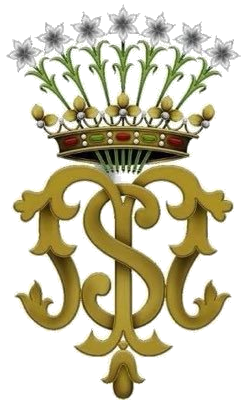
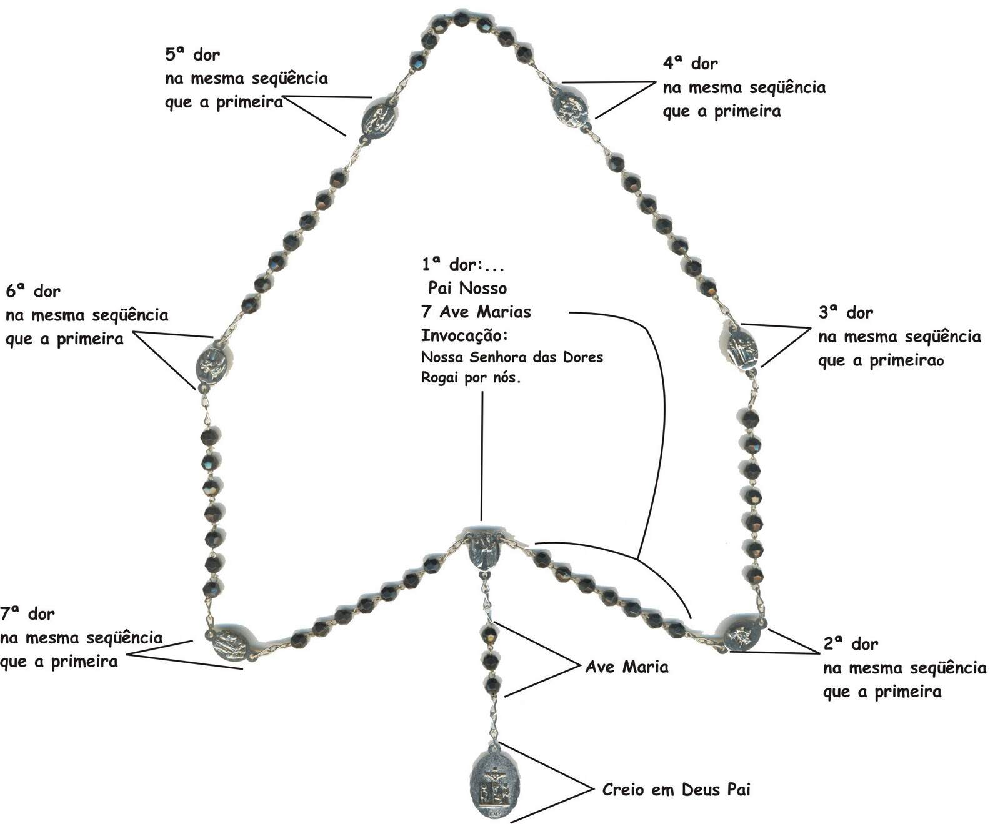

Warning: truncated output (original token count: 75277)
Total output lines: 2383

<!DOCTYPE html>
<html lang="pt-BR">
<head>
<script>window.__SERVITE_VIEW__=new URLSearchParams(location.search).get('view')||'completo';</script>
<script>
(function(){
  try{
    var t = localStorage.getItem('osmTheme') || localStorage.getItem('santoral-osm-theme') || 'dark';
    document.documentElement.setAttribute('data-theme', t);
    var scale = parseFloat(localStorage.getItem('osmReaderScale') || '1');
    if(isFinite(scale)){ document.documentElement.style.fontSize = (16*scale) + 'px'; }
  }catch(e){}
})();</script>
<meta charset="UTF-8">
<meta name="viewport" content="width=device-width, initial-scale=1.0, maximum-scale=1.0, user-scalable=no">
<title>Santoral OSM — Servos de Maria</title>
<link rel="stylesheet" href="media/fonts/fonts.css">
<style>
:root{
  --bg-deep:#EFE4BC;
  --bg-panel:#F8F1D9;
  --bg-panel-2:#FCF8E9;
  --line:#D9C68F;
  --gold:#8A6A1E;
  --gold-soft:#6E5416;
  --wine:#9A2620;
  --wine-soft:#9A2620;
  --paper:#211A10;
  --paper-dim:#211A10;
  --text:#211A10;
  --text-muted:#7A6A46;
  --text-faint:#93815A;
  --shadow: 0 10px 22px -14px rgba(110,84,22,.35);
  --topbar-bg1: rgba(248,241,217,.92);
  --topbar-bg2: rgba(248,241,217,.55);
  --tabbar-bg: rgba(248,241,217,.92);
  --card-corner: rgba(138,106,30,.35);
  --prayer-card-bg1: rgba(154,38,32,.09);
  --prayer-card-bg2: rgba(154,38,32,.03);
  --prayer-card-border: rgba(154,38,32,.30);
  --ambient-1: rgba(154,38,32,.05);
  --ambient-2: rgba(138,106,30,.10);
  --ambient-3: rgba(154,38,32,.04);
  --ambient-bg: linear-gradient(180deg, #F1E6C1 0%, #EFE3BA 45%, #EADBA9 100%);
  --noise-color:0.36, 0.29, 0.13;
  --noise-opacity:.5;
  --noise-blend:multiply;
  --rank-text:#F6EAD2;
}

[data-theme="dark"]{
  --bg-deep:#0B1626;
  --bg-panel:#101E33;
  --bg-panel-2:#14263F;
  --line:#243652;
  --gold:#D9B65C;
  --gold-soft:#E8CD87;
  --wine:#E2645A;
  --wine-soft:#E2857C;
  --paper:#F1EEE3;
  --paper-dim:#F1EEE3;
  --text:#F1EEE3;
  --text-muted:#9FB0C9;
  --text-faint:#71839E;
  --shadow: 0 12px 26px -14px rgba(0,0,10,.6);
  --topbar-bg1: rgba(11,22,38,.92);
  --topbar-bg2: rgba(11,22,38,.55);
  --tabbar-bg: rgba(11,22,38,.92);
  --card-corner: rgba(217,182,92,.28);
  --prayer-card-bg1: rgba(226,100,90,.14);
  --prayer-card-bg2: rgba(226,100,90,.04);
  --prayer-card-border: rgba(226,100,90,.32);
  --ambient-1: rgba(217,182,92,.07);
  --ambient-2: rgba(70,110,180,.16);
  --ambient-3: rgba(226,100,90,.05);
  --ambient-bg: linear-gradient(180deg, #0D1B2E 0%, #0B1626 45%, #081120 100%);
  --noise-color:0.55, 0.65, 0.85;
  --noise-opacity:.06;
  --noise-blend:screen;
  --rank-text:#1A1008;
}

*{box-sizing:border-box; -webkit-tap-highlight-color:transparent;}
html{font-size:16px;}
html,body{margin:0;padding:0;}
body{
  background:var(--bg-deep);
  color:var(--text);
  font-family:'EB Garamond', Georgia, serif;
  min-height:100vh;
  overflow-x:hidden;
  transition:background .25s ease, color .25s ease;
}

#app{
  position:relative;
  max-width:560px;
  margin:0 auto;
  min-height:100vh;
  display:flex;
  flex-direction:column;
}

/* ===== ambient background ===== */
.ambient{position:fixed;inset:0;pointer-events:none;z-index:0;
  background:
    radial-gradient(ellipse 700px 420px at 12% -5%, var(--ambient-1), transparent 60%),
    radial-gradient(ellipse 620px 520px at 105% 25%, var(--ambient-2), transparent 60%),
    radial-gradient(ellipse 900px 700px at 50% 110%, var(--ambient-3), transparent 65%),
    var(--ambient-bg);
  transition:background .25s ease;
}
.ambient::after{
  content:"";
  position:absolute; inset:0;
  opacity:var(--noise-opacity);
  mix-blend-mode:var(--noise-blend);
  background-image:url("data:image/svg+xml;utf8,<svg xmlns='http://www.w3.org/2000/svg' width='120' height='120'><filter id='n'><feTurbulence type='fractalNoise' baseFrequency='0.85' numOctaves='2' stitchTiles='stitch'/><feColorMatrix type='matrix' values='0 0 0 0 0.36  0 0 0 0 0.29  0 0 0 0 0.13  0 0 0 0.05 0'/></filter><rect width='100%25' height='100%25' filter='url(%23n)'/></svg>");
}

/* ===== header ===== */
.topbar{
  position:relative; z-index:2;
  padding:22px 20px 16px;
  border-bottom:1px solid var(--line);
  background:linear-gradient(180deg, var(--topbar-bg1), var(--topbar-bg2));
  backdrop-filter: blur(6px);
}
.topbar-inner{display:flex; align-items:center; gap:10px;}
.topbar-text{ min-width:0; flex:1 1 auto; }
.topbar-text .eyebrow, .topbar-text h1{ white-space:nowrap; overflow:hidden; text-overflow:ellipsis; }
.crest{flex:none; width:38px; height:38px; display:flex; align-items:center; justify-content:center;}
.crest img{width:100%; height:100%; object-fit:contain; filter:drop-shadow(0 1px 2px rgba(110,84,22,.35));}
.eyebrow{
  margin:0 0 2px; font-family:'Cinzel',serif; font-size:10px; letter-spacing:.14em;
  text-transform:uppercase; color:var(--wine-soft); font-weight:600;
}
.topbar h1{
  margin:0; font-family:'Cinzel',serif; font-size:18px; font-weight:600;
  color:var(--gold-soft); letter-spacing:.02em; line-height:1.15;
}
.theme-toggle{
  flex:none; width:36px; height:36px; border-radius:50%;
  border:1px solid var(--line); background:var(--bg-panel); color:var(--gold-soft);
  display:flex; align-items:center; justify-content:center; cursor:pointer;
}
.header-controls{ margin-left:auto; display:flex; align-items:center; gap:6px; flex:none; }
.font-toggle{
  display:flex; align-items:center; border:1px solid var(--line); border-radius:20px;
  overflow:hidden; background:var(--bg-panel);
}
.font-btn{
  border:none; background:none; color:var(--gold-soft); cursor:pointer;
  font-family:'Cinzel',serif; font-size:11px; font-weight:600; padding:8px 9px; line-height:1;
}
.font-btn:first-child{ border-right:1px solid var(--line); }
.font-btn:active{ background:rgba(138,106,30,.14); }

.settings-btn{
  flex:none; width:36px; height:36px; border-radius:50%;
  border:1px solid var(--line); background:var(--bg-panel); color:var(--gold-soft);
  display:flex; align-items:center; justify-content:center; cursor:pointer;
}
.settings-btn svg{ width:18px; height:18px; fill:none; stroke:currentColor; stroke-width:1.6; stroke-linecap:round; stroke-linejoin:round; }
.settings-btn.active{ color:var(--wine); border-color:var(--wine); }

.settings-panel{
  position:relative; z-index:2;
  padding:16px 20px 18px;
  border-bottom:1px solid var(--line);
  background:var(--bg-panel);
  display:flex; flex-direction:column; gap:12px;
}
.settings-panel[hidden]{ display:none; }
.settings-row{ display:flex; align-items:center; justify-content:space-between; gap:12px; flex-wrap:wrap; }
.settings-label{
  font-family:'Cinzel',serif; font-size:11px; letter-spacing:.08em; text-transform:uppercase;
  color:var(--text-muted); flex:none;
}
.chip-group{ display:flex; gap:6px; flex-wrap:wrap; justify-content:flex-end; }
.chip{
  font-family:'EB Garamond',serif; font-size:13px; border:1px solid var(--line); background:var(--bg-panel-2);
  color:var(--text-muted); border-radius:16px; padding:6px 12px; cursor:pointer;
}
.chip.active{ background:rgba(138,106,30,.16); border-color:var(--gold); color:var(--gold-soft); font-weight:600; }

.lang-note{
  font-style:italic; font-size:.85rem; color:var(--text-faint); margin:-6px 0 14px;
}
.theme-toggle svg{ width:18px; height:18px; fill:none; stroke:currentColor; stroke-width:1.8; stroke-linecap:round; stroke-linejoin:round; }
.theme-toggle .icon-moon{ display:none; }
[data-theme="dark"] .theme-toggle .icon-sun{ display:none; }
[data-theme="dark"] .theme-toggle .icon-moon{ display:block; }

/* ===== main view ===== */
main#view{
  position:relative; z-index:1;
  flex:1;
  padding:18px 18px 100px;
}

.section-title{
  font-family:'Cinzel',serif; font-size:0.75rem; letter-spacing:.15em; text-transform:uppercase;
  color:var(--gold-soft); margin:26px 0 10px; padding-left:2px;
}
.section-title:first-child{margin-top:0;}

/* ===== cards ===== */
.card{
  background:linear-gradient(180deg, var(--bg-panel-2), var(--bg-panel));
  border:1px solid var(--line);
  border-radius:14px;
  padding:20px;
  margin-bottom:16px;
  box-shadow:var(--shadow);
  position:relative;
}
.card::before{
  content:"";
  position:absolute; inset:0; border-radius:14px; padding:1px;
  background:linear-gradient(160deg, var(--card-corner), transparent 40%);
  -webkit-mask:linear-gradient(#fff 0 0) content-box, linear-gradient(#fff 0 0);
  -webkit-mask-composite:xor; mask-composite:exclude;
  pointer-events:none;
}

/* ---- date hero ---- */
.hero-date{
  text-align:center;
  padding:26px 18px 22px;
}
.hero-date .weekday{
  font-family:'Cinzel',serif; font-size:0.6875rem; letter-spacing:.22em; text-transform:uppercase;
  color:var(--wine-soft); margin-bottom:6px;
}
.hero-date .day{
  font-family:'Cinzel',serif; font-size:3.5rem; line-height:1; color:var(--gold-soft);
  font-weight:600;
}
.hero-date .month{
  font-family:'Cormorant Garamond',serif; font-style:italic; font-size:1.1875rem; color:var(--text-muted);
  margin-top:6px;
}
.hero-divider{
  width:64px; height:1px; margin:16px auto 0;
  background:linear-gradient(90deg, transparent, var(--gold), transparent);
}

/* ---- saint of the day card ---- */
.saint-card .rank{
  display:inline-block; font-family:'Cinzel',serif; font-size:0.625rem; letter-spacing:.14em;
  text-transform:uppercase; color:var(--rank-text); background:var(--wine);
  padding:3px 9px; border-radius:20px; margin-bottom:10px; font-weight:600;
}
.saint-card h2{
  font-family:'Cormorant Garamond',serif; font-weight:700; font-size:1.5625rem; margin:0 0 4px;
  color:var(--paper); line-height:1.2;
}
.saint-card .date-line{
  color:var(--text-muted); font-style:italic; font-size:0.9375rem; margin-bottom:14px;
}
.empty-note{
  color:var(--text-muted); font-size:1rem; line-height:1.6; font-style:italic;
}
.link-row{
  margin-top:14px; display:flex; justify-content:flex-end;
}
.btn-link{
  font-family:'Cinzel',serif; font-size:0.6875rem; letter-spacing:.1em; text-transform:uppercase;
  color:var(--gold-soft); background:none; border:1px solid var(--line); border-radius:20px;
  padding:9px 16px; cursor:pointer; transition:.2s;
}
.btn-link:active{ background:rgba(138,106,30,.10); }

/* ---- angelus toggle card ---- */
.toggle-row{ display:flex; gap:8px; margin-bottom:14px; }
.toggle-btn{
  flex:1; font-family:'Cinzel',serif; font-size:0.6875rem; letter-spacing:.06em;
  background:var(--bg-panel); border:1px solid var(--line); color:var(--text-muted);
  padding:10px 6px; border-radius:10px; cursor:pointer; text-transform:uppercase;
}
.toggle-btn.active{ background:rgba(138,106,30,.14); border-color:var(--gold); color:var(--gold-soft); }

.prayer-block{
  font-family:'Times New Roman', Times, serif; font-size:1.0625rem; line-height:1.72; color:var(--text);
  white-space:normal;
}
.prayer-block .prayer-paragraph{
  margin:0 0 1.15em;
  line-height:1.72;
  white-space:pre-wrap;
}
.prayer-block .prayer-paragraph:last-child{ margin-bottom:0; }
/* Liturgia das Horas: o espaço entre estrofes e salmos segue o modelo dos documentos litúrgicos fornecidos. */
.prayer-block .prayer-paragraph + .prayer-paragraph{ margin-top:0.18em; }
.prayer-block .rubric{ color:var(--wine); font-weight:700; font-family:'Times New Roman', Times, serif; }

.guided-crown-card{ border:1px solid rgba(138,106,30,.3); background:linear-gradient(135deg, rgba(255,248,220,.95), rgba(255,255,255,.72)); }
.guided-crown-visual{ margin:0 0 16px; padding:10px; border:1px solid var(--line); border-radius:14px; background:rgba(255,255,255,.78); box-shadow:0 8px 24px rgba(74,48,24,.08); }
.guided-crown-visual img{ display:block; width:100%; max-height:430px; object-fit:contain; border-radius:9px; background:#fff; }
.guided-crown-visual figcaption{ margin:9px 4px 0; color:var(--text-faint); font-size:.86rem; line-height:1.45; text-align:center; }
@media(max-width:560px){ .guided-crown-visual{ padding:6px; } .guided-crown-visual img{ max-height:300px; } .guided-crown-visual figcaption{ font-size:.78rem; } }
.guided-crown-head{ display:flex; align-items:center; justify-content:space-between; gap:12px; margin-bottom:12px; }
.guided-crown-kicker{ font-family:'Cinzel',serif; font-size:.68rem; letter-spacing:.12em; text-transform:uppercase; color:var(--gold); }
.guided-crown-progress{ height:6px; border-radius:999px; background:rgba(138,106,30,.14); overflow:hidden; margin:10px 0 18px; }
.guided-crown-progress > span{ display:block; height:100%; border-radius:inherit; background:linear-gradient(90deg,var(--wine),var(--gold)); transition:width .45s ease; }
.guided-crown-step{ animation:guidedCrownIn .42s ease both; }
@keyframes guidedCrownIn{ from{opacity:0; transform:translateY(10px)} to{opacity:1; transform:translateY(0)} }
.guided-crown-pain{ font-family:'Cinzel',serif; font-size:1.05rem; color:var(--wine); margin:0 0 10px; }
.guided-crown-actions{ display:flex; justify-content:space-between; gap:10px; margin-top:20px; }
.guided-crown-actions button{ flex:1; }
.guided-crown-dot{ display:inline-flex; width:28px; height:28px; align-items:center; justify-content:center; border-radius:50%; background:rgba(138,106,30,.13); color:var(--wine); font-family:'Cinzel',serif; margin-right:8px; }
.hour-tabs{
  display:flex; flex-wrap:wrap; gap:8px; margin-bottom:16px;
  border-bottom:1px solid var(--line); padding-bottom:14px;
}
.hour-tab-btn{
  font-family:'Cinzel',serif; font-size:0.6875rem; letter-spacing:.08em; text-transform:uppercase;
  color:var(--text-faint); background:transparent; border:1px solid var(--line);
  border-radius:16px; padding:7px 14px; cursor:pointer; transition:all .2s ease;
}
.hour-tab-btn:hover{ color:var(--wine-soft); border-color:var(--wine-soft); }
.hour-tab-btn.active{
  color:#fff; background:var(--wine); border-color:var(--wine); font-weight:600;
}
.hour-tab-btn.small{ font-size:0.5625rem; padding:5px 10px; }
.hour-tab-content{}
.hour-sublabel{
  font-family:'Cinzel',serif; font-size:0.6875rem; letter-spacing:.08em; text-transform:uppercase;
  color:var(--text-faint); margin:12px 0 4px;
}
.hour-sublabel:first-child{ margin-top:0; }
.hour-divider{
  height:1px; margin:14px 0; background:linear-gradient(90deg, var(--line), transparent);
}

/* ===== santoral list ===== */
.search-wrap{ margin-bottom:18px; }
.search-input{
  width:100%; background:var(--bg-panel); border:1px solid var(--line); border-radius:12px;
  color:var(--text); font-family:'EB Garamond',serif; font-size:1rem; padding:12px 16px;
  outline:none;
}
.search-input::placeholder{ color:var(--text-faint); }
.search-input:focus{ border-color:var(--gold); }

.month-group{ margin-bottom:6px; }
.month-label{
  font-family:'Cinzel',serif; font-size:0.75rem; letter-spacing:.15em; text-transform:uppercase;
  color:var(--wine-soft); margin:22px 2px 8px;
}
.saint-row{
  display:flex; align-items:center; gap:14px;
  padding:13px 4px; border-bottom:1px solid var(--line);
  cursor:pointer;
}
.saint-row:active{ background:rgba(138,106,30,.07); }
.saint-thumb{ width:52px; height:62px; flex:0 0 52px; border-radius:9px; overflow:hidden; background:var(--paper-deep); border:1px solid var(--line); }
.saint-thumb img{ width:100%; height:100%; object-fit:cover; display:block; }
.saint-image-detail{ max-width:430px; margin:0 auto 22px; padding:8px; border-radius:14px; background:var(--paper-deep); border:1px solid var(--line); box-shadow:0 8px 22px rgba(74,48,24,.1); }
.saint-image-detail img{ display:block; width:100%; max-height:520px; object-fit:contain; border-radius:9px; background:#fff; }
.saint-image-caption{ padding:8px 4px 2px; color:var(--text-faint); font-size:.78rem; line-height:1.4; text-align:center; }
@media(max-width:560px){ .saint-thumb{ width:46px; height:56px; flex-basis:46px; } .saint-image-detail{ max-width:100%; } }
.saint-row .daynum{
  font-family:'Cinzel',serif; font-size:1.25rem; color:var(--gold-soft); width:30px; text-align:center; flex:none;
}
.saint-row .rowtext{ flex:1; min-width:0; }
.saint-row .rowtitle{ font-size:1.0625rem; color:var(--paper); }
.saint-row .rowrank{ font-size:0.7812rem; color:var(--text-faint); font-style:italic; }
.saint-row .chev{ color:var(--text-faint); flex:none; }
.no-results{ color:var(--text-faint); font-style:italic; padding:24px 4px; text-align:center; }

/* ===== detail view ===== */
.back-btn{
  display:inline-flex; align-items:center; gap:6px;
  background:none; border:none; color:var(--gold-soft); font-family:'Cinzel',serif;
  font-size:0.6875rem; letter-spacing:.1em; text-transform:uppercase; padding:8px 2px; margin-bottom:14px; cursor:pointer;
}
.detail-header{ text-align:center; padding:6px 6px 22px; }
.detail-header .rank{
  display:inline-block; font-family:'Cinzel',serif; font-size:0.6562rem; letter-spacing:.16em;
  text-transform:uppercase; color:var(--wine); margin-bottom:10px; font-weight:600;
}
.detail-header h2{
  font-family:'Cormorant Garamond',serif; font-weight:700; font-size:1.875rem; color:var(--paper);
  margin:0 0 8px; line-height:1.15;
}
.detail-header .date-line{ color:var(--text-muted); font-style:italic; font-size:1rem; }
.detail-divider{
  width:80px; height:1px; margin:18px auto; background:linear-gradient(90deg, transparent, var(--gold), transparent);
}
.bio-text{
  font-family:Georgia,'Times New Roman',serif; font-size:1.125rem; line-height:1.75; color:var(--paper);
  white-space:pre-line; text-align:justify; text-justify:inter-word; hyphens:none; overflow-wrap:break-word;
  margin-bottom:6px;
}
.prayer-card{
  margin-top:10px;
  background:linear-gradient(180deg, var(--prayer-card-bg1), var(--prayer-card-bg2));
  border:1px solid var(--prayer-card-border);
  border-radius:14px; padding:20px;
}
.prayer-card .label{
  font-family:'Cinzel',serif; font-size:0.6875rem; letter-spacing:.16em; text-transform:uppercase;
  color:var(--wine-soft); margin-bottom:10px;
}
.prayer-card .text{
  font-family:Georgia,'Times New Roman',serif; font-style:normal; font-size:1.02rem; line-height:1.58; color:var(--text);
  white-space:normal;
  overflow-wrap:break-word;
  word-break:normal;
}

/* ===== about ===== */
.about-text{ font-size:1.0625rem; line-height:1.75; color:var(--paper); }
.about-text p{ margin:0 0 14px; }
.about-quote{
  font-family:'Cormorant Garamond',serif; font-style:italic; font-size:1.1875rem; text-align:center;
  color:var(--gold-soft); padding:22px 10px; line-height:1.6;
}
.credit-list{ font-size:0.9375rem; color:var(--text-muted); line-height:1.9; }
.credit-list b{ color:var(--text); font-weight:600; }
.social-links{ display:flex; flex-direction:column; gap:10px; }
.social-link{
  display:flex; align-items:center; gap:12px; padding:12px 14px;
  border:1px solid var(--line); border-radius:12px; text-decoration:none;
  color:var(--text); background:var(--bg-panel-2); transition:background .15s ease, border-color .15s ease;
}
.social-link:hover, .social-link:active{ background:var(--ambient-2); border-color:var(--gold); }
.social-link .social-icon{
  flex:0 0 auto; width:34px; height:34px; border-radius:50%; display:flex; align-items:center; justify-content:center;
  background:var(--gold); color:var(--bg-panel-2);
}
.social-link .social-icon svg{ width:18px; height:18px; }
.social-link .social-label{ font-size:0.9375rem; font-weight:600; color:var(--text); }
.social-link .social-sub{ font-size:0.8125rem; color:var(--text-muted); }

/* ===== tabbar ===== */
.tabbar{
  position:fixed; left:0; right:0; bottom:0; z-index:5;
  max-width:560px; margin:0 auto;
  display:flex;
  background:var(--tabbar-bg); backdrop-filter:blur(10px);
  border-top:1px solid var(--line);
  padding:8px 6px calc(8px + env(safe-area-inset-bottom));
}
.tab-btn{
  flex:1; display:flex; flex-direction:column; align-items:center; gap:4px;
  background:none; border:none; color:var(--text-faint); cursor:pointer;
  padding:6px 2px; font-family:'Cinzel',serif; font-size:10px; letter-spacing:.04em;
}
.tab-btn svg{ width:21px; height:21px; fill:none; stroke:currentColor; stroke-width:1.5; stroke-linecap:round; stroke-linejoin:round; }
.tab-btn.active{ color:var(--gold-soft); }
.tab-btn.active svg{ fill:rgba(138,106,30,.16); }

/* ===== fade transition ===== */
.fade-in{ animation:fadeIn .28s ease; }
@keyframes fadeIn{ from{opacity:0; transform:translateY(6px);} to{opacity:1; transform:translateY(0);} }


/* ===== Harmonização visual com Liturgia OSM ===== */
:root{
  --bg-deep:#15121c;--bg-panel:#1c1826;--bg-panel-2:#221d30;--line:#33293f;
  --gold:#c49a4a;--gold-soft:#e3c988;--wine:#8a2f3d;--wine-soft:#b85566;
  --paper:#f4eee0;--paper-dim:#e7ddc6;--text:#ece4d3;--text-muted:#a89a86;--text-faint:#786a5c;
  --shadow:0 18px 40px -18px rgba(0,0,0,.65);--topbar-bg1:rgba(28,24,38,.96);--topbar-bg2:rgba(28,24,38,.72);
  --tabbar-bg:rgba(28,24,38,.96);--card-corner:rgba(196,154,74,.35);--rank-text:#15121c;
  --ambient-bg:linear-gradient(180deg,#15121c 0%,#120f18 55%,#100d15 100%);
  --ambient-1:rgba(196,154,74,.13);--ambient-2:rgba(138,47,61,.16);--ambient-3:rgba(196,154,74,.05);
}
[data-theme="light"]{
  --bg-deep:#f5f0e6;--bg-panel:#fffaf1;--bg-panel-2:#fffdf8;--line:#d9ccb5;
  --gold:#9a6e25;--gold-soft:#765019;--wine:#8a2f3d;--wine-soft:#9b4050;
  --paper:#2e271f;--paper-dim:#453c31;--text:#2e271f;--text-muted:#6e6254;--text-faint:#8b7d6b;
  --shadow:0 12px 30px -20px rgba(58,42,22,.35);--topbar-bg1:rgba(255,250,241,.96);--topbar-bg2:rgba(255,250,241,.84);
  --tabbar-bg:rgba(255,250,241,.96);--card-corner:rgba(154,110,37,.24);--rank-text:#fffaf1;
  --ambient-bg:linear-gradient(180deg,#f7f2e9,#efe6d8);--ambient-1:rgba(196,154,74,.13);--ambient-2:rgba(138,47,61,.07);--ambient-3:rgba(196,154,74,.05);
}
body{font-family:Georgia,'Times New Roman',serif;}
.eyebrow,.topbar h1,.section-title,.settings-label,.font-btn,.tab-btn,.chip{font-family:Georgia,'Times New Roman',serif;}
.topbar{position:sticky;top:0;padding:14px 16px 12px;}
.topbar h1{font-size:17px}.eyebrow{font-size:9px}.topbar-inner{gap:11px}.crest{width:30px;height:30px}.crest img{width:30px;height:30px}
main#view{padding:14px 18px 100px}.card{border-radius:14px}.section-title{font-size:.72rem;color:var(--text-faint)}
.tabbar{background:var(--tabbar-bg);padding-left:2px;padding-right:2px}.tab-btn{font-size:8.8px}.tab-btn svg{width:19px;height:19px}.tab-btn.active{color:var(--gold-soft)}
.theme-toggle,.settings-btn,.home-return{width:32px;height:32px;border-radius:9px;border:1px solid var(--line);background:var(--bg-panel);color:var(--gold-soft);display:flex;align-items:center;justify-content:center;cursor:pointer;font-family:Georgia,'Times New Roman',serif;font-size:15px}
.home-return:active,.theme-toggle:active,.settings-btn:active{transform:scale(.96);background:rgba(196,154,74,.12)}
.font-toggle{border-radius:9px}.font-btn{padding:8px 8px}.header-controls{gap:6px}
.search-input,.chip,.prayer-block,.bio-text,.about-text{font-family:Georgia,'Times New Roman',serif}
.primary-btn,.back-btn,.btn-link{font-family:Georgia,'Times New Roman',serif}
@media(max-width:380px){.home-return{display:flex}.topbar h1{font-size:16px}}
</style>
<style>
html,body{background:transparent!important} .topbar{display:none!important} .tabbar{display:none!important}
#app{padding-top:0!important} main#view{padding-top:12px!important;padding-bottom:24px!important;min-height:auto!important}
</style>
<style id="directOfficeMode470">
body.direct-office-view .detail-header,
body.direct-office-view .saint-image-detail,
body.direct-office-view .bio-text,
body.direct-office-view .prayer-card,
body.direct-office-view .section-title,
body.direct-office-view .back-btn,
body.direct-office-view .hour-tabs,
body.direct-office-view .btn-link[onclick="toggleOficio()"]{display:none!important}
body.direct-office-view main#view{padding-top:0!important}
body.direct-office-view .card{margin-top:0!important}
body.direct-office-view .hour-tab-content{padding-top:0!important}
body.direct-office-view .prayer-block{margin-top:0!important}
</style>

<style id="invitatorioEvidente475" media="not all">
.hour-tab-content.invitatorio-content{
  max-width:720px!important;
  margin:0 auto 24px!important;
  padding:22px 18px 30px!important;
  background:#f6f0e2!important;
  color:#171717!important;
  border-radius:16px!important;
  box-shadow:0 3px 16px rgba(0,0,0,.10)!important;
  font-family:Georgia,'Times New Roman',serif!important;
}
.hour-tab-content.invitatorio-content .prayer-paragraph{
  color:#171717!important;
  font-family:Georgia,'Times New Roman',serif!important;
  font-size:1.22rem!important;
  line-height:1.72!important;
  margin:0 0 1.15em!important;
  letter-spacing:0!important;
  white-space:pre-wrap!important;
}
.hour-tab-content.invitatorio-content .prayer-paragraph .rubric{
  display:inline-block!important;
  min-width:1.45em!important;
  color:#b3261e!important;
  font-weight:800!important;
  font-style:normal!important;
}
.hour-tab-content.invitatorio-content .hour-sublabel{
  color:#b3261e!important;
  font-family:Georgia,'Times New Roman',serif!important;
  font-size:.93rem!important;
  line-height:1.45!important;
  font-style:italic!important;
  font-weight:600!important;
  text-transform:none!important;
  letter-spacing:0!important;
  margin:24px 0 12px!important;
}
.hour-tab-content.invitatorio-content .prayer-paragraph strong{
  color:#171717!important;
  font-weight:800!important;
}
.hour-tab-content.invitatorio-content hr,
.hour-tab-content.invitatorio-content .hour-divider{
  border-color:rgba(179,38,30,.22)!important;
}
@media(max-width:420px){
  .hour-tab-content.invitatorio-content{
    margin-left:2px!important;
    margin-right:2px!important;
    padding:20px 14px 26px!important;
  }
  .hour-tab-content.invitatorio-content .prayer-paragraph{
    font-size:1.18rem!important;
    line-height:1.68!important;
  }
}
</style>

<style id="invitatorioRefinado476" media="not all">
.hour-tab-content.invitatorio-content{
  max-width:700px!important;
  margin:0 auto 22px!important;
  padding:20px 16px 28px!important;
  background:#faf7ef!important;
  color:#1b1b1b!important;
  border:1px solid rgba(120,90,45,.10)!important;
  border-radius:12px!important;
  box-shadow:0 2px 10px rgba(0,0,0,.055)!important;
  font-family:Georgia,'Times New Roman',serif!important;
}
.hour-tab-content.invitatorio-content .prayer-paragraph{
  color:#1b1b1b!important;
  font-family:Georgia,'Times New Roman',serif!important;
  font-size:1.17rem!important;
  line-height:1.67!important;
  margin:0 0 1.08em!important;
  letter-spacing:0!important;
  white-space:pre-wrap!important;
}
.hour-tab-content.invitatorio-content .prayer-paragraph .rubric{
  display:inline-block!important;
  min-width:1.42em!important;
  color:#9f2d28!important;
  font-weight:800!important;
  font-style:normal!important;
}
.hour-tab-content.invitatorio-content .hour-sublabel{
  color:#9f2d28!important;
  font-family:Georgia,'Times New Roman',serif!important;
  font-size:.88rem!important;
  line-height:1.45!important;
  font-style:italic!important;
  font-weight:500!important;
  text-transform:none!important;
  letter-spacing:0!important;
  margin:21px 0 10px!important;
}
.hour-tab-content.invitatorio-content .prayer-paragraph strong{
  color:#1b1b1b!important;
  font-weight:800!important;
}
@media(max-width:420px){
  .hour-tab-content.invitatorio-content{
    padding:18px 13px 25px!important;
    border-radius:10px!important;
  }
  .hour-tab-content.invitatorio-content .prayer-paragraph{
    font-size:1.14rem!important;
    line-height:1.64!important;
  }
}
</style>

<style id="oficioLeituras477" media="not all">
.hour-tab-content.oficio-leituras-content{
  max-width:700px!important;
  margin:0 auto 22px!important;
  padding:20px 16px 30px!important;
  background:var(--surface)!important;
  color:var(--text)!important;
  border:1px solid var(--border)!important;
  border-radius:12px!important;
  font-family:Georgia,'Times New Roman',serif!important;
}
.hour-tab-content.oficio-leituras-content .prayer-paragraph{
  font-family:Georgia,'Times New Roman',serif!important;
  font-size:1.12rem!important;
  line-height:1.70!important;
  margin:0 0 1.18em!important;
  letter-spacing:0!important;
  white-space:pre-wrap!important;
}
.hour-tab-content.oficio-leituras-content .prayer-paragraph .rubric{
  display:inline-block!important;
  min-width:1.42em!important;
  color:#9f2d28!important;
  font-weight:800!important;
}
.hour-tab-content.oficio-leituras-content .hour-sublabel{
  margin:26px 0 12px!important;
  padding-bottom:7px!important;
  border-bottom:1px solid var(--border)!important;
  font-family:Georgia,'Times New Roman',serif!important;
  font-size:.92rem!important;
  line-height:1.4!important;
  font-weight:700!important;
  letter-spacing:.025em!important;
  text-transform:none!important;
  color:var(--gold-soft)!important;
}
.hour-tab-content.oficio-leituras-content .prayer-paragraph strong{
  font-weight:800!important;
}
@media(max-width:420px){
  .hour-tab-content.oficio-leituras-content{padding:18px 13px 26px!important}
  .hour-tab-content.oficio-leituras-content .prayer-paragraph{
    font-size:1.09rem!important;
    line-height:1.67!important;
  }
}
</style>

<style id="laudes480" media="not all">
.hour-tab-content.laudes-content{
 max-width:700px!important;margin:0 auto 22px!important;padding:20px 16px 30px!important;
 background:var(--surface)!important;color:var(--text)!important;border:1px solid var(--border)!important;
 border-radius:12px!important;font-family:Georgia,'Times New Roman',serif!important}
.hour-tab-content.laudes-content .prayer-paragraph{
 font-family:Georgia,'Times New Roman',serif!important;font-size:1.12rem!important;
 line-height:1.68!important;margin:0 0 1.12em!important;white-space:pre-wrap!important}
.hour-tab-content.laudes-content .prayer-paragraph .rubric{
 display:inline-block!important;min-width:1.42em!important;color:#9f2d28!important;font-weight:800!important}
.hour-tab-content.laudes-content .hour-sublabel{
 margin:24px 0 10px!important;padding-bottom:7px!important;border-bottom:1px solid var(--border)!important;
 font-family:Georgia,'Times New Roman',serif!important;font-size:.9rem!important;font-weight:700!important;color:var(--gold-soft)!important}
</style>
<style id="horaMedia482" media="not all">
.hour-tab-content.hora-media-content{
 max-width:700px!important;margin:0 auto 22px!important;padding:19px 16px 28px!important;
 background:var(--surface)!important;color:var(--text)!important;border:1px solid var(--border)!important;
 border-radius:12px!important;font-family:Georgia,'Times New Roman',serif!important}
.hour-tab-content.hora-media-content .prayer-paragraph{
 font-family:Georgia,'Times New Roman',serif!important;font-size:1.10rem!important;
 line-height:1.66!important;margin:0 0 1.08em!important;white-space:pre-wrap!important}
.hour-tab-content.hora-media-content .prayer-paragraph .rubric{
 display:inline-block!important;min-width:1.42em!important;color:#9f2d28!important;font-weight:800!important}
.hour-tab-content.hora-media-content .hour-sublabel{
 margin:22px 0 10px!important;padding-bottom:6px!important;border-bottom:1px solid var(--border)!important;
 font-family:Georgia,'Times New Roman',serif!important;font-size:.88rem!important;font-weight:700!important;
 color:var(--gold-soft)!important}
.hour-tab-content.hora-media-content .prayer-paragraph strong{font-weight:800!important}
@media(max-width:420px){
 .hour-tab-content.hora-media-content{padding:17px 13px 24px!important}
 .hour-tab-content.hora-media-content .prayer-paragraph{font-size:1.07rem!important;line-height:1.64!important}
}
</style>

<style id="vesperas483" media="not all">
.hour-tab-content.vesperas-content{
 max-width:700px!important;margin:0 auto 22px!important;padding:20px 16px 30px!important;
 background:var(--surface)!important;color:var(--text)!important;border:1px solid var(--border)!important;
 border-radius:12px!important;font-family:Georgia,'Times New Roman',serif!important}
.hour-tab-content.vesperas-content .prayer-paragraph{
 font-family:Georgia,'Times New Roman',serif!important;font-size:1.12rem!important;
 line-height:1.69!important;margin:0 0 1.12em!important;white-space:pre-wrap!important}
.hour-tab-content.vesperas-content .prayer-paragraph .rubric{
 display:inline-block!important;min-width:1.42em!important;color:#9f2d28!important;font-weight:800!important}
.hour-tab-content.vesperas-content .hour-sublabel{
 margin:24px 0 10px!important;padding-bottom:7px!important;border-bottom:1px solid var(--border)!important;
 font-family:Georgia,'Times New Roman',serif!important;font-size:.90rem!important;font-weight:700!important;
 color:var(--gold-soft)!important}
.hour-tab-content.vesperas-content .prayer-paragraph strong{font-weight:800!important}
@media(max-width:420px){
 .hour-tab-content.vesperas-content{padding:18px 13px 26px!important}
 .hour-tab-content.vesperas-content .prayer-paragraph{font-size:1.09rem!important;line-height:1.66!important}
}
</style>

<style id="leitorServitaCanonico4912">
/* Componente único migrado de Hoje na Família Servita. */
html,body{width:100%;max-width:100%;overflow-x:clip!important;overscroll-behavior-x:none}
body{touch-action:pan-y}
html,body,#app,#view,.card,.hour-tab-content,.today-servita-reader,.litblock{min-width:0;max-width:100%;box-sizing:border-box}
#app{width:100%;max-width:min(560px,100%);overflow-x:clip!important}
#view{width:100%;overflow-x:clip!important}
.card{width:100%;overflow-x:clip!important}
.hour-tab-content{width:100%!important;margin-left:0!important;margin-right:0!important;overflow-x:clip!important}
.hour-tabs{display:grid;grid-template-columns:repeat(2,minmax(0,1fr));width:100%;max-width:100%;overflow:hidden}
.hour-tab-btn{min-width:0;width:100%;max-width:100%;padding:8px 7px;white-space:normal;overflow-wrap:anywhere;line-height:1.2}
.today-servita-reader{width:100%;max-width:100%;overflow-x:clip!important;contain:inline-size;font-family:Georgia,'Times New Roman',serif;color:var(--text);font-size:1.02rem;-webkit-text-size-adjust:100%;text-size-adjust:100%}
.today-servita-reader *{min-width:0;max-width:100%;box-sizing:border-box;word-break:normal;overflow-wrap:break-word}
.today-servita-reader .litblock{padding:18px 0;border-top:1px solid var(--line)}
.today-servita-reader .litblock:first-child{border-top:0}
.today-servita-reader .litheading{width:100%;margin:0 0 16px;text-align:center;color:var(--wine);font:700 1.12rem Georgia,'Times New Roman',serif;letter-spacing:.055em;text-transform:uppercase;overflow-wrap:anywhere}
.today-servita-reader .antiphon{margin:14px auto;padding:12px 15px;text-align:center;line-height:1.58;color:#2b2924;background:#f7f3e9;border-top:2px solid var(--gold-soft);border-bottom:1px solid #e5dac1;border-radius:10px}
.today-servita-reader .rubric{margin:13px auto;text-align:center;color:var(--wine);font-style:italic;line-height:1.55}
.today-servita-reader .psalm-title{margin:22px auto 13px;text-align:center;color:#173f70;font-weight:700;line-height:1.35}
.today-servita-reader .hymn-stanza,.today-servita-reader .psalm-stanza{margin:0 auto 22px;padding:0 2px;text-align:center;line-height:1.5}
.today-servita-reader .hymn-stanza:last-child,.today-servita-reader .psalm-stanza:last-child{margin-bottom:0}
.today-servita-reader .hymn-stanza-line,.today-servita-reader .psalm-verse{display:block;margin:0;white-space:pre-wrap}
.today-servita-reader .response,.today-servita-reader .preces-response{margin:10px auto 18px;padding:9px 12px;text-align:center;line-height:1.55;border-top:1px solid var(--line)}
.today-servita-reader .preces-intro,.today-servita-reader .preces-intention,.today-servita-reader .liturgical-prayer{margin:0 auto 20px;text-align:center;line-height:1.58;white-space:pre-wrap}
.today-servita-reader .reading-ref{margin:0 0 6px;font-weight:700;line-height:1.5}
.today-servita-reader .reading-title{margin:0 0 12px;color:var(--wine);font-style:italic;line-height:1.5}
.today-servita-reader .reading-body{margin:0 0 18px;text-align:justify;line-height:1.7;white-space:pre-wrap}
.today-servita-reader .littext{margin:0 auto 16px;text-align:center;line-height:1.58;white-space:pre-wrap}
.bio-text,.about-text{text-align:justify;hyphens:none;text-justify:inter-word}
.prayer-card .label,.prayer-card .text{text-align:center}
.prayer-card .text{white-space:normal!important;font-style:normal!important;font-size:1.02rem!important;line-height:1.58!important}
.tabbar{width:100%;max-width:560px;overflow:hidden;box-sizing:border-box}.tab-btn{min-width:0;overflow:hidden}
@media(min-width:480px){.hour-tabs{grid-template-columns:repeat(3,minmax(0,1fr))}}
@media(max-width:420px){.today-servita-reader{font-size:.96rem}.today-servita-reader .litblock{padding:16px 0}.today-servita-reader .hymn-stanza,.today-servita-reader .psalm-stanza{margin-bottom:20px}.today-servita-reader .antiphon{padding:11px 10px}.today-servita-reader .reading-body{text-align:left}.prayer-card{padding:16px}.prayer-card .text{font-size:1rem!important;line-height:1.52!important}}
[data-theme="dark"] .today-servita-reader .antiphon{color:#f1eee3!important;background:#17263d!important;border-color:rgba(217,182,92,.58)!important;opacity:1!important}
[data-theme="dark"] .today-servita-reader .psalm-title{color:var(--gold-soft)}
[data-theme="dark"] .today-servita-reader .rubric,[data-theme="dark"] .today-servita-reader .litheading{color:var(--wine-soft)}
body.direct-office-view main#view{width:100%;padding:0 12px 24px!important;overflow-x:clip!important}
body.direct-office-view .card{width:100%;margin:0!important;padding:18px 16px!important;overflow-x:clip!important}
body.direct-office-view .hour-tab-content{padding:0!important;border:0!important;border-radius:0!important;background:transparent!important;box-shadow:none!important}
@media(max-width:420px){body.direct-office-view main#view{padding-inline:8px!important}body.direct-office-view .card{padding-inline:12px!important}.today-servita-reader .litheading{letter-spacing:.035em}}
</style>

<style id="regraFloatingBack486">
.regra-floating-back{
 position:fixed!important;
 right:18px!important;
 bottom:22px!important;
 z-index:9999!important;
 display:flex!important;
 align-items:center!important;
 gap:6px!important;
 min-height:46px!important;
 padding:0 15px!important;
 border:1px solid var(--border)!important;
 border-radius:24px!important;
 background:var(--surface)!important;
 color:var(--text)!important;
 box-shadow:0 4px 18px rgba(0,0,0,.18)!important;
 font:600 .9rem/1 system-ui,-apple-system,sans-serif!important;
 cursor:pointer!important;
}
.regra-floating-back:active{transform:scale(.97)}
@media(max-width:420px){
 .regra-floating-back{right:14px!important;bottom:18px!important}
}
</style>
</head>
<body>

<div id="app">

  <!-- ===== Ambient background ornament ===== -->
  <div class="ambient" aria-hidden="true">
    <svg class="star-field" viewBox="0 0 400 800" preserveAspectRatio="none"></svg>
  </div>

  <!-- ===== Header ===== -->
  <header class="topbar">
    <div class="topbar-inner">
      <div class="crest" aria-hidden="true">
        
      </div>
      <div class="topbar-text">
        <p class="eyebrow" data-i18n="appEyebrow">Ordem dos Servos de Maria</p>
        <h1 data-i18n="appTitle">Santoral &amp; Orações</h1>
      </div>
      <div class="header-controls">
        <button class="home-return" onclick="window.location.href='index.html'" aria-label="Voltar ao Liturgia OSM" title="Voltar ao Liturgia OSM">⌂</button>
        <button class="settings-btn" id="settingsBtn" aria-label="Configurações" onclick="toggleSettings()">
          <svg viewBox="0 0 24 24"><circle cx="12" cy="12" r="3.2"/><path d="M19.4 13.5a7.6 7.6 0 0 0 0-3l2-1.5-2-3.4-2.3.9a7.6 7.6 0 0 0-2.6-1.5L14 2.5h-4l-.5 2.5a7.6 7.6 0 0 0-2.6 1.5l-2.3-.9-2 3.4 2 1.5a7.6 7.6 0 0 0 0 3l-2 1.5 2 3.4 2.3-.9a7.6 7.6 0 0 0 2.6 1.5l.5 2.5h4l.5-2.5a7.6 7.6 0 0 0 2.6-1.5l2.3.9 2-3.4Z"/></svg>
        </button>
      </div>
    </div>

    <div class="settings-panel" id="settingsPanel" hidden>
      <div class="settings-row">
        <span class="settings-label" data-i18n="settingsLanguage">Idioma</span>
        <div class="chip-group" id="langGroup">
          <button class="chip" data-lang="pt" onclick="setLanguage('pt')">Português</button>
          <button class="chip" data-lang="la" onclick="setLanguage('la')">Latina</button>
          <button class="chip" data-lang="it" onclick="setLanguage('it')">Italiano</button>
          <button class="chip" data-lang="en" onclick="setLanguage('en')">English</button>
        </div>
      </div>
      <div class="settings-row">
        <span class="settings-label" data-i18n="settingsTheme">Tema</span>
        <div class="chip-group">
          <button class="chip" id="themeChipLight" onclick="setTheme('light')" data-i18n="settingsLight">Claro</button>
          <button class="chip" id="themeChipDark" onclick="setTheme('dark')" data-i18n="settingsDark">Escuro</button>
        </div>
      </div>
      <div class="settings-row">
        <span class="settings-label" data-i18n="settingsFontSize">Tamanho da fonte</span>
        <div class="font-toggle" role="group" aria-label="Tamanho da fonte">
          <button class="font-btn" onclick="changeFontSize(-1)" aria-label="Diminuir fonte">A-</button>
          <button class="font-btn" onclick="changeFontSize(1)" aria-label="Aumentar fonte">A+</button>
        </div>
      </div>
    </div>
  </header>

  <main id="view"></main>

  <nav class="tabbar" id="tabbar">
    <button class="tab-btn" data-tab="hoje">
      <svg viewBox="0 0 24 24"><path d="M12 3 L14.2 9.2 L21 9.5 L15.6 13.6 L17.4 20.2 L12 16.4 L6.6 20.2 L8.4 13.6 L3 9.5 L9.8 9.2 Z"/></svg>
      <span data-i18n="tabHoje">Hoje</span>
    </button>
    <button class="tab-btn" data-tab="santoral">
      <svg viewBox="0 0 24 24"><rect x="3.5" y="4.5" width="17" height="16" rx="1.5"/><path d="M3.5 9.5h17M8 3v3M16 3v3"/></svg>
      <span data-i18n="tabSantoral">Santoral</span>
    </button>
    <button class="tab-btn" data-tab="oracoes">
      <svg viewBox="0 0 24 24"><path d="M12 21c-4-3-8-6.2-8-10.6C4 7 6.4 5 9.1 5c1.2 0 2.3.5 3 1.4C12.6 5.5 13.7 5 14.9 5 17.6 5 20 7 20 10.4 20 14.8 16 18 12 21Z"/></svg>
      <span data-i18n="tabOracoes">Orações</span>
    </button>
    <button class="tab-btn" data-tab="regra">
      <svg viewBox="0 0 24 24"><path d="M6 3.5h9.5L19 7v13.5a1 1 0 0 1-1 1H6a1 1 0 0 1-1-1v-16a1 1 0 0 1 1-1Z"/><path d="M15 3.5V7h4M8.5 11h7M8.5 14h7M8.5 17h4.5"/></svg>
      <span data-i18n="tabRegra">Regra</span>
    </button>
    <button class="tab-btn" data-tab="sobre">
      <svg viewBox="0 0 24 24"><circle cx="12" cy="12" r="8.5"/><path d="M12 10.5v6M12 7.6v.1"/></svg>
      <span data-i18n="tabSobre">Sobre</span>
    </button>
  </nav>

</div>

<script>
let SANTORAL = [];

const SANTORAL_IMAGES = {
  'Santo Antônio Maria Pucci': 'media/servite-12.jpg',
  'Sete Santos Fundadores': 'media/servite-11.jpg',
  'São Peregrino de Forlì': 'media/servite-10.webp',
  'B. Tomás de Orvieto': 'media/servite-09.jpg',
  'São Filipe Benizi': 'media/servite-08.jpg',
  'B. Cecília Eusepi': 'media/servite-07.jpg',
  'Santa Juliana de Florença': 'media/servite-06.jpg',
  'B. Joana de Florença': 'media/servite-05.jpg',
  'B. Maria Madalena da Paixão': 'media/servite-04.jpg',
  'B. Maria Guadalupe Ricart Olmos': 'media/servite-03.jpg',
  'Todos os Santos e Santas da Ordem': 'media/servite-02.webp'
};
function saintImageHtml(s, detail=false){
  const src = SANTORAL_IMAGES[s.title];
  if(!src) return '';
  return detail
    ? `<div class="saint-image-detail fade-in"><div class="saint-image-caption">Imagem original com aprimoramento de nitidez.</div></div>`
    : `<div class="saint-thumb"></div>`;
}

const PRAYERS = {"regra": {"intro": "Regra de Vida\nda Ordem Secular dos Servos de\nMaria\nOSSM\nAos irmãos e irmãs da Ordem Secular dos\nServos de Maria\nProt. 415/95\nO mesmo Espírito Santo que em 1233 chamou\nos nossos Primeiros Pais, hoje convoca todos vocês,\nirmãos e irmãs, para que deem testemunho do\nEvangelho em comunhão fraterna e se coloquem a\nserviço de Deus e do próximo, inspirando-se\nconstantemente em Maria, Mãe e Serva do Senhor.\nCristo Ressuscitado convida-os a percorrer o\nmesmo caminho de santidade que há 762 anos vem\nsendo trilhado pelos irmãos e irmãs da nossa Ordem, e\na prolongar em suas famílias e comunidades cristãs a\npresença operante de Maria, Mãe de Jesus.\nA Sé Apostólica, ao aprovar em 29 de abril de\n1995 a presente “Regra de Vida”, mostra ter em grande\napreço o caminho que vocês e suas fraternidades\npercorreram, guiados pelas diretrizes do Concílio\nVaticano II e da Regra aprovada experimentalmente\nem 2 de outubro de 1982 pelo Conselho Geral da\nOrdem.\nComo membros vivos da Família dos Servos de\nMaria, vocês assumem o compromisso de viver o\nbatismo à luz desta “Regra de Vida”. Trilhando o\ncaminho da santidade, vocês constroem a igreja-comunhão e anunciam o Evangelho em lugares e\nsituações onde só vocês, leigos, podem testemunhar\nCristo, filho de Maria e primogênito entre muitos\nirmãos. Como Maria, levando aos irmãos e irmãs a\nPalavra que salva e colocando-se ao lado dela aos pés\ndas infinitas cruzes da humanidade, vocês estarão\nlevando conforto e esperança de libertação, cooperando\ncom a missão evangelizadora da Igreja.\nA presente Regra, ora aprovada pela Sé\nApostólica, entrará em vigor dia 15 de agosto de 1995,\nna solenidade da Assunção de Nossa Senhora ao céu, e\ndia em que, segundo a tradição, nossos Primeiros Pais\nchegaram a Monte Senário.\nFazemos votos que no seio das comunidades\ncristãs e das suas fraternidades seculares, vocês sigam\nsempre o caminho de fé e de amor da Virgem do\nMagnificat. Assim fazendo, vocês poderão\ncompartilhar as “maravilhas” que o Senhor fez em\nMaria e um dia juntar-se a Ela no céu, onde reina\ngloriosa e intercede benigna por todos os seus Servos.\nAlegrem-se, pois, e procurem atrair outros para\ncompartilhar a vida de suas fraternidades. Propaguem\nseu carisma de unidade e de harmonia fraterna na\nIgreja e neste mundo tão carente de união, de paz e de\ncompreensão mútua.\nRoma, 4 de maio de 1995, festa de São Peregrino\nLaziosi, OSM e 650° aniversário de sua morte.\nfrei Reinhold M. Bodner, osm\nsecretário da Ordem\nDecreto de Aprovação\nCongregação dos Institutos de Vida\nConsagrada e das Sociedades de Vida\nApostólica\nProt. n. S. 48-1/95\nO Prior Geral da Ordem dos Servos de Maria,\ncom o consenso do seu Conselho, encaminhou à Sé\nApostólica pedido de aprovação da “Regra de Vida” da\nOrdem Secular dos Servos de Maria, revista segundo o\nespírito do Concílio Vaticano II e as normas do Código\nde Direito Canônico.\nA Congregação dos Institutos de Vida\nConsagrada e das Sociedades de Vida Apostólica, vista\na exposição de motivos e estudado atentamente o texto\nem questão, segundo as normas do Direito, com o\npresente decreto aprova e confirma a presente Regra de\nVida, redigida em língua inglesa, conforme exemplar\nguardado nos arquivos deste Dicastério.\nOs membros da Ordem Secular dos Servos de\nMaria, trilhando o caminho dos Sete Santos\nFundadores da Ordem, procurem viver uma vida cristã\nfiel e íntegra e, com renovado ardor, busquem, dia após\ndia, a perfeição do seu estado de vida.\nRevogam-se as disposições em contrário.\nDado em Roma, em 29 de abril de 1995\nEduardo cardeal Martínez Somalo\nPrefeito\nFrancisco Xavier Errázuriz Ossa\nsecretário\nA Ordem Secular na História dos Servos de\nMaria\nAs Constituições da nossa Ordem dizem que “o\nideal dos Servos de Maria suscitou ao redor de nossas\ncomunidades ou associou à Ordem várias famílias ou\ngrupos que, como expressões particulares de vida\nconsagrada ou laical, participam da nossa mesma\nvocação” (art. 15).\nEntre essas expressões particulares está a Ordem\nSecular, até recentemente chamada Ordem Terceira.\nTendo a Ordem nascido de um grupo de sete leigos\nflorentinos, não nos admira que a raiz mais profunda da\nOrdem Secular se confunda e se identifique com a\norigem da Ordem mesma. Todavia, como expressão\nparticular no âmbito da nossa família, a Ordem Secular\nfoi-se configurando aos poucos até assumir um perfil\npróprio. O patrimônio espiritual, porém, foi sempre o\ndas origens, assim como foi vivido pelos Sete\nFundadores e pelos Primeiros Pais, na esteira de uma\nexperiência anterior muito difundida no século XIII: a\ndos Irmãos da Penitência.\nA Legenda sobre as origens da Ordem, citando\num texto anterior, assim fala a respeito dos nossos\nPrimeiros Pais: “Temendo suas imperfeições,\nhumildemente decidiram colocar a si mesmos e seus\ncorações, com toda devoção, aos pés da Rainha dos\ncéus, para que Ela, como mediadora e advogada, os\nsuprindo Ela, com sua grande caridade, as imperfeições\ndeles, lhes obtivesse, misericordiosa, a fecundidade de\nméritos”.\nAinda segundo a Legenda, a experiência de\nnossos Primeiros Pais em Monte Senário caracterizou-se por um estilo de vida simples e, ao mesmo tempo,\nprofundo de vida cristã. Todos os que acorriam a\nMonte Senário “viam que eles não encobriam\nfalsamente seus sentimentos, nem simulavam como\nverdadeiras as coisas falsas, nem como falsas as\nverdadeiras. Viam-nos, pelo contrário, como eles\nverdadeiramente eram: simples, nada faziam por\nostentação, exprimiam com palavras seus sentimentos,\namavam a verdade, evitavam a mentira, distribuíam\ngratuitamente seus bens, sofriam com a maldade antes\nque praticá-la, não se vingavam da ofensa recebida e\nconsideravam um ganho sofrer injúrias por amor à\nverdade”.\nEsses textos primitivos descrevem o espírito do\nque viria a ser no futuro a Ordem secular dos Servos de\nMaria.\nLogo, porém, nossos Primeiros Pais e seus\nseguidores criaram comunidades específicas de\npessoas consagradas e, em poucas décadas, deram vida\nà Ordem dos Servos de Maria que, em 1304, foi\noficialmente aprovada pelo papa Bento XI.\nSabemos que desde as origens houve indivíduos\nou grupos, homens e mulheres, que, ligados aos nossos\nconventos, compartilhavam, como leigos, a vida e a\nespiritualidade dos frades Servos de Maria.\nÉ sintomático a figura de Henrique ou Arrigo de\nSanta Maria de Cafaggio, ligou-se como oblato à igreja\nde Santa Maria de Cafaggio, em Florença. Apesar\ndisso, nada nos autoriza a dizer que houvesse então\numa Regra comum para esses oblatos e oblatas, por\nmais simples que fosse.\nO início por assim-dizer oficial da Ordem\nTerceira dos Servos de Maria é atribuída à bula Sedis\nApostolicae Providentia do papa Martinho V,\npromulgada em 16 de março de 1424. Essa deferência\ndo papa Martinho V em favor dos Servos de Maria\ntalvez se deva ao fato de ele, quando era cardeal Odão\nColonna, ter sido protetor da Ordem de 1407 a 1418.\nO nome mais comum da futura Ordem Terceira\nera Associação ou Companhia dos Servos de Maria.\nEsse nome aparece no final do século XV. Uma prova\ndisso é um livreto de Nicolau Manetti di Pistoia, que\npode ser considerado como o primeiro manual da\nOrdem Terceira.\nA partir do final do século XVI e no início do\nséculo XVII, os priores gerais mais contribuíram para\no crescimento da Ordem Terceira. Embora tendo vários\nnomes, como Associação ou Companhia dos Servos de\nMaria, ela distinguia-se claramente das confrarias.\nNo final do século XIX, com a retomada da\nOrdem subsequente às supressões impostas pelos\ngovernos liberais da Itália, a Ordem Terceira voltou a\ncrescer. Dois escritos do papa Leão XIII modificaram\na antiga Regra de Martinho V. No entanto, só em 1925\nfoi publicada a nova Regra. A esta seguiu-se outra,\ncomposta por iniciativa do prior geral frei Afonso M.\nMontà e aprovada pela Sagrada Congregação dos\nReligiosos em 1º de maio de 1966.\nNa esteira do Concílio Vaticano II, os Servos de\nMaria iniciaram um processo de revisão de suas\nConstituições. O novo texto, aprovado no capítulo\ngeral extraordinário de Majadahonda (Madri), em\n1968, e revisto parcialmente nos capítulos gerais\nseguintes, foi finalmente aprovado pela Sé Apostólica\nem 1987.\nCom relação à Ordem Secular, o Conselho Geral\nda Ordem nomeou uma comissão especial encarregada\nde consultar os membros da Ordem Secular e de ajudá-los na revisão de sua Regra de Vida. Concluído o\ntrabalho, o texto da nova Regra foi aprovado\nexperimentalmente pelo Conselho Geral em outubro de\n1982. Em seguida, a pedido do capítulo geral de 1989,\no Secretariado Geral da Ordem Secular voltou a\nconsultar as bases em vista da redação final do texto a\nser submetida à aprovação da Sagrada Congregação\ndos Institutos de Vida Consagrada e das Sociedades de\nVida Apostólica.\nA presente edição da Regra de Vida da Ordem\nSecular dos Servos de Maria foi aprovada pela Sé\nApostólica em 29 de abril de 1995.\nAo longo de sua história, a Ordem Secular dos\nServos de Maria contou em suas fileiras com muitos\nirmãos e irmãs que se distinguiram por sua santidade,\npelo apego à Família Servita e pela vivência do nosso\ncarisma. Eles são testemunhas vivas e motivo de\nesperança para toda a nossa família.", "chapters": [{"roman": "I", "title": "A Ordem dos Servos de Maria", "text": "1. A Ordem dos Servos de Maria, nascida como\nexpressão de vida evangélico-apostólica, é uma\ncomunidade de homens reunidos em nome do Senhor\nJesus.\nMovidos pelo Espírito, comprometemo-nos, como\nnossos Primeiros Pais, a testemunhar o evangelho em\ncomunhão fraterna e a colocar-nos a serviço de Deus e\ndos seres humanos, inspirando-nos constantemente em\nMaria, Mãe e Serva do Senhor.\n2. Para servir ao Senhor e aos irmãos, os Servos de\nMaria, desde as origens, dedicaram-se à Mãe de Deus,\na Maria, desde as origens, dedicaram-se à Mãe do\nAltíssimo.\nA Ela se voltaram no seu caminho para Cristo e na\nmissão de anunciá-lo aos seres humanos. Do “sim” da\nhumilde serva do Senhor aprenderam a acolher a\nPalavra de Deus e a estar atentos à voz do Espírito; da\nparticipação da Mãe na obra redentora do Filho, servo\nsofredor de Javé, foram induzidos a compreender e\naliviar os sofrimentos humanos.\n3. Sensíveis aos apelos da Igreja, queremos, através do\nestudo, conhecer sempre melhor a Virgem Maria, Mãe\nde Deus e dos seres humanos, e sua missão no mistério\nda Salvação.\nVendo nela o fruto mais sublime da Redenção,\napoiamos com nossas energias as exigências\nlibertadoras dos indivíduos e da sociedade.\nConscientes da divisão entre os cristãos, empenhamo-nos para que a Filha de Sião seja para todos sinal de\nunidade. Às pessoas inseguras, propomos como\nexemplo de confiança dos filhos de Deus, a mulher\nhumilde que pôs no Senhor sua esperança.\n4. Inspirando-se constantemente em Maria, Mãe e\nServa do Senhor, vários institutos religiosos e grupos\nleigos nasceram à sombra das comunidades dos Servos\nde Maria, como expressões particulares de vida\nconsagrada ou laical. Outros institutos e grupos já\nexistentes, atraídos pelo mesmo ideal, agregaram-se à\nOrdem. Cada um deles, quer seja religioso ou leigo,\nvive à sua maneira a mesma vocação que é comum a\ntodos."}, {"roman": "II", "title": "A Ordem Secular dos Servos de Maria e a Vida da Fraternidade", "text": "5. A Ordem Secular dos Servos de Maria congrega\nhomens e mulheres que, unidos pela consagração\nbatismal e movidos pelo Espírito, querem engajar-se no\nserviço a Cristo e aos irmãos deste mundo, inspirando-se em Maria, Mãe e Serva do Senhor. Como membros\nleigos ou seculares da Ordem dos Servos de Maria,\ncomprometem-se, em sua vida familiar e social, a\nseguir o caminho trilhado pelos Sete Santos\nFundadores da Ordem.\n6. Composta de homens e mulheres que vivem sua\nconsagração batismal no mundo, a Ordem Secular é\numa das expressões da mesma vocação da Família dos\nServos de Maria. É parte integrante da Família Servita\ne, como tal, compartilha seus mesmos ideais, o mesmo\ncompromisso de vida evangélico-apostólica e uma\nparticular devoção à Mãe de Deus.\n7. Como membros seculares da Ordem dos Servos de\nMaria, estes irmãos e irmãs são autênticas testemunhas\nda origem laical da nossa Ordem. De fato, foi como\nleigos que os Sete Primeiros Pais iniciaram sua vida\ncomunitária, unidos na oração e no serviço à bem-aventurada Virgem Maria.\n8. Na Igreja, povo santo de Deus, a vocação do irmão e\nda irmã secular dos Servos de Maria é um chamado\nespecial. Comporta um convite gratuito de Deus e uma\nresposta consciente e livre do vocacionado, o qual, ao\ndoar-se, descobre a presença maternal de Maria.\n9. Acolhendo o dom da vocação, que tem suas raízes\nna consagração batismal, o Servo de Maria da Ordem\nSecular compromete-se a seguir a Cristo e a viver\nplenamente o mandamento evangélico do amor.\n10. Os irmãos e irmãs da Ordem secular são homens e\nmulheres que, apoiando-se mutuamente em sua vida\nmatrimonial, familiar e social, plenamente inseridos no\nmundo, esforçam-se para buscar a santidade segundo o\nespírito da Ordem, seguindo suas diretrizes e\nobservando a Regra própria.\n11. Os Servos de Maria da Ordem Secular assumem o\ncompromisso de fazer sua a experiência dos Sete\nPrimeiros Pais, que viveram em comunhão fraterna\npara poderem melhor servir a Deus, à Virgem Maria e\naos irmãos e irmãs. Reunidos em nome do Senhor,\ndescobrem na fraternidade a presença do Senhor e\nencontram nela o apoio necessário para responder ao\nseu chamado específico à santidade.\n12. Os irmãos e irmãs seculares, mediante a escuta da\nPalavra de Deus e a oração, alimentam sua vocação\ncristã e sua missão na Igreja e no mundo. Como\nmembros vivos da comunidade eclesial, esforçam-se\npara conhecer e seguir seus ensinamentos na vida e no\napostolado.\n13. Segundo o espírito da Ordem, os irmãos e irmãs\nseculares inspiram-se constantemente em Maria, Mãe\ne Serva do Senhor. Eles a têm como imagem-guia, que\nos leva a viver uma vida simples, serviçal e voltada\npara Deus. E a se consagram inteiramente, venerando-a de modo especial como Virgem das Dores. Mediante\no estudo e a oração, buscam conhecer mais\nprofundamente a Virgem Maria e sua missão no\nmistério da salvação.\n14. Através da promessa, os irmãos e irmãs da Ordem\nsecular assumem livremente o compromisso de\nfidelidade à sua vocação e de manter-se intimamente\nunidos à Ordem.\n15. À imitação dos primeiros cristãos, que tinham “um\nsó coração e uma só alma”, os irmãos e irmãs da Ordem\nSecular reúnem-se sob o signo da comunhão fraterna,\nno intuito de se apoiarem uns aos outros no caminho\ncomum que os leva à perfeição cristã e ao serviço de\namor a todos os seres humanos.\n16. Todos participem assiduamente dos encontros\nperiódicos que celebram a vida da fraternidade secular.\nCom simplicidade, compartilhem suas idéias e\nexperiências.\n17. A fraternidade secular reúne-se para a leitura e a\nreflexão comum da Palavra de Deus e para o estudo da\nRegra e de outros temas humanos, sociais e religiosos\nconcernentes à vida dos Servos de Maria.\n18. A fraternidade secular mantenha-se intimamente\nunida à Igreja local e à comunidade religiosa da Família\nServita, cuja espiritualidade partilha e com a qual\ncolabora no serviço apostólico.\n19. Os Servos de Maria da fraternidade secular, na\nmedida do possível, participem dos momentos de\noração da comunidade religiosa de frades ou irmãs à\nqual está ligada e, quando convidados, também dos\nencontros de renovação espiritual, do capítulo e da\nrefeição comum.\n20. A fraternidade mantenha estreita ligação com os\nirmãos e irmãs que, por motivos particulares, não\npodem participar dos encontros do grupo. Encoraje-os\ne sustente-os na comunhão fraterna e no crescimento\nreligioso. Da mesma forma, mantenha laços de\ncomunhão, de espírito de família e de união com os\ndemais institutos e grupos que compartilham a mesma\nvocação de Servos de Maria e com os quais formam\numa só família. Dê particular atenção à comunicação e\nà colaboração com as outras associações leigas da\nOrdem.\n21. Segundo o espírito das bem-aventuranças, a\nfraternidade secular pratique a comunhão de bens\ncomuns, e ajudando os irmãos e irmãs que se\nencontram em dificuldades financeiras."}, {"roman": "III", "title": "Oração", "text": "22. A oração é um dever fundamental de todo cristão.\nMas para os Servos de Maria da Ordem Secular, que\nquerem seguir a Cristo e observar os seus\nensinamentos, é um compromisso prioritário, que faz\ncrescer a fé e a esperança e ajuda a viver em plenitude\no mandamento do amor.\n23. Saibam os irmãos e irmãs seculares que, para\nmanter-se sempre na presença de Deus, é necessária a\noração pessoal, silenciosa, oculta, da qual o próprio\nJesus é exemplo admirável.\n24. A oração é o encontro com Deus fundado na fé.\nNisso, a Virgem Maria – eminente exemplo de criatura\norante – é apoio e guia seguro para o irmão e irmã da\nsecular.\n25. Fiéis à sua vocação, os Servos de Maria seculares\ntenham em devido apreço a oração comunitária. Junto\ncom seus irmãos e irmãs procurem descobrir as\nriquezas da Palavra de Deus e rezem pelas\nnecessidades de toda a humanidade e do mundo.\n26. Entre as várias formas de oração, a liturgia\nsobressai como ação sagrada por excelência. Os Servos\nde Maria da Ordem Secular participem ativamente da\nvida litúrgica e sacramental da Igreja.\n27. Na Eucaristia, os irmãos e as irmãs da fraternidade\nsecular atualizam a Páscoa do Senhor e fortalecem os\nlaços de amor que os unem entre si e com todos os seres\nhumanos. A Eucaristia é o sinal sacramental da\ncomunhão e a mais alta expressão de oração.\n28. Os irmãos e irmãs seculares participem ativamente\nda Missa, dando preferência à da comunidade religiosa\nlocal à qual estão ligados. Procurem com frequência a\ncelebração da Liturgia das Horas, pela manhã e à tarde.\n29. Segundo a tradição da Ordem, a fraternidade\nsecular venere a Virgem Maria com atos de particular\ndevoção, como a saudação angélica, a Vigília de Nossa\nSenhora, a Coroa de Nossa Senhora das Dores. Celebre\ncomo festas de família as principais festas litúrgicas da\nOrdem e da Igreja local, a memória de Nossa Senhora\ndas Dores, bem como as solenidades e as memórias dos\nsantos e santas da Ordem.\n30. Os Servos de Maria seculares lembrem\nfrequentemente os irmãos e irmãs defuntos,\nimplorando para eles a misericórdia do Senhor. No dia\nda morte e dos funerais de um irmão ou irmã, sejam\nsolidários com a dor dos familiares e façam as orações\nde sufrágio.\n31. É dever da fraternidade secular programar dias e\nperíodos de recolhimento, dos quais todos os irmãos e\nirmãs procurem participar."}, {"roman": "IV", "title": "Penitência e Conversão", "text": "32. Para os irmãos e irmãs da Ordem Secular, que\nassumiram o compromisso de viver em plenitude o\nmandamento da caridade, a penitência é um valor\nevangélico e um instrumento de conversão.\n33. Segundo o exemplo dos nossos Primeiros Pais e a\ntradição da Ordem, a penitência consiste, sobretudo, na\ncaridade entendida como aceitação mútua e serviço\nfraterno.\n34. Cientes de que o seguimento de Cristo exige um\nesforço constante para cumprir a vontade de Deus, os\nirmãos e irmãs seculares mantenham-se alertas e\naproveitem de todas as ocasiões que diariamente se\nlhes apresentam para praticar a penitência,\nconsiderando-as como sinal da graça e convite à\nconversão. Façam frequente uso do sacramento da\nreconciliação e valorizem as obras de misericórdia, a\nsobriedade e, em particular, os tempos litúrgicos da\nQuaresma e do Advento."}, {"roman": "V", "title": "Testemunho de Pobreza", "text": "35. Segundo o exemplo de Maria, pobre e humilde\nserva do Senhor, os irmãos e irmãs seculares esforcem-se para viver a bem-aventurança evangélica que diz:\n“Felizes os pobres de coração, porque deles é o reino\nde Deus”.\n36. Dedicando-se com afinco ao trabalho, levando uma\nvida simples e austera, sendo sensíveis diante das\nnecessidades do próximo e ajudando os mais\nnecessitados, os irmãos e irmãs seculares, como\nindivíduos e como fraternidade, dão testemunho do seu\namor a Cristo pobre e anunciam aos homens e mulheres\nde hoje que Deus é o único bem necessário e que só ele\npode satisfazer plenamente o coração humano."}, {"roman": "VI", "title": "Apostolado", "text": "37. Fiéis à sua vocação, os irmãos e irmãs seculares\nprocuram irradiar no mundo o amor a Cristo e, a\nexemplo de Maria, sejam testemunhas vivas de doação\naos outros.\n38. Conscientes de que a família é o alicerce da\nsociedade civil e laical, os irmãos e irmãs seculares\npriorizam o apostolado familiar e o testemunho de vida\nda família cristã, na qual o amor mútuo, o respeito aos\npais e o zelo na educação cristã dos filhos, sejam o alvo\nprincipal da oração e do empenho de fraternidade.\n39. Como membros da Igreja e inseridos no mundo, os\nirmãos e irmãs seculares compartilham suas angústias\ne aspirações e, movidos pelo amor a Deus, contribuem\npara a construção de um mundo novo, iluminado pelos\nvalores evangélicos.\n40. Os irmãos e irmãs seculares procurem viver, no seu\ndia-a-dia, a vida do Espírito na oração e em seus\nserviços pastorais, na vida conjugal e familiar, no\ntrabalho e nos momentos de lazer, para que tudo isso se\ntransforme em sacrifício agradável a Deus por Jesus\nCristo.\n41. Os irmãos e irmãs seculares, parcelas vivas da\nfraternidade, colaborem no cumprimento dos\ncompromissos pastorais assumidos pelo grupo, como\nresposta às necessidades do ambiente em que vivem e\nda Igreja local. Colaborem também, segundo suas\ncapacidades, nos trabalhos e serviços eclesiais da\ncomunidade religiosa e paroquial.\n42. Devotos de Nossa Senhora das Dores, os irmãos e\nirmãs seculares aprendam a atender e servir com\ncarinho os doentes, os moribundos e os mais\nnecessitados moral ou fisicamente. Neste compromisso\nde serviço, a presença de Maria ao pé da cruz seja sua\nimagem-guia. Posto que o Filho do Homem continua\nainda crucificado nos seus irmãos e irmãs, os membros\nda Ordem Secular querem estar presentes ao lado dela\naos pés das infinitas cruzes da humanidade.\n43. A fraternidade secular apoie e ajude a Ordem na\nanimação vocacional, no serviço apostólico e, em\nmodo particular, nos seus compromissos missionários."}, {"roman": "VII", "title": "Formação", "text": "44. A vocação do irmão e irmã secular desenvolve-se\nno interior da fraternidade e em comunhão com toda a\nFamília Servita. Para sua formação permanente, os\nirmãos e irmãs seculares procurem estudar com atenção\nos documentos oficiais da Igreja e da Ordem.\n45. A fraternidade secular propicia aos irmãos e irmãs\na experiência da comunhão de vida e a ajuda constante;\npor sua vez, a comunidade da Família Servita lhes\noferece as riquezas da Igreja e da Ordem.\n46. Os irmãos e irmãs seculares sabem que o caminho\nque leva ao amadurecimento pleno de sua vocação\ncomporta esforço pessoal e uso efetivo dos próprios\ndons e talentos para servir e preste um serviço de\nanimação espiritual.\n47. A Virgem Maria viveu nesta terra uma vida normal\ncomo todos, dedicada à família e ao trabalho, e sempre\nse manteve intimamente unida ao seu Filho,\ncooperando de maneira singular com a obra da\nSalvação. Ela é, portanto, modelo de vida para todos os\nServos de Maria da Ordem Secular.\nIngresso na Fraternidade Secular"}, {"roman": "VIII", "title": "Admissão", "text": "48. Podem ser admitidos na Ordem Secular dos Servos\nde Maria todos os que manifestam o desejo sincero de\ncompartilhar o ideal da nossa Ordem e se\ncomprometem a viver e testemunhar, em sua condição\nfamiliar e social, os valores humanos e evangélicos da\nvida cristã, e a honrar e imitar de modo especial a\nVirgem Maria, segundo o espírito da Ordem.\n49. Para ser admitido na Ordem Secular, o candidato\nfará pedido por escrito ao conselho da fraternidade\nsecular, ao qual compete a decisão.\n50. O ingresso na fraternidade celebra-se segundo o\nritual próprio da Ordem Secular dos Servos de Maria.\n51. Ao ser admitido, o candidato inicia sua experiência\nde vida na fraternidade secular, mediante o estudo e a\nprática da Regra, de modo que se possa avaliar a\nautenticidade de sua vocação."}, {"roman": "IX", "title": "Prova ou Noviciado", "text": "52. Prova ou Noviciado é o período de tempo que vai\ndesde a admissão até a promessa. Tenha normalmente\num ano de duração.\n53. Durante a prova ou noviciado, o candidato, sob a\norientação do formador responsável e do assistente,\nprocure:\n– descobrir e assimilar progressivamente a vocação\nespecífica do leigo na Igreja e os aspectos próprios da\nfraternidade secular servita;\n– estudar a Regra e os Estatutos da Ordem Secular\nServita;\n– estudar e assimilar a doutrina sobre a Virgem Maria\nno mistério de Cristo e da Igreja;\n– conhecer os aspectos essenciais da história e a\nespiritualidade da Ordem dos Servos de Maria.\n54. Por motivos justos e de acordo com a capacidade\nde assimilação e de decisão do candidato, o tempo de\nProva pode ser abreviado ou prolongado, a critério do\nconselho da fraternidade secular."}, {"roman": "X", "title": "Promessa", "text": "55. A promessa é o ato pelo qual o candidato renova\nsua consagração batismal, comprometendo-se a vivê-la\nsegundo o espírito da Ordem dos Servos de Maria, em\ncomunhão fraterna com todas as comunidades da\nFamília Servita e segundo a Regra e os Estatutos\npróprios da Ordem Secular.\n56. A promessa incorpora para sempre o candidato à\nOrdem Secular e o torna participante da vida de toda a\nFamília Servita.\n57. Para ser admitido à promessa, o candidato fará\npedido por escrito ao conselho da fraternidade secular.\nO candidato deve ter pelo menos 18 anos de idade.\n58. O rito da promessa segue as normas e a fórmula\nprescritas pelo ritual próprio da Ordem Secular dos\nServos de Maria e é presidido pelo prior da comunidade\nreligiosa ou por um delegado da Ordem.\n59. Por motivos justos e válidos, o conselho da\nfraternidade secular pode dispensar temporária ou\ndefinitivamente da promessa ou mesmo demitir um\nirmão ou irmã que fez a promessa, após expor os\nmotivos ao interessado e ouvir suas razões.\nOrganização da Fraternidade Secular"}, {"roman": "XI", "title": "Organização", "text": "60. A Ordem Secular dos Servos de Maria compõe-se\nde fraternidades locais que, unidas pelo mesmo ideal de\nvida, formam a fraternidade internacional.\n61. As fraternidades seculares podem organizar-se em\ngrupos de fraternidades locais, regionais ou nacionais.\n62. A fraternidade ou o grupo de fraternidades, sob a\norientação dos respectivos priores ou conselhos,\nprograma sua vida interna.\n63. A fraternidade secular mantém-se unida à Ordem\natravés do assistente adrede designado."}, {"roman": "XII", "title": "Reconhecimento e Ereção Canônica da Fraternidade", "text": "64. a) Em se tratando de um grupo criado junto a uma\ncomunidade de frades, compete ao capítulo conventual\ndesta reconhecê-lo como autenticamente servita e\napoiar o seu pedido de ereção canônica.\nb) Qualquer outra entidade da Família Servita\n(mosteiro, Congregação religiosa ou Instituto Secular)\npode reconhecer a autenticidade de um grupo nascido\na seu redor, bem como apoiar seu pedido de ereção\ncanônica.\nc) O reconhecimento de um grupo criado fora do\nâmbito das comunidades da Família Servita compete,\nconforme o caso, ao conselho vicarial, provincial ou\ngeral.\n65. A fraternidade da Ordem Secular é erigida\ncanonicamente por decreto do Prior Geral da Ordem.\n66. Para que uma fraternidade possa ser erigida\ncanonicamente, far-se-á pedido por escrito. Tratando-se de fraternidade nascida fora do âmbito de uma\ncomunidade religiosa da Família Servita, além do\npedido escrito, exige-se a autorização do Ordinário do\nlugar.\n67. O secretário geral da Ordem Secular e dos Grupos\nLeigos deve ser devidamente informado sobre a ereção\ncanônica de uma fraternidade."}, {"roman": "XIII", "title": "Governo", "text": "68. Prior Geral\nO Prior Geral da Ordem, sinal de unidade de toda a\nFamília Servita, tem autoridade sobre toda a Ordem\nSecular dos Servos de Maria e a exerce em espírito de\nserviço, respeitando sua autonomia.\n69. Secretário Geral\n1. O secretário geral é nomeado pelo conselho geral da\nOrdem. É sua missão principal animar e coordenar a\nvida das fraternidades em nível geral.\n2. Em colaboração com os membros do secretariado\ngeral e com os assistentes nos diversos níveis, o\nsecretário geral leve ao conhecimento das fraternidades\nseculares as diretrizes espirituais e pastorais da Igreja\nuniversal e da Ordem, bem como as atividades e as\nexperiências mais significativas da Ordem Secular no\nmundo.\n70. Prior(a) da Fraternidade\n1. O prior ou priora, primeiro entre os irmãos e irmãs,\npreside à fraternidade como um serviço de caridade. É\nresponsável pela fraternidade junto com o conselho e\ncom cada membro da mesma. No exercício do seu\ncargo, lembre-se de dar testemunho de Cristo, que veio\nnão para ser servido, mas para servir e aumentar a vida\ndos seus.\n2. É dever do(a) prior(a):\n– convocar as reuniões da fraternidade e do conselho e\npresidi-las;\n– promover e animar os compromissos espirituais e\napostólicos da fraternidade;\n– zelar pela observância da Regra e dos Estatutos;\n– colaborar com o assistente e com os oficiais da\nfraternidade.\n71. O prior ou priora é eleito segundo as normas dos\nEstatutos próprios da fraternidade secular.\n72. Conselho\n1. Toda fraternidade secular terá um conselho,\ncomposto do prior ou priora e de pelo menos três\nconselheiros eleitos pela fraternidade mesma.\n2. Compete ao conselho:\n– colaborar com o prior na coordenação e animação da\nfraternidade;\n– aceitar um candidato na fraternidade admiti-lo à\npromessa;\n– dispensar da promessa;\n– demitir, quando necessário, um membro da\nfraternidade, após ouvir o interessado.\n73. Assistente\n1. Toda fraternidade secular ou um grupo de\nfraternidades terá um assistente nomeado pela\nautoridade competente da Família Servita. Se o\nassistente não for competente da Ordem, sob proposta\nda fraternidade secular local, e confirmado pelo\nOrdinário do lugar.\n2. O assistente pode ser um irmão ou irmã da Família\nServita (frade, monja, freira, membro de Instituto\nSecular) ou um presbítero membro da nossa Ordem\nSecular ou então outro presbítero.\n3. O assistente seja competente e disponível e, junto\ncom os irmãos e irmãs da fraternidade, cujo caminho\nde fé compartilha, procure conhecer e viver mais\nprofundamente a vocação específica do Servo de Maria\nsecular.\n4. O assistente promova, entre os membros da\nfraternidade, o espírito da Família Servita e preste um\nserviço de animação espiritual.\n74. Secretário\n1. Toda fraternidade terá um secretário.\n2. Cabe ao secretário:\n– lavrar a ata das reuniões da fraternidade e do\nconselho;\n– manter em dia o registro das Admissões e das\nPromessas;\n– guardar e manter atualizado o fichário da\nfraternidade;\n– manter contato com os irmãos e irmãs impedidos de\nparticipar das reuniões.\nEstatutos Próprios da Fraternidade\nSecular\n75. Toda fraternidade secular ou grupo de fraternidades\nterá um Estatuto próprio, por ela mesma aprovado, para\na regulamentação prática das normas da presente\nRegra.\n76. O Estatuto próprio deverá regulamentar:\n– o sistema eletivo e a duração do mandato do prior ou\npriora;\n– o sistema eletivo e a duração do mandato dos\nmembros do conselho;\n– o eventual aumento do número de conselheiros;\n– o número de conselheiros, se forem necessários mais\nde três;\n– o número, as atribuições, o sistema eletivo e a\nduração do mandato dos outros oficiais da fraternidade;\n– outros deveres do secretário."}]}, "daily": {"anjo": "D. O anjo do Senhor anunciou a Maria.\nT. E Ela concebeu do Espírito Santo.\n   Ave Maria, cheia de graça, o Senhor é convosco, bendita sois vós entre as mulheres e bendito é o fruto do vosso ventre, Jesus. Santa Maria, Mãe de Deus, rogai por nós pecadores, agora e na hora da nossa morte. Amém.\n\nD. Eis aqui a serva do Senhor.\nT. Faça-se em mim segundo a vossa Palavra.\n   Ave Maria...\n\nD. E o Verbo Divino se fez carne.\nT. E habitou entre nós.\n   Ave Maria...\n\nD. Rogai por nós, Santa Mãe de Deus.\nT. Para que sejamos dignos das promessas de Cristo.\n\nOremos\n\nD. Derramai, Senhor, a vossa graça em nossas almas, a fim de que nós que, pela anunciação do anjo, viemos ao conhecimento da Encarnação do vosso Filho, cheguemos, por sua paixão e morte, à glória da ressurreição. Pelo mesmo Cristo Senhor nosso.\nT. Amém!\n\nD. Glória ao Pai, ao Filho e ao Espírito Santo.\nT. Como era no princípio, agora e sempre. Amém.", "rainha": "D. Rainha do céu, alegrai-vos, aleluia!\nT. Pois o Senhor que merecestes trazer em vosso seio, aleluia!\n\nD. Ressuscitou como disse, aleluia!\nT. Rogai a Deus por nós, aleluia!\n\nD. Alegrai-vos e exultai, ó Virgem Maria, aleluia!\nT. Porque o Senhor ressuscitou verdadeiramente, aleluia!\n\nOremos\n\nD. Ó Deus que, na gloriosa ressurreição do vosso Filho, destes alegria ao mundo inteiro, por intercessão da Virgem Maria, concedei-nos gozar a alegria perene da vida eterna. Por Cristo nosso Senhor.\nT. Amém!"}, "devotions": {"vigilia": {"formula1": "Primeira fórmula\n Santa Maria,\n Senhora Dos Seus Servos\nSalmodia\n\n1ª Ant. Bendita és tu entre as mulheres e bendito o fruto\n do teu ventre.\n\n SALMO 8\n Majestade de Deus e dignidade do homem\n\"O Todo-Poderoso fez grandes coisas por mim\" (Lc\n1,49).\n– 2Ó Senhor nosso Deus, como é grande *\nvosso nome por todo o universo!\n– Desdobrastes nos céus vossa glória *\ncom grandeza, esplendor, majestade.\n= 3O perfeito louvor vos é dado †\npelos lábios dos mais pequeninos, *\nde crianças que a mãe amamenta.\n– Eis a força que opondes aos maus, *\nreduzindo o inimigo ao silêncio.\n– 4Contemplando estes céus que plasmastes *\ne formastes com dedos de artista;\n\n– vendo a lua e estrelas brilhantes, *\n perguntamos: ‘Senhor, que é o homem,\n– para dele assim vos lembrardes *\ne o tratardes com tanto carinho?’\n– 6Pouco abaixo de Deus o fizestes, *\ncoroando-o de glória e esplendor;\n– 7vós lhe destes poder sobre tudo, *\nvossas obras aos pés lhe pusestes:\n– 8as ovelhas, os bois, os rebanhos, *\ntodo o gado e as feras da mata;\n– 9passarinhos e peixes dos mares, *\ntodo ser que se move nas águas.\n– 10Ó Senhor nosso Deus, como é grande *\nvosso nome por todo o universo!\n1ª Ant. Bendita és tu entre as mulheres e bendito o fruto\n do teu ventre.\n2ª Ant. Santa Mãe de Deus, como aroma precioso\n emanas suave perfume.\n\n SALMO 18\n Hino ao Criador do universo e Senhor da lei\n\n\"Quando o Verbo se fez carne, como um esposo, uniu-\nse à natureza humana: tálamo das núpcias foram as\nentranhas da Virgem Maria\" (Santo Agostinho)\n– 2Os céus proclamam a glória do Senhor, *\ne o firmamento, a obra de suas mãos;\n– 3o dia ao dia transmite esta mensagem, *\na noite à noite publica esta notícia.\n– 4Não são discursos nem frases ou palavras, *\nnem são vozes que possam ser ouvidas;\n– 5seu som ressoa e se espalha em toda a terra, *\nchega aos confins do universo a sua voz.\n– 6Armou no alto uma tenda para o sol; *\nele desponta no céu e se levanta\n– como um esposo do quarto nupcial, *\ncomo um herói exultante em seu caminho.\n– 7De um extremo do céu põe-se a correr *\ne vai traçando o seu rastro luminoso,\n– até que possa chegar ao outro extremo, *\ne nada pode fugir ao seu calor.\n\n– 8A lei do Senhor Deus é perfeita, *\nconforto para a alma!\n– O testemunho do Senhor é fiel, *\nsabedoria dos humildes.\n\n– 9Os preceitos do Senhor são precisos, *\nalegria ao coração.\n– O mandamento do Senhor é brilhante, *\npara os olhos é uma luz.\n– 10É puro o temor do Senhor, *\nimutável para sempre.\n– Os julgamentos do Senhor são corretos *\ne justos igualmente.\n– 11Mais desejáveis do que o ouro são eles, *\ndo que o ouro refinado.\n– Suas palavras são mais doces que o mel, *\nque o mel que sai dos favos.\n– 12E vosso servo, instruído por elas, *\nse empenha em guardá-las.\n– 13Mas quem pode perceber suas faltas? *\nPerdoai as que não vejo!\n\n– 14E preservai o vosso servo do orgulho: *\nnão domine sobre mim!\n– E assim puro, eu serei preservado *\ndos delitos mais perversos.\n– 15Que vos agrade o cantar dos meus lábios *\ne a voz da minha alma;\n– que ela chegue até vós, ó Senhor, *\n\nmeu Rochedo e Redentor!\n\n2ª Ant. Santa Mãe de Deus, como aroma precioso\n emanas suave perfume!\n\n3ª Ant. Ao prodígio da tua virgindade elevemos com\n júbilo um hino de alegria!\n\n SALMO 23\n O Senhor entra no seu Templo\n\"As portas do céu abriram-se ao Cristo quando\nassumiu a natureza humana\" (Santo Irineu)\n– 1Ao Senhor pertence a terra e o que ela encerra, *\no mundo inteiro com os seres que o povoam;\n– 2porque ele a tornou firme sobre os mares, *\ne sobre as águas a mantém inabalável.\n\n– 3“Quem subirá até o monte do Senhor, *\nquem ficará em sua santa habitação?”\n= 4“Quem tem mãos puras e inocente coração, †\nquem não dirige sua mente para o crime, *\nnem jura falso para o dano de seu próximo.\n– 5Sobre este desce a bênção do Senhor *\ne a recompensa de seu Deus e Salvador”.\n– 6“É assim a geração dos que o procuram, *\ne do Deus de Israel buscam a face”.\n\n= 7“Ó portas, levantai vossos frontões! †\nElevai-vos bem mais alto, antigas portas, *\na fim de que o Rei da glória possa entrar!”\n= 8Dizei-nos: “Quem é este Rei da glória?” †\n“É o Senhor, o valoroso, o onipotente, *\no Senhor, o poderoso nas batalhas!”\n\n= 9“Ó portas, levantai vossos frontões! †\nElevai-vos bem mais alto, antigas portas, *\na fim de que o Rei da glória possa entrar!”\n= 10Dizei-nos: “Quem é este Rei da glória?” †\n“O Rei da glória é o Senhor onipotente, *\no Rei da glória é o Senhor Deus do universo!”\n3ª Ant. Ao prodígio da tua virgindade, elevemos com\n júbilo um hino de alegria!\nIntrodução às leituras\nD. Ave Maria, cheia de graça, o Senhor é convosco.\nT. Bendita sois vós entre as mulheres e bendito é o fruto\n do vosso ventre, Jesus!\nAbsolvição\n\nD. Pelas preces e méritos da bem-aventurada Virgem\n Maria e de todos os santos, o Senhor nos conduza ao\n Reino dos céus.\nT. Amém!\n\nPrimeira leitura\nL. Invoca sobre mim a bênção do Senhor.\nD. Com seu divino Filho proteja-nos a Virgem Mãe.\nT. Amém!\n\nL. Santa Maria, Virgem das virgens, Mãe e Filha do\n Rei dos reis, dá-nos teu conforto nas dificuldades da\n vida. Por tua misericordiosa intercessão, o Senhor\n nos conceda o prêmio do céu e o reino eterno junto\n com seus eleitos. E tu, Senhor, tem piedade de nós!\nT. Demos graças a Deus!\n\nResponsório\nT. Como poderei louvar-te, Santa Virgem Maria? *\n Aquele que os céus não podem conter, o encerraste\n em teu seio!\nL. Bendita és tu entre as mulheres e bendito é o fruto\n do teu ventre!\nT. Aquele que os céus não podem conter, o encerraste\n em teu seio!\n\nSegunda leitura\nL. Invoca sobre mim a bênção do Senhor.\n\nD. A Virgem imaculada interceda por nós junto ao\n Senhor.\nT. Amém!\nL. Santa Maria, Mãe piedosa, intercede por nós,\n Virgem santa! Apresenta nossas súplicas ao teu Filho\n que, nascido para a nossa salvação, reina agora nos\n céus. Sua misericordiosa graça apague os nossos\n pecados. E tu, Senhor, tem piedade de nós!\nT. Demos graças a Deus!\nResponsório\nT. Feliz és tu, Virgem Maria, pois trouxeste o Criador\n do mundo! * Deste à luz aquele que te criou e\n permaneceste sempre virgem!\nL. Ave, ó cheia de graça, o Senhor é contigo.\nT. Deste à luz aquele que te criou e permaneceste\n sempre virgem!\nTerceira leitura\nL. Invoca sobre mim a bênção do Senhor.\nD. Pela intercessão da Virgem Maria, o Senhor nos\n conceda a paz e a salvação.\nT. Amém!\nL. Santa Mãe de Deus, tu que foste digna de trazer em\n teu seio aquele que o universo não pode conter, acolhe\n a nossa súplica! Tua misericordiosa intercessão nos\n\n obtenha o perdão das culpas e tua maternal presença\n nos conduza à morada da luz, onde com teu Filho\n reinas eternamente. E tu, Senhor, tem piedade de nós!\nT. Demos graças a Deus!\n\nSalve Rainha\n\n Salve, Rainha, Mãe de misericórdia, vida, doçura e\nesperança nossa, salve! A vós bradamos os degredados\nfilhos de Eva. A vós suspiramos, gemendo e chorando\nneste vale de lágrimas. Eia, pois, advogada nossa, esses\nvossos olhos a nós volvei! E depois deste desterro,\nmostrai-nos Jesus, bendito fruto do vosso ventre. Ó\nclemente, ó piedosa, ó doce sempre Virgem Maria!\n\nD. Rogai por nós, santa Mãe de Deus!\nT. Para que sejamos dignos das promessas de Cristo.\n\nOremos\n\nD. Deus onipotente e eterno, que pela cooperação do\n Espírito Santo, preparastes, no corpo e na alma da\n bem-aventurada Virgem Maria, uma habitação digna\n do vosso Filho, fazei que celebrando com alegria sua\n memória, ela nos livre, por sua maternal intercessão,\n de todos os males da vida presente e da morte eterna.\n Por Cristo nosso Senhor.\nT. Amém!\n\n Oração pela Igreja pela Ordem\n Ó Senhor, por vossa misericórdia, dissolvei os\nvínculos dos nossos pecados e, pela intercessão da\nbem-aventurada Virgem Maria, Mãe de Deus, dos\nnossos Sete Santos Pais, do vosso servo São Filipe e de\ntodos os santos, guardai e santificai o papa NN, o nosso\nprior geral NN, a nós vossos servos, nossas\ncomunidades e benfeitores.\n Afastai do mal nossos pais, parentes e amigos e\nenriquecei-os de virtude. Concedei-nos saúde e paz.\nAfastai os inimigos visíveis e invisíveis e purificai-nos\nde todo desejo mundano. Dai serenidade aos ares e\nfertilidade aos campos.\n Libertai o mundo da fome, da guerra e de qualquer\noutro flagelo. Preservai ilesa de toda calamidade esta\ncidade e seus habitantes. Dai vosso amor a nossos\namigos e também a nossos inimigos, e concedei aos\nfiéis defuntos o eterno repouso. Amém!", "formula2": "Segunda fórmula\n Santa Maria\n Serva Do Senhor\nIntrodução\n\nD. Bendita sois vós entre as mulheres\nT. E bendito é o fruto do vosso ventre.\n\nD. Louvai comigo o Senhor pelas maravilhas que fez\n em Maria.\nT. Grandes e admiráveis são as tuas obras, Senhor\n Deus todo-poderoso! Justos e verdadeiros os teus\n caminhos, ó Rei do universo!\n\nHino\n \"Serva humilde eu sou do Senhor,\n em mim se faça segundo disseste\".\n Terra obediente tu és, ó Maria,\n terra que acolhe, que ama e adora.\n Filha querida do povo escolhido,\n santo rebento que brota em flor,\n flor desejada, esperada por todos,\n flor que embeleza o deserto do mundo.\n\n Dia após dia a Igreja repita\n as santas palavras da serva fiel:\n tudo haverá de voltar como outrora,\n quando Deus Pai caminhava no Éden.\n Glória à Trindade, Pai, Filho e Espírito,\n que desde sempre renovam o mundo:\n pois que nos deram uma Virgem e Mãe,\n beleza intacta de toda a criação.\n1ª Ant. Ave, Virgem fiel, mulher da nova aliança,\n primícias do Reino.\n SALMO 110\n Grandes são as obras do Senhor\n\"A minh'alma engrandece o Senhor, pois o Todo-\npoderoso fez em mim grandes coisas\" (Lc 1,46. 49).\n\n– 1Eu agradeço a Deus de todo o coração *\njunto com todos os seus justos reunidos!\n– 2Que grandiosas são as obras do Senhor, *\nelas merecem todo o amor e admiração!\n\n– 3Que beleza e esplendor são os seus feitos! *\nSua justiça permanece eternamente!\n– 4O Senhor bom e clemente nos deixou *\na lembrança de suas grandes maravilhas.\n\n– 5Ele dá o alimento aos que o temem *\ne jamais esquecerá sua Aliança.\n– 6Ao seu povo manifesta seu poder, *\ndando a ele a herança das nações.\n\n– 7Suas obras são verdade e são justiça, *\nseus preceitos, todos eles, são estáveis,\n– 8confirmados para sempre e pelos séculos, *\nrealizados na verdade e retidão.\n\n= 9Enviou libertação para o seu povo, †\nconfirmou sua Aliança para sempre. *\nSeu nome é santo e é digno de respeito.\n\n= 10Temer a Deus é o princípio do saber, †\ne é sábio todo aquele que o pratica. *\nPermaneça eternamente o seu louvor.\n\n1ª Ant. - Ave, Virgem fiel, mulher da nova aliança,\n primícias do Reino.\nOração sálmica\n Nós vos agradecemos, Senhor, porque por meio de\nMaria, vossa serva fiel, nos destes o Mediador da nova\nAliança. Concedei, vos pedimos, cumprir com amor os\n\nvossos preceitos e ser fiéis à vossa Palavra e ao nosso\ncompromisso de serviço. Por Cristo nosso Senhor.\nAmém!\n2ª Ant. Ave, gloriosa Mãe de Cristo, em ti os humildes\n são exaltados, por ti renasce a esperança dos\n pobres.\n SALMO 112\n A glória e a misericórdia do Senhor\n\"Olhou para a humildade de sua serva... Exaltou os\nhumildes\" (Lc 1, 48. 52).\n\n– 1Louvai, louvai, ó servos do Senhor, *\nlouvai, louvai o nome do Senhor!\n– 2Bendito seja o nome do Senhor, *\nagora e por toda a eternidade!\n– 3Do nascer do sol até o seu ocaso, *\nlouvado seja o nome do Senhor!\n– 4O Senhor está acima das nações, *\nsua glória vai além dos altos céus.\n= 5Quem pode comparar-se ao nosso Deus, †\nao Senhor, que no alto céu temo seu trono *\n e se inclina para olhar o céu e a terra?\n– 7Levanta da poeira o indigente *\ne do lixo ele retira o pobrezinho,\n– 8para fazê-lo assentar-se com os nobres, *\nassentar-se com os nobres do seu povo.\n\n– 9Faz a estéril, mãe feliz em sua casa, *\nvivendo rodeada de seus filhos.\n2ª Ant. - Ave, gloriosa Mãe de Cristo, em ti os humildes\n são exaltados, por ti renasce a esperança dos\n pobres.\nOração sálmica\n\nDo nascer ao pôr do sol, louvado seja o vosso nome,\nSenhor, porque escolhestes Maria, mulher humilde e\npobre, para ser a Mãe gloriosa do vosso Filho. Primeira\nentre os remidos, vós a colocastes na Igreja como Mãe\nfeliz de muitos filhos. Por Cristo nosso Senhor. Amém!\n3ª Ant. Ave, mulher da esperança! De ti nasceu a luz do\n mundo, por ti nos veio o Pão da vida.\n SALMO 145\n Bem-aventurado aquele que espera no Senhor\n\"Sua misericórdia perdura de geração em geração\npara aqueles que o temem\" (Lc 1, 50).\n\n= 1Bendize, minh’alma, ao Senhor! †\n Bendirei ao Senhor toda a vida, *\ncantarei ao meu Deus sem cessar!\n\n– 3Não ponhais vossa fé nos que mandam, *\nnão há homem que possa salvar.\n\n = 4Ao faltar-lhe o respiro ele volta †\npara a terra de onde saiu; *\nnesse dia seus planos perecem.\n= 5É feliz todo homem que busca †\nseu auxílio no Deus de Jacó, *\ne que põe no Senhor a esperança.\n– 6O Senhor fez o céu e a terra, *\nfez o mar e o que neles existe.\n\n– O Senhor é fiel para sempre, *\n faz justiça aos que são oprimidos;\n – ele dá alimento aos famintos, *\né o Senhor quem liberta os cativos.\n\n= 8O Senhor abre os olhos aos cegos, †\no Senhor faz erguer-se o caído, *\no Senhor ama aquele que é justo.\n\n= 9É o Senhor quem protege o estrangeiro, †\nquem ampara a viúva e o órfão, *\nmas confunde os caminhos dos maus.\n\n=10O Senhor reinará para sempre! †\nÓ Sião, o teu Deus reinará *\npara sempre e por todos os séculos!\n\n3ª Ant. Ave, mulher da esperança! De ti nasceu a luz do\n mundo, por ti nos veio o Pão da vida.\nOração sálmica\n\n Ó Senhor, suba até vós o louvor perene dos Servos\nde Santa Maria, porque enviastes o vosso Filho para\nanunciar a Boa Nova aos pobres e proclamar a\nliberdade aos cativos. Reavivai em nós o compromisso\nde socorrer aos mais necessitados com amor fraterno e\nde defender os oprimidos com coragem evangélica. Por\nCristo nosso Senhor. Amém!\n\nIntrodução à leitura\n\nD. Bem-aventurada aquela que acreditou.\nT. Nela encarnou-se o Filho de Deus.\n\nPrimeira leitura\n\n À VIRGEM DO SIM\n\nL. Santa Maria, serva humilde do Senhor, gloriosa Mãe\n de Cristo, salve! Virgem fiel, ventre consagrado ao\n Verbo, ensina-nos a ser dóceis à voz do Espírito, a\n viver na escuta da Palavra, atentos a seus apelos no\n segredo do coração, vigilantes em suas\n manifestações na vida dos irmãos, nos\n acontecimentos da história, nos sofrimentos e nas\n\n alegrias da criação. Virgem da escuta, criatura\n orante, acolhe a súplica dos teus servos!\nResponsório\n\nT. Tu és, ó Maria, a terra prometida, figura do Reino\n que há de vir, * Igreja vivente do Verbo.\nL. Tu a terra sagrada que Cristo ainda geras. Tu a\n custódia vivente da Palavra.\nT. Igreja vivente do Verbo.\nSegunda leitura\n À VIRGEM DO \"MAGNIFICAT\"\nL. Santa Maria, mulher humilde e pobre, bendita do\n Altíssimo, salve! Virgem da esperança, profecia dos\n novos tempos, une ao teu canto as nossas vozes e\n acompanha-nos em nosso caminho, para que\n anunciemos a vinda do Reino e a total libertação dos\n seres humanos. Levando Cristo aos irmãos e irmãs e\n realizando com eles uma intensa comunhão de amor,\n glorificaremos contigo a misericórdia do Senhor e\n cantaremos as alegrias da vida e da salvação.\n Virgem, arca da nova Aliança, primícias da Igreja,\n acolhe as súplicas dos teus servos!\n\nResponsório\n\nT. Tu és a voz do antigo Israel, regozijo do pequeno\n resto, * canto de alegria da virgem Igreja.\nL. Por ti sobe o louvor de todos os remidos, dos pobres\n e humildes que esperam em Deus.\nT. Canto de alegria da virgem Igreja.\n\nTerceira leitura\n À VIRGEM AO PÉ DA CRUZ\nL. Santa Maria, mulher da dor, Mãe dos viventes,\n salve! Nova Eva, Virgem esposa junto à cruz, onde\n se consuma o amor e jorra a vida. Mãe dos\n discípulos, sê tu a imagem-guia em nosso\n compromisso de serviço. Ensina-nos a estar a teu\n lado aos pés das infinitas cruzes da humanidade,\n onde teu Filho continua crucificado; a viver e\n testemunhar o amor cristão, acolhendo todo ser\n humano como irmão; a renunciar ao disfarçado\n egoísmo para seguir a Cristo, única luz da\n humanidade. Virgem da Páscoa, glória do Espírito\n Santo, acolhe a súplica dos teus servos!\n\n SÚPLICA DOS SERVOS DE MARIA\n A NOSSA SENHORA\n Bondade, que nos abres o infinito\n tesouro da graça, Santa Mãe,\n infunde em teus servos a esperança.\n\n Virtude, que com bondade nos socorres\n na incerta e difícil caminhada,\n dá-nos a fidelidade em teu serviço!\n Reaviva em nós\n o antigo e sagrado compromisso\n de servir aos irmãos no amor\n e, com o olhar fixo em ti, seguir a Cristo!\nDespedida\nD. Proteja-nos Santa Maria e benigna nos acompanhe\n pelos caminhos da vida.\nT. Amém!"}, "coroa": "Pelo aporte determinante que os Servos de Maria deram à\nsua composição e pelo amor com que a divulgaram na Igreja, a\nCoroa de Nossa Senhora das Dores (ou a Coroa das Sete Dores)\npode ser considerada uma prática de piedade própria da\nOrdem.\n Não se sabe bem como começou. É muito provável que sua\norigem coincida com o crescimento do culto a Nossa Senhora\ndas Dores do início do século XVII.\n Apresentamos aqui duas fórmulas da Coroa: a primeira\né a tradicional; a segunda é nova, também articulada em \"sete\ndores\": é uma fórmula alternativa, que celebra o inesgotável\nmistério da dor da Virgem Maria a partir da categoria bíblica\nda rejeição, de profundo conteúdo teológico e presente na vida\nde Jesus.\n\n PRIMEIRA FÓRMULA\n\nD. Em nome do Pai, do Filho e do Espírito Santo.\nT. Amém!\n\nD. Nós vos louvamos e vos bendizemos, Senhor.\nT. Porque associastes a Virgem Mãe à obra da\n salvação.\nD. Contemplamos a vossa dor, Santa Maria.\nT. Para seguir-vos no caminho da fé.\n1ª DOR: Maria escuta com fé a profecia de Simeão (Lc\n 2,24-35).\n [Pai nosso e 7 Ave-Marias].\n2ª DOR: Maria foge para o Egito com Jesus e José (Mt\n 2,13-14).\n [Pai nosso e 7 Ave-Marias].\n3ª DOR: Maria procura Jesus, perdido em Jerusalém\n (Lc 2,43-45).\n [Pai nosso e 7 Ave-Marias].\n4ª DOR: Maria encontra-se com Jesus no caminho do\n Calvário (Lc 23, 25-27).\n [Pai nosso e 7 Ave-Marias].\n5ª DOR: Maria ao pé da cruz do Filho (Jo 19,25-27).\n [Pai nosso e 7 Ave-Marias].\n\n6ª DOR: Maria recebe nos braços o corpo de Jesus\n descido da cruz (Mc 15, 42-45).\n [Pai nosso e 7 Ave-Marias].\n\n7ª DOR: Maria deposita o corpo de Jesus no sepulcro, à\n espera da ressurreição (Jo 19, 40-42).\n [Pai nosso e 7 Ave-Marias].\nD. Nós vos louvamos, Santa Maria.\nT. Mãe fiel junto à cruz do Filho.\nD. Bendita sois vós, Rainha dos mártires: associada à\n paixão de Cristo, vos tornastes nossa Mãe.\nT. Sinal de esperança em nosso caminho.\n SEGUNDA FÓRMULA\nD. Em nome do Pai, do Filho e do Espírito Santo.\nT. Amém!\nD. Nós vos louvamos e vos bendizemos, Senhor.\nT. Porque associastes a Virgem Mãe à obra da salvação.\nD. Contemplamos a vossa dor, Santa Maria.\nT. Para seguir-vos no caminho da fé.\n\n1ª DOR: Jesus, Filho de Deus, nasce numa gruta: não\n havia lugar para a mãe na hospedaria (Lc 2,6-7).\n [Pai nosso e 7 Ave-Marias].\n\n2ª DOR: Jesus, Salvador dos homens, sinal de\n contradição (Lc 2,33-35).\n [Pai nosso e 7 Ave-Marias].\n3ª DOR: Jesus, Messias recém-nascido, é perseguido\n por Herodes (Mt 2,13-14).\n [Pai nosso e 7 Ave-Marias].\n\n4ª DOR: Jesus, irmão dos homens, é desprezado por\n seus concidadãos (Lc 4,28-29).\n [Pai nosso e 7 Ave-Marias].\n5ª DOR: Jesus, o Santo de Deus, é preso pelos sumos\n sacerdotes e abandonado pelos discípulos (Mt\n 26, 49-50).\n [Pai nosso e 7 Ave-Marias].\n\n6ª DOR: Jesus, o Justo, morre na cruz (Jo 19,25-27).\n [Pai nosso e 7 Ave-Marias].\n7ª DOR: Jesus, Mestre e Senhor, é perseguido nos seus\n discípulos (At 12, 1-3).\n [Pai nosso e 7 Ave-Marias].\nD. Nós vos louvamos, Santa Maria.\nT. Mãe fiel junto à cruz do Filho.\nD. Bendita sois vós, Rainha dos mártires; associada à\n paixão de Cristo, vos tornastes nossa Mãe.\nT. Sinal de esperança em nosso caminho.\n\n LADAINHA\n DE NOSSA SENHORA DAS DORES\nSenhor, tende piedade de nós! [repete-se]\nCristo, tende piedade de nós!\nSenhor, tende piedade de nós!\nCristo, ouvi-nos.\nCristo, atendei-nos.\n\nDeus Pai que estais no céu, Tende piedade de nós!\nDeus Filho, Redentor do mundo,\nEspírito Santo Paráclito,\nSantíssima Trindade que sois um só Deus,\n\nMãe do crucificado, Rogai por nós!\nMãe de coração traspassado,\nMãe do Cristo Redentor,\nMãe dos discípulos de Jesus,\nMãe dos redimidos,\nMãe dos viventes,\nVirgem obediente,\nVirgem oferente,\nVirgem fiel,\nVirgem do silêncio,\nVirgem do perdão,\nVirgem da espera,\n\nMulher do exílio,\nMulher forte,\nMulher intrépida,\nMulher da dor,\nMulher da nova aliança,\nMulher da esperança.\n\nNova Eva,\nCooperadora do Redentor,\nServa da reconciliação,\nDefesa dos inocentes,\nCoragem dos perseguidos,\nFortaleza dos oprimidos,\nEsperança dos pecadores,\nConsolação dos aflitos,\nRefúgio dos marginalizados.\nConforto dos exilados,\nSustentáculo dos fracos,\nAlívio dos enfermos,\n\nRainha dos mártires,\nGlória da Igreja,\nVirgem da Páscoa,\nCordeiro de Deus, que tirais os pecados do mundo\nT. Perdoai-nos, Senhor!\n\nCordeiro de Deus, que tirais os pecados do mundo\nT. Ouvi-nos, Senhor!\nCordeiro de Deus, que tirais os pecados do mundo\nT. Tende piedade de nós!\n\nOração\n\n Ó Deus, quisestes que a vida da Virgem Maria\nfosse marcada pelo mistério da dor. Humildemente vos\npedimos: conced…25277 tokens truncated…na: quem poderá curar-te?\nV. Chorando, vão semear a semente.\nR. Quem semeia com lágrimas, cantando há de ceifar.\n\nOração\n\nVésperas\nHino\n\nSim, no Calvário, ó Mãe, tu choraste, ao pé da cruz, traspassada de dor:\ncomo pudeste sofrer tanto assim,\nsem sucumbir, nem fugir, nem gritar?\n\nNada, porém, nos relata a Escritura\nque Filho ou Mãe então tenham chorado; do Filho diz-se que exorta as mulheres:\n\"Por mim não chorem, mas sim por seus filhos!\"\n\nDo alto do monte, no entanto, ele chora sobre a cidade que o amor recusara; chora também pela morte de Lázaro: lamenta a perda do amigo querido!\n\nMas, por que choram as trevas da noite suor de sangue e de lamentações?\nMãe, por acaso, tu lá não estavas? Sem Mãe, se sente perdido até Cristo!\n\nNão diz o Texto que tenhas chorado, recorda apenas o que tu disseste, quando no templo teu Filho perderas: \"Teu pai e eu, tão aflitos...\", e basta!\n\nO Mãe, ó Cristo, ensinai-nos também como é difícil chorar retamente:\nchorar sabermos o pranto dos justos e no alto monte mantermos silêncio.\n\nNão se profanem a dor, nem a morte:\ncoisa mais bela no mundo não há\nque o pranto humano sabermos chorar, sermos assim tua igreja silente.\nSalmodia\nAnt. 1 Junto à cruz de Jesus estava Maria, sua Mãe.\nSalmo 115\nLamentação do justo sofredor que confia no Senhor.\nDeixarei de beber o cálice que o Pai me deu? (Jo 18,11).\n    • Guardei a minha fé, mesmo dizendo:\n* \"É demais o sofrimento em minha vida!\"\n    • Confiei, quando dizia na aflição: *\n\"Todo homem é mentiroso! Todo homem!\"\n    • Que poderei retribuir ao Senhor Deus * por tudo aquilo que ele fez em meu favor?\n    • Elevo o cálice da minha salvação, * invocando o nome santo do Senhor.\n    • Vou cumprir minhas promessas ao Senhor * na presença de seu povo reunido.\n    • É sentida por demais pelo Senhor * a morte de seus santos, seus amigos.\n= Eis que sou o vosso servo, ó Senhor, † vosso servo que nasceu de vossa serva; * mas me quebrastes os grilhões da escravidão!\n    • Por isso oferto um sacrifício de louvor, * invocando o nome santo do Senhor.\n    • Vou cumprir minhas promessas ao Senhor * na presença de seu povo reunido;\n    • nos átrios da casa do Senhor, * em teu meio, ó cidade de Sião!\nAnt. 1 Junto à cruz de Jesus estava Maria, sua Mãe. Oração sálmica\nSenhor, vosso Filho pregado na cruz aceitou o cálice da nossa salvação. Inocente, entregou-se por nós pecadores, e sua morte foi preciosa aos vossos olhos. Por isso, vos pedimos: dai-nos beber cada dia o cálice da paixão, para que, ao findar esta vida, nos apresentemos diante de vós como oferta agradável. Por Cristo nosso Senhor.\n\nAnt. 2 Jesus, do alto da cruz, entrega à Virgem Maria o discípulo amado, e a proclama Mãe de todos os homens.\nSalmo 140,1-9\nA oração do justo sofredor sobe como incenso até junto de Deus\nEntregou-se por nós a Deus, como oferta e sacrifício de suave odor (Ef 5,2).\n-Senhor, eu clamo por vós, socorrei-me; * quando eu grito, escutai minha voz.\n    • Minha oração suba a vós como incenso, * e minhas mãos, como oferta da tarde!\n    • Ponde uma guarda em minha boca, Senhor, * e vigias às portas dos lábios!.\n\n    • Meu coração não deixeis inclinar-se * às obras más nem às tramas do crime;\n    • que eu não seja aliado dos ímpios, * nem partilhe de suas delícias!\n= Se o justo me bate é um favor;† porém jamais os perfumes dos ímpios * sejam usados na minha cabeça!\n    • Continuarei a orar fielmente, * enquanto eles se entregam ao mal!\n= Seus juízes, que tinham ouvido † as suaves palavras que eu disse, * do rochedo já foram lançados.\n= Como a mó rebentada por terra, † os seus ossos estão espalhados *\ne dispersos à boca do abismo.\n    • A vós, Senhor, se dirigem meus olhos, * em vós me abrigo: poupai minha vida.\n    • Senhor, guardai-me do laço que armaram * e da armadilha dos homens malvados.\n\nAnt. 2 Jesus, do alto da cruz, entrega à Virgem Maria o discípulo amado, e a proclama Mãe de todos os homens.\nOração sálmica\nPai santo, ao Cordeiro sem mancha, imolado no altar da cruz, quisestes associar a Virgem sua Mãe; concedei-nos que, unidos a ela, possamos transformar este sacrifício vespertino na oferta de uma vida santa. Por Cristo nosso Senhor.\nAnt.3 Ao discípulo amado e a toda a humanidade Cristo entrega a Virgem Maria para que a recebam como mãe.\nCântico (lPd 2,21-24)\nCristo, servo de Deus, ntregou-se voluntariamente à paixão.\n= O Cristo por nós padeceu, †\ndeixou-nos o exemplo a seguir. * Sigamos, portanto, seus passos!\nPecado nenhum cometeu, *\nnem houve engano em seus lábios.\n= Insultado, ele não insultava; † ao sofrer e ao ser maltratado, * ele não ameaçava vingança; entregava, porém, sua causa * Aquele que é justo juiz.\nCarregou sobre si nossas culpas * em seu corpo, no lenho da cruz,\n= para que, mortos aos nossos pecados, † na justiça de Deus nós vivamos. *\nPor suas chagas nós fomos curados.\nAnt.3 Ao discípulo amado e a toda a humanidade Cristo entrega a Virgem Maria para que a recebam como mãe.\nOração sobre o cântico\nSenhor, ao contemplarmos Cristo suspenso na cruz, suscitai nosso amor por ele. Inocente, carregou o peso dos nossos pecados e, manso, sujeitou-se à condenação injusta. Ajudai-nos, Senhor, a enfrentar as dificuldades da vida e a nunca retribuir mal com mal. Por Cristo nosso Senhor.\nLEITURA BREVE Hb 9,26-28\nIrmãos, foi uma vez por todas, no fim dos tempos, que Cristo se manifestou para abolir o pecado através do seu próprio sacrifício. E como é um fato que os homens devem morrer uma só vez, depois do que vem o julgamento, do mesmo modo, Cristo foi oferecido uma vez por todas para tirar os pecados da multidão. Ele aparecerá uma segunda vez, exclusão feita ao pecado, àqueles que o esperam para a salvação.\nRESPONSÓRIO BREVE\nR. Aproximemo-nos confiantes de Cristo, * para alcançarmos misericórdia e graça e obtermos a ajuda necessária.\nV. Dele a Virgem Maria nos obtém o dom da eterna salvação.\nR. Para alcançarmos misericórdia e graça e obtermos a ajuda necessária.\nV. Glória ao Pai, ao Filho e ao Espírito Santo.\nR. Aproximemo-nos confiantes de Cristo, para alcançarmos misericórdia e graça e obtermos a ajuda necessária.\nCântico evangélico\nAnt. Ao cair da tarde, o Senhor Jesus resgata com seu sangue o povo de Deus; Maria, Mãe da Igreja, sofre a seu lado.\nPreces\nRecordando o sacrifício vespertino que Jesus, na cruz, ofereceu ao Pai pela salvação do mundo, rezemos dizendo:\n\nR. Não permitais que se percam, Senhor, os irmãos que redimistes.\nCristo nosso Salvador, em vossa paixão, uma espada traspassou o coração da Virgem Maria;\n    • não permitais que nossa fé esmoreça na dúvida e nossa esperança se abale.\nJesus, nosso irmão, vós que no Calvário nos entregastes como mãe a vossa própria Mãe;\n    • concedei que possamos amá-la como vós a amastes, para sermos seus filhos verdadeiros. Cristo, nosso Mestre, do alto da cruz, nos revelastes plenamente o vosso mistério;\n    • fazei que, desprezando a sabedoria deste mundo, assi milemos a loucura da cruz. Cristo, nosso Rei, que transformastes o patíbulo da cruz em trono de glória;\n    • convertei nossos corações à vossa mensagem, para que, servindo-nos uns aos outros, possamos ser os primeiros a reinar junto convosco.\nCristo, nosso Sacerdote, que do altar da cruz descestes para libertar os justos das trevas da morte;\n    • fazei que nossos irmãos e irmãs defuntos ouçam a voz que os chama para a glória eterna.\n[A oração que Jesus havia ensinado ressoa em suas palavras na cruz: para que possamos ter seus mesmos sentimentos, contemplando-o na cruz, rezemos como ele nos ensinou: Pai nosso...].\n\nOração\n    15 de setembro"}]}};
const FINAL_ANTIFONAS = [{"key":"alma","titlePt":"Ó Mãe do Redentor","titleLat":"Alma Redemptoris Mater","season":"Advento e Natal","pt":"Ó Mãe do Redentor, do céu ó porta,\nao povo que caiu, socorre e exorta,\npois busca levantar-se, Virgem pura,\nnascendo o Criador da criatura:\ntem piedade de nós e ouve, suave,\no anjo te saudando com seu Ave!","lat":"Alma Redemptóris Mater,\nquae pérvia caeli porta manes,\net stella maris, succúrre cadénti,\nsúrgere qui curat, pópulo;\ntu quae genuísti, natura miránte,\ntuum sanctum Genitórem,\nVirgo prius ac postérius,\nGabriélis ab ore sumens illud Ave,\npeccatórum miserére."},{"key":"ave","titlePt":"Ave, Rainha do céu","titleLat":"Ave, Regina Cælorum","season":"Quaresma","pt":"Ave, Rainha do céu;\nave, dos anjos Senhora;\nave, raiz, ave, porta;\nda luz do mundo és aurora.\nExulta, ó Virgem tão bela,\nas outras seguem-te após;\nnós te saudamos: adeus!\nE pede a Cristo por nós!\nVirgem Mãe, ó Maria!","lat":"Ave, Regína caelórum\nave, Dómina angelórum,\nsalve, radix, salve, porta,\nex qua mundo lux est orta.\nGaude, Virgo gloriósa,\nsuper omnes speciósa;\nvale, o valde decóra,\net pro nobis Christum exóra."},{"key":"salve","titlePt":"Salve, Rainha","titleLat":"Salve, Regína","season":"Tempo Comum","pt":"Salve, Rainha, Mãe de misericórdia,\nvida doçura, esperança nossa, Salve!\nA vós bradamos os degredados filhos de Eva,\na vós suspiramos gemendo e chorando\nneste vale de lágrimas!\nEia, pois, Advogada nossa,\nesses vossos olhos misericordiosos a nós volvei,\ne depois deste desterro mostrai-nos Jesus,\nbendito fruto do vosso ventre!\nÓ clemente, ó piedosa,\nó doce sempre Virgem Maria.","lat":"Salve, Regína, mater misericórdiae;\nvita, dulcédo et spes nostra, salve.\nAd te clamámus, éxsules fílii Evae.\nAd te suspirámus, geméntes et flentes\nin hac lacrimárum valle.\nEia ergo, advocáta nostra,\nillos tuos misericórdes óculos\nad nos convérte.\nEt Iesum, benedíctum fructum ventris tui,\nnobis post hoc exsílium osténde.\nO clemens, o pia, o dulcis Virgo Maria."},{"key":"sub","titlePt":"À vossa proteção recorremos","titleLat":"Sub tuum praesídium","season":"Qualquer tempo","pt":"À vossa proteção recorremos, santa Mãe de Deus;\nnão desprezeis as nossas súplicas em nossas necessidades,\nmas livrai-nos sempre de todos os perigos,\nó Virgem gloriosa e bendita.","lat":"Sub tuum praesídium confúgimus,\nsancta Dei Génitrix;\nnostras deprecatiónes ne despícias in necessitátibus,\nsed a perículis cunctis líbera nos semper,\nVirgo gloriósa et benedícta."}];
const BENEDICTUS_TEXT = "Bendito seja o Senhor Deus de Israel, * que o seu povo visitou e libertou;\ne fez surgir um poderoso Salvador * na casa de Davi, seu servidor,\ncomo falara pela boca de seus santos, * os profetas desde os tempos mais antigos,\npara salvar-nos do poder dos inimigos * e da mão de todos quantos nos odeiam.\nAssim mostrou misericórdia a nossos pais, * recordando a sua santa Aliança\ne o juramento a Abraão, o nosso pai, * de conceder-nos que, libertos do inimigo,\na ele nós sirvamos sem temor † em santidade e em justiça diante dele, * enquanto perdurarem nossos dias.\nSerás profeta do Altíssimo, ó menino, † pois irás andando à frente do Senhor * para aplainar e preparar os seus caminhos,\nanunciando a seu povo a salvação, * que está na remissão de seus pecados;\npelo amor do coração de nosso Deus, * Sol nascente que nos veio visitar\nlá do alto como luz resplandecente * a iluminar a quantos jazem entre as trevas\ne na sombra da morte estão sentados * e no caminho da paz guiar nossos passos.\nGlória ao Pai, ao Filho e ao Espírito Santo, * como era no princípio, agora e sempre. Amém!";
const MAGNIFICAT_TEXT = "A minh'alma engrandece o Senhor * e se alegrou o meu espírito em Deus, meu Salvador:\npois ele viu a pequenez de sua serva, * eis que agora as gerações hão de chamar-me de bendita.\nO Poderoso fez por mim maravilhas, * e santo é o seu nome!\nSeu amor, de geração em geração * chega a todos que o respeitam.\nDemonstrou o poder de seu braço, * dispersa os soberbos.\nDerrubou os poderosos de seus tronos * e os humildes exaltou.\nDe bens saciou os famintos, * e despediu sem nada os ricos.\nAcolheu Israel seu servidor, * fiel ao seu amor,\ncomo havia prometido aos nossos pais, * em favor de Abraão e de seus filhos para sempre.\nGlória ao Pai, ao Filho e ao Espírito Santo, * como era no princípio, agora e sempre. Amém!";
</script>
<script>
const I18N = {
  pt: {
    appEyebrow: "Ordem dos Servos de Maria",
    appTitle: "Santoral & Orações",
    tabHoje: "Hoje", tabSantoral: "Santoral", tabOracoes: "Orações", tabRegra: "Regra", tabSobre: "Sobre",
    regraTitle: "Regra de Vida da Ordem Secular", regraSub: "Ordem Secular dos Servos de Maria (OSSM)",
    regraIntroLabel: "Apresentação", regraChapterLabel: "Capítulo",
    settingsLanguage: "Idioma", settingsTheme: "Tema", settingsLight: "Claro", settingsDark: "Escuro",
    settingsFontSize: "Tamanho da fonte",
    todaySection: "Santo do dia", dailyPrayerSection: "Oração do dia a dia",
    hojeBadge: "Hoje", memoriaBadge: "Memória",
    noSaintToday: "Hoje não há memória própria no Santoral dos Servos de Maria. A próxima celebração é",
    em: "em",
    readBio: "Ler biografia e oração", viewCelebration: "Ver celebração",
    anjoLabel: "O Anjo do Senhor", rainhaLabel: "Rainha do Céu",
    santoralSection: "Calendário dos Santos",
    santoralIntro: "Memórias e solenidades próprias da Ordem dos Servos de Maria, com hino, biografia e oração de cada santo, beato e beata.",
    searchPlaceholder: "Buscar por nome ou data...",
    noResults: "Nenhum santo encontrado para",
    notFound: "Não encontrado.",
    back: "Voltar", oracao: "Oração",
    liturgyHours: "Liturgia das Horas",
    showOffice: "Ver ofício próprio (hinos, salmodia e preces)",
    hideOffice: "Ocultar ofício próprio",
    hourInvitatorio: "Invitatório",
    hourOficio: "Ofício das Leituras",
    hourLaudes: "Laudes",
    hourHoraMedia: "Hora Média",
    hourVesperas: "Vésperas",
    benedictusLabel: "Cântico Evangélico — Benedictus", magnificatLabel: "Cântico Evangélico — Magnificat",
    langNote: "Este texto está disponível apenas em português (fonte original).",
    dailyMarianTitle: "Práticas marianas diárias",
    marianHomageTitle: "Homenagens marianas",
    variousPrayersTitle: "Orações várias",
    vigiliaTitle: "Vigília de Nossa Senhora", vigiliaSub: "Duas fórmulas · homenagem noturna a Santa Maria",
    sabadoTitle: "Santa Maria no Sábado", sabadoSub: "Cinco formulários · memória de Santa Maria aos sábados",
    adoracaoTitle: "Rito de Adoração Eucarística", adoracaoSub: "Adoração ao Santíssimo Sacramento, com preces servitas",
    antifonasTitle: "Antífonas Marianas Finais", antifonasSub: "As quatro antífonas de Nossa Senhora, conforme o tempo litúrgico",
    coroaTitle: "Coroa de Nossa Senhora das Dores", coroaSub: "Sete dores de Maria, com ladainha própria",
    stabatTitle: "Stabat Mater", stabatSub: "O hino clássico da Mãe dolorosa",
    viaMatrisTitle: "Via Matris", viaMatrisSub: "Novena perpétua de Nossa Senhora das Dores · 7 estações",
    ladainhasTitle: "Ladainhas Marianas", ladainhasSub: "Servos de Maria · Santa Maria da Esperança · Puebla",
    formula1: "Primeira Fórmula", formula1Sub: "Santa Maria, Senhora dos seus Servos",
    formula2: "Segunda Fórmula", formula2Sub: "Santa Maria, Serva do Senhor",
    sevenSorrows: "As sete dores",
    ladainhaGenericSub: "Ladainha mariana",
    vigiliaOfNS: "Vigília de Nossa Senhora",
    viaMatrisOfDores: "Via Matris — Novena das Dores",
    novenaPerpetua: "Novena perpétua de Nossa Senhora das Dores",
    threeLadainhas: "Três ladainhas próprias da espiritualidade servita",
    aboutSection: "Sobre esta obra",
    editionSection: "Ficha da edição",
    socialSection: "Redes sociais da Ordem",
    socialYoutube: "YouTube — Servos de Maria Brasil",
    socialInstagram: "Instagram — Ordem dos Servitas",
  },
  la: {
    appEyebrow: "Ordo Servorum Mariæ",
    appTitle: "Sanctorale & Preces",
    tabHoje: "Hodie", tabSantoral: "Sanctorale", tabOracoes: "Preces", tabRegra: "Regula", tabSobre: "De Nobis",
    regraTitle: "Regula Vitæ Ordinis Sæcularis", regraSub: "Ordo Sæcularis Servorum Mariæ (OSSM)",
    regraIntroLabel: "Præsentatio", regraChapterLabel: "Caput",
    settingsLanguage: "Lingua", settingsTheme: "Species", settingsLight: "Clara", settingsDark: "Obscura",
    settingsFontSize: "Magnitudo litterarum",
    todaySection: "Sanctus hodiernus", dailyPrayerSection: "Preces cotidianæ",
    hojeBadge: "Hodie", memoriaBadge: "Memoria",
    noSaintToday: "Hodie nulla est memoria propria in Sanctorali Servorum Mariæ. Proxima celebratio est",
    em: "die",
    readBio: "Legere vitam et orationem", viewCelebration: "Videre celebrationem",
    anjoLabel: "Angelus Domini", rainhaLabel: "Regina Cæli",
    santoralSection: "Calendarium Sanctorum",
    santoralIntro: "Memoriæ et sollemnitates propriæ Ordinis Servorum Mariæ, cum hymno, vita et oratione uniuscuiusque sancti, beati et beatæ.",
    searchPlaceholder: "Quaere nomen vel diem...",
    noResults: "Nullus sanctus inventus est pro",
    notFound: "Non inventum.",
    back: "Redire", oracao: "Oratio",
    liturgyHours: "Liturgia Horarum",
    showOffice: "Videre officium proprium (hymnos, psalmodiam et preces)",
    hideOffice: "Abscondere officium proprium",
    hourInvitatorio: "Invitatorium",
    hourOficio: "Officium Lectionis",
    hourLaudes: "Laudes",
    hourHoraMedia: "Hora Media",
    hourVesperas: "Vesperae",
    benedictusLabel: "Canticum Evangelicum — Benedictus", magnificatLabel: "Canticum Evangelicum — Magnificat",
    langNote: "Hic textus tantum lingua Lusitana (fonte originali) præsto est.",
    dailyMarianTitle: "Exercitia Mariana cotidiana",
    marianHomageTitle: "Obsequia Mariana",
    variousPrayersTitle: "Preces variæ",
    vigiliaTitle: "Vigilia Sanctæ Mariæ", vigiliaSub: "Duæ formulæ · obsequium nocturnum Sanctæ Mariæ",
    sabadoTitle: "Sancta Maria in Sabbato", sabadoSub: "Quinque formulæ · memoria Sanctæ Mariæ in sabbato",
    adoracaoTitle: "Ritus Adorationis Eucharisticæ", adoracaoSub: "Adoratio Sanctissimi Sacramenti, cum precibus servitis",
    antifonasTitle: "Antiphonæ Finales B.M.V.", antifonasSub: "Quattuor antiphonæ finales, secundum tempus liturgicum",
    coroaTitle: "Corona Beatæ Mariæ Virginis Perdolentis", coroaSub: "Septem dolores Mariæ, cum litania propria",
    stabatTitle: "Stabat Mater", stabatSub: "Hymnus classicus Matris dolorosæ",
    viaMatrisTitle: "Via Matris", viaMatrisSub: "Novena perpetua Beatæ Mariæ Virginis Perdolentis · VII stationes",
    ladainhasTitle: "Litaniæ Marianæ", ladainhasSub: "Servorum Mariæ · Sanctæ Mariæ Spei · Puebla",
    formula1: "Formula Prima", formula1Sub: "Sancta Maria, Domina Servorum suorum",
    formula2: "Formula Secunda", formula2Sub: "Sancta Maria, Ancilla Domini",
    sevenSorrows: "Septem dolores",
    ladainhaGenericSub: "Litania Mariana",
    vigiliaOfNS: "Vigilia Sanctæ Mariæ",
    viaMatrisOfDores: "Via Matris — Novena Dolorum",
    novenaPerpetua: "Novena perpetua Beatæ Mariæ Virginis Perdolentis",
    threeLadainhas: "Tres litaniæ propriæ spiritualitatis Servorum",
    aboutSection: "De hoc opere",
    editionSection: "Notitia editionis",
    socialSection: "Nexus sociales Ordinis",
    socialYoutube: "YouTube — Servi Mariae Brasilia",
    socialInstagram: "Instagram — Ordo Servitarum",
  },
  it: {
    appEyebrow: "Ordine dei Servi di Maria",
    appTitle: "Santorale & Preghiere",
    tabHoje: "Oggi", tabSantoral: "Santorale", tabOracoes: "Preghiere", tabRegra: "Regola", tabSobre: "Informazioni",
    regraTitle: "Regola di Vita dell'Ordine Secolare", regraSub: "Ordine Secolare dei Servi di Maria (OSSM)",
    regraIntroLabel: "Presentazione", regraChapterLabel: "Capitolo",
    settingsLanguage: "Lingua", settingsTheme: "Tema", settingsLight: "Chiaro", settingsDark: "Scuro",
    settingsFontSize: "Dimensione testo",
    todaySection: "Santo del giorno", dailyPrayerSection: "Preghiera quotidiana",
    hojeBadge: "Oggi", memoriaBadge: "Memoria",
    noSaintToday: "Oggi non c'è una memoria propria nel Santorale dei Servi di Maria. La prossima celebrazione è",
    em: "il",
    readBio: "Leggi biografia e preghiera", viewCelebration: "Vedi celebrazione",
    anjoLabel: "L'Angelus", rainhaLabel: "Regina Coeli",
    santoralSection: "Calendario dei Santi",
    santoralIntro: "Memorie e solennità proprie dell'Ordine dei Servi di Maria, con inno, biografia e preghiera di ciascun santo, beato e beata.",
    searchPlaceholder: "Cerca per nome o data...",
    noResults: "Nessun santo trovato per",
    notFound: "Non trovato.",
    back: "Indietro", oracao: "Preghiera",
    liturgyHours: "Liturgia delle Ore",
    showOffice: "Vedi ufficio proprio (inni, salmodia e preghiere)",
    hideOffice: "Nascondi ufficio proprio",
    hourInvitatorio: "Invitatorio",
    hourOficio: "Ufficio delle Letture",
    hourLaudes: "Lodi",
    hourHoraMedia: "Ora Media",
    hourVesperas: "Vespri",
    benedictusLabel: "Cantico Evangelico — Benedictus", magnificatLabel: "Cantico Evangelico — Magnificat",
    langNote: "Questo testo è disponibile solo in portoghese (fonte originale).",
    dailyMarianTitle: "Pratiche mariane quotidiane",
    marianHomageTitle: "Omaggi mariani",
    variousPrayersTitle: "Preghiere varie",
    vigiliaTitle: "Veglia di Santa Maria", vigiliaSub: "Due formule · omaggio notturno a Santa Maria",
    sabadoTitle: "Santa Maria in Sabato", sabadoSub: "Cinque formulari · memoria di Santa Maria al sabato",
    adoracaoTitle: "Rito di Adorazione Eucaristica", adoracaoSub: "Adorazione al Santissimo Sacramento, con preghiere servite",
    antifonasTitle: "Antifone Mariane Finali", antifonasSub: "Le quattro antifone finali, secondo il tempo liturgico",
    coroaTitle: "Corona dell'Addolorata", coroaSub: "Sette dolori di Maria, con litania propria",
    stabatTitle: "Stabat Mater", stabatSub: "Il classico inno della Madre addolorata",
    viaMatrisTitle: "Via Matris", viaMatrisSub: "Novena perpetua dell'Addolorata · 7 stazioni",
    ladainhasTitle: "Litanie Mariane", ladainhasSub: "Servi di Maria · Santa Maria della Speranza · Puebla",
    formula1: "Prima Formula", formula1Sub: "Santa Maria, Signora dei suoi Servi",
    formula2: "Seconda Formula", formula2Sub: "Santa Maria, Serva del Signore",
    sevenSorrows: "I sette dolori",
    ladainhaGenericSub: "Litania mariana",
    vigiliaOfNS: "Veglia di Santa Maria",
    viaMatrisOfDores: "Via Matris — Novena dei Dolori",
    novenaPerpetua: "Novena perpetua dell'Addolorata",
    threeLadainhas: "Tre litanie proprie della spiritualità servita",
    aboutSection: "Su quest'opera",
    editionSection: "Scheda dell'edizione",
    socialSection: "Social dell'Ordine",
    socialYoutube: "YouTube — Servi di Maria Brasile",
    socialInstagram: "Instagram — Ordine dei Servi",
  },
  en: {
    appEyebrow: "Order of the Servants of Mary",
    appTitle: "Sanctoral & Prayers",
    tabHoje: "Today", tabSantoral: "Sanctoral", tabOracoes: "Prayers", tabRegra: "Rule", tabSobre: "About",
    regraTitle: "Rule of Life of the Secular Order", regraSub: "Secular Order of the Servants of Mary (OSSM)",
    regraIntroLabel: "Introduction", regraChapterLabel: "Chapter",
    settingsLanguage: "Language", settingsTheme: "Theme", settingsLight: "Light", settingsDark: "Dark",
    settingsFontSize: "Text size",
    todaySection: "Saint of the day", dailyPrayerSection: "Daily prayer",
    hojeBadge: "Today", memoriaBadge: "Memorial",
    noSaintToday: "There is no proper memorial today in the Sanctoral of the Servants of Mary. The next celebration is",
    em: "on",
    readBio: "Read biography and prayer", viewCelebration: "View celebration",
    anjoLabel: "The Angelus", rainhaLabel: "Regina Cæli",
    santoralSection: "Calendar of Saints",
    santoralIntro: "Memorials and solemnities proper to the Order of the Servants of Mary, with hymn, biography and prayer for each saint and blessed.",
    searchPlaceholder: "Search by name or date...",
    noResults: "No saint found for",
    notFound: "Not found.",
    back: "Back", oracao: "Prayer",
    liturgyHours: "Liturgy of the Hours",
    showOffice: "View proper office (hymns, psalmody and prayers)",
    hideOffice: "Hide proper office",
    hourInvitatorio: "Invitatory",
    hourOficio: "Office of Readings",
    hourLaudes: "Lauds",
    hourHoraMedia: "Midday Prayer",
    hourVesperas: "Vespers",
    benedictusLabel: "Gospel Canticle — Benedictus", magnificatLabel: "Gospel Canticle — Magnificat",
    langNote: "This text is only available in Portuguese (original source).",
    dailyMarianTitle: "Daily Marian practices",
    marianHomageTitle: "Marian devotions",
    variousPrayersTitle: "Various prayers",
    vigiliaTitle: "Vigil of Our Lady", vigiliaSub: "Two formulas · a night homage to Holy Mary",
    sabadoTitle: "Holy Mary on Saturday", sabadoSub: "Five formularies · Saturday memorial of Holy Mary",
    adoracaoTitle: "Rite of Eucharistic Adoration", adoracaoSub: "Adoration of the Blessed Sacrament, with Servite prayers",
    antifonasTitle: "Final Marian Antiphons", antifonasSub: "The four final antiphons, according to the liturgical season",
    coroaTitle: "Crown of Our Lady of Sorrows", coroaSub: "The seven sorrows of Mary, with its own litany",
    stabatTitle: "Stabat Mater", stabatSub: "The classic hymn of the Sorrowful Mother",
    viaMatrisTitle: "Via Matris", viaMatrisSub: "Perpetual novena of Our Lady of Sorrows · 7 stations",
    ladainhasTitle: "Marian Litanies", ladainhasSub: "Servants of Mary · Holy Mary of Hope · Puebla",
    formula1: "First Formula", formula1Sub: "Holy Mary, Lady of her Servants",
    formula2: "Second Formula", formula2Sub: "Holy Mary, Handmaid of the Lord",
    sevenSorrows: "The seven sorrows",
    ladainhaGenericSub: "Marian litany",
    vigiliaOfNS: "Vigil of Our Lady",
    viaMatrisOfDores: "Via Matris — Novena of Sorrows",
    novenaPerpetua: "Perpetual novena of Our Lady of Sorrows",
    threeLadainhas: "Three litanies proper to Servite spirituality",
    aboutSection: "About this work",
    editionSection: "Edition details",
    socialSection: "Order's social media",
    socialYoutube: "YouTube — Servants of Mary Brazil",
    socialInstagram: "Instagram — Order of the Servites",
  }
};

const MONTHS_I18N = {
  pt: ['janeiro','fevereiro','março','abril','maio','junho','julho','agosto','setembro','outubro','novembro','dezembro'],
  la: ['Ianuarii','Februarii','Martii','Aprilis','Maii','Iunii','Iulii','Augusti','Septembris','Octobris','Novembris','Decembris'],
  it: ['gennaio','febbraio','marzo','aprile','maggio','giugno','luglio','agosto','settembre','ottobre','novembre','dicembre'],
  en: ['January','February','March','April','May','June','July','August','September','October','November','December']
};
const WEEKDAYS_I18N = {
  pt: ['domingo','segunda-feira','terça-feira','quarta-feira','quinta-feira','sexta-feira','sábado'],
  la: ['Dominica','Feria secunda','Feria tertia','Feria quarta','Feria quinta','Feria sexta','Sabbatum'],
  it: ['domenica','lunedì','martedì','mercoledì','giovedì','venerdì','sabato'],
  en: ['Sunday','Monday','Tuesday','Wednesday','Thursday','Friday','Saturday']
};

const DAILY_I18N = {
  anjo: {
    la: `\u2123. Angelus D\u00f3mini nunti\u00e1vit Mar\u00eda.\n\u211f. Et concépit de Spíritu Sancto.\n   Ave María, grátia plena, Dóminus tecum. Benedícta tu in muliéribus, et benedíctus fructus ventris tui, Iesus. Sancta María, Mater Dei, ora pro nobis peccatóribus, nunc et in hora mortis nostræ. Amen.\n\n\u2123. Ecce ancílla Dómini.\n\u211f. Fiat mihi secúndum verbum tuum.\n   Ave María...\n\n\u2123. Et Verbum caro factum est.\n\u211f. Et habitávit in nobis.\n   Ave María...\n\n\u2123. Ora pro nobis, sancta Dei Génetrix.\n\u211f. Ut digni efficiámur promissiónibus Christi.\n\nOremus.\n\u2123. Grátiam tuam, quæsumus, Dómine, méntibus nostris infúnde; ut qui, Ángelo nuntiánte, Christi Fílii tui incarnatiónem cognóvimus, per passiónem eius et crucem, ad resurrectiónis glóriam perducámur. Per e\u00fandem Christum Dóminum nostrum.\n\u211f. Amen.\n\n\u2123. Glória Patri, et Fílio, et Spirítui Sancto.\n\u211f. Sicut erat in princípio, et nunc, et semper, et in sǽcula sæculórum. Amen.`,
    it: `V. L'angelo del Signore portò l'annuncio a Maria.\nR. Ed ella concepì per opera dello Spirito Santo.\n   Ave, o Maria, piena di grazia, il Signore è con te. Tu sei benedetta fra le donne e benedetto è il frutto del tuo seno, Gesù. Santa Maria, Madre di Dio, prega per noi peccatori, adesso e nell'ora della nostra morte. Amen.\n\nV. Eccomi, sono la serva del Signore.\nR. Si compia in me la tua parola.\n   Ave, o Maria...\n\nV. E il Verbo si fece carne.\nR. E venne ad abitare in mezzo a noi.\n   Ave, o Maria...\n\nV. Prega per noi, santa Madre di Dio.\nR. Perché siamo resi degni delle promesse di Cristo.\n\nPreghiamo.\nV. Infondi in noi, Signore, la tua grazia: tu, che nell'annunzio dell'angelo ci hai rivelato l'incarnazione del Cristo tuo Figlio, per la sua passione e la sua croce guidaci alla gloria della risurrezione. Per Cristo nostro Signore.\nR. Amen.\n\nV. Gloria al Padre e al Figlio e allo Spirito Santo.\nR. Come era nel principio, e ora, e sempre, nei secoli dei secoli. Amen.`,
    en: `V. The Angel of the Lord declared unto Mary.\nR. And she conceived of the Holy Spirit.\n   Hail Mary, full of grace, the Lord is with thee; blessed art thou amongst women, and blessed is the fruit of thy womb, Jesus. Holy Mary, Mother of God, pray for us sinners, now and at the hour of our death. Amen.\n\nV. Behold the handmaid of the Lord.\nR. Be it done unto me according to thy word.\n   Hail Mary...\n\nV. And the Word was made Flesh.\nR. And dwelt among us.\n   Hail Mary...\n\nV. Pray for us, O holy Mother of God.\nR. That we may be made worthy of the promises of Christ.\n\nLet us pray.\nV. Pour forth, we beseech Thee, O Lord, Thy grace into our hearts, that we, to whom the Incarnation of Christ, Thy Son, was made known by the message of an angel, may by His Passion and Cross be brought to the glory of His Resurrection. Through the same Christ Our Lord.\nR. Amen.\n\nV. Glory be to the Father, and to the Son, and to the Holy Spirit.\nR. As it was in the beginning, is now, and ever shall be, world without end. Amen.`
  },
  rainha: {
    la: `Regína cæli, lætáre, allelúia.\nQuia quem meruísti portáre, allelúia.\nResurréxit sicut dixit, allelúia.\nOra pro nobis Deum, allelúia.\n\n\u2123. Gaude et lætáre, Virgo María, allelúia.\n\u211f. Quia surréxit Dóminus vere, allelúia.\n\nOremus.\n\u2123. Deus, qui per resurrectiónem Fílii tui, Dómini nostri Iesu Christi, mundum lætificáre dignátus es: præsta, quæsumus, ut per eius Genetrícem Vírginem Maríam, perpétuæ capiámus gáudia vitæ. Per e\u00fandem Christum Dóminum nostrum.\n\u211f. Amen.`,
    it: `Regina dei cieli, rallégrati, alleluia.\nCristo, che hai portato nel grembo, alleluia,\nè risorto, come aveva promesso, alleluia.\nPrega il Signore per noi, alleluia.\n\nV. Gioisci e rallégrati, Vergine Maria, alleluia.\nR. Perché il Signore è veramente risorto, alleluia.\n\nPreghiamo.\nV. O Dio, che nella gloriosa risurrezione del tuo Figlio hai ridato la gioia al mondo intero, per intercessione di Maria Vergine, concedi a noi di godere la gioia della vita senza fine. Per Cristo nostro Signore.\nR. Amen.`,
    en: `V. Queen of Heaven, rejoice, alleluia.\nR. For He whom you did merit to bear, alleluia.\nV. Has risen, as he said, alleluia.\nR. Pray for us to God, alleluia.\n\nV. Rejoice and be glad, O Virgin Mary, alleluia.\nR. For the Lord has truly risen, alleluia.\n\nLet us pray.\nV. O God, who through the resurrection of Your Son, our Lord Jesus Christ, did vouchsafe to give joy to the world: grant, we beseech You, that through His Mother, the Virgin Mary, we may obtain the joys of everlasting life. Through the same Christ our Lord.\nR. Amen.`
  }
};

const STABAT_I18N = {
  la: `Stabat Mater dolorósa\niuxta crucem lacrimósa,\ndum pendébat Fílius.\n\nCuius ánimam geméntem,\ncontristátam et doléntem\npertransívit gládius.\n\nO quam tristis et afflícta\nfuit illa benedícta\nMater Unigéniti!\n\nQuæ mærébat et dolébat,\nPia Mater, dum vidébat\nnati pœnas íncliti.\n\nQuis est homo qui non fleret,\nMatrem Christi si vidéret\nin tanto supplício?\n\nQuis non posset contristári,\nChristi Matrem contemplári\ndoléntem cum Fílio?\n\nPro peccátis suæ gentis\nvidit Iésum in torméntis\net flagéllis súbditum.\n\nVidit suum dulcem natum\nmoriéndo desolátum,\ndum emísit spíritum.\n\nEia Mater, fons amóris,\nme sentíre vim dolóris\nfac, ut tecum lúgeam.\n\nFac, ut árdeat cor meum\nin amándo Christum Deum,\nut sibi compláceam.\n\nSancta Mater, istud agas,\ncrucifíxi fige plagas\ncordi meo válide.\n\nTui nati vulneráti,\ntam dignáti pro me pati,\npœnas mecum divide.\n\nFac me tecum pie flere,\ncrucifíxo condolére,\ndonec ego víxero.\n\nIuxta crucem tecum stare,\nte libénter sociáre\nin planctu desídero.\n\nVirgo vírginum præclára,\nmihi iam non sis amára,\nfac me tecum plángere.\n\nFac, ut portem Christi mortem,\npassiónis fac consórtem,\net plagas recólere.\n\nFac me plagis vulnerári,\nfac me cruce inebriári\net cruóre Fílii.\n\nFlammis ne urar succénsus,\nper te, Virgo, sim defénsus\nin die iudícii.\n\nChriste, cum sit hinc exíre,\nda per Matrem me veníre\nad palmam victóriæ.\n\nQuando corpus moriétur,\nfac, ut ánimæ donétur\nparadísi glória. Amen.`,
  it: `Stava la Madre addolorata\nin lacrime accanto alla croce\nmentre il Figlio vi pendeva.\n\nE la sua anima gemente,\ncontristata e dolente,\nfu trapassata da una spada.\n\nOh, quanto triste e afflitta\nfu quella benedetta\nMadre dell'Unigenito!\n\nEssa piangeva e si doleva,\nla pia Madre, nel vedere\nle pene del suo Figlio glorioso.\n\nChi non piangerebbe\nse vedesse la Madre di Cristo\nin un tale supplizio?\n\nChi potrebbe non rattristarsi\ncontemplando la pia Madre\nsoffrire accanto al Figlio?\n\nPer i peccati del suo popolo\nvide Gesù nei tormenti\ne sottoposto ai flagelli.\n\nVide il suo dolce Figlio\nmorire abbandonato,\nquando rese lo spirito.\n\nO Madre, fonte d'amore,\nfammi sentire la forza del dolore,\nperché pianga con te.\n\nFa' che il mio cuore arda\nnell'amare Cristo Dio,\nperché io gli sia gradito.\n\nSanta Madre, fa' questo:\nimprimi le piaghe del Crocifisso\nfortemente nel mio cuore.\n\nDel tuo Figlio ferito,\nche si degnò di soffrire per me,\ndividi con me le pene.\n\nFammi piangere teneramente con te,\ncompiangere il Crocifisso,\nfinché io vivrò.\n\nStare accanto alla croce con te,\nunirmi volentieri a te\nnel pianto, desidero.\n\nVergine, gloria fra le vergini,\nnon essere ora amara con me,\nfammi piangere con te.\n\nFa' che io porti la morte di Cristo,\nfammi partecipe della sua passione\ne che io ricordi le sue piaghe.\n\nFammi ferire dalle sue piaghe,\nfammi inebriare dalla croce\ne dal sangue del Figlio.\n\nChe io non sia bruciato dalle fiamme,\nper te, Vergine, sia difeso\nnel giorno del giudizio.\n\nO Cristo, quando dovrò partire da qui,\nfa' che per mezzo della Madre io giunga\nalla palma della vittoria.\n\nQuando il corpo morirà,\nfa' che all'anima sia donata\nla gloria del paradiso. Amen.`,
  en: `At the Cross her station keeping,\nstood the mournful Mother weeping,\nclose to Jesus to the last.\n\nThrough her heart, His sorrow sharing,\nall His bitter anguish bearing,\nnow at length the sword has passed.\n\nO how sad and sore distressed\nwas that Mother, highly blessed,\nof the sole-begotten One!\n\nChrist above in torment hangs,\nshe beneath beholds the pangs\nof her dying glorious Son.\n\nIs there one who would not weep,\nwhelmed in miseries so deep,\nChrist's dear Mother to behold?\n\nCan the human heart refrain\nfrom partaking in her pain,\nin that Mother's pain untold?\n\nFor the sins of His own nation,\nshe saw Jesus wracked with torment,\nall with scourges rent.\n\nShe beheld her tender child,\nsaw Him hang in desolation,\ntill His spirit forth He sent.\n\nO thou Mother, fount of love,\ntouch my spirit from above,\nmake my heart with thine accord.\n\nMake me feel as thou hast felt,\nmake my soul to glow and melt\nwith the love of Christ my Lord.\n\nHoly Mother, pierce me through,\nin my heart each wound renew\nof my Savior crucified.\n\nLet me share with thee His pain,\nwho for all our sins was slain,\nwho for me in torments died.\n\nLet me mingle tears with thee,\nmourning Him who mourned for me,\nall the days that I may live.\n\nBy the Cross with thee to stay,\nthere with thee to weep and pray,\nis all I ask of thee to give.\n\nVirgin of all virgins blest,\nlisten to my fond request:\nlet me share thy grief divine.\n\nLet me, to my latest breath,\nin my body bear the death\nof that dying Son of thine.\n\nWound my heart with His who died,\nlet me share with thee His pain,\nInebriate me with the Cross and\nthe blood of thy dear Son.\n\nLest in flames I burn and die,\nin His awful judgment day,\nbe Thy Virgin, my defense.\n\nChrist, when I must hence depart,\ngrant that through thy Mother's merit\nI may reach the palm of victory.\n\nWhen to dust my body turns,\ngrant that to my soul be given\nthe glory of paradise. Amen.`
};

</script>
<script>
const INVITATORIO_SALMO = `SALMO 94 — Convite ao louvor de Deus
Animai-vos uns aos outros, dia após dia, enquanto ainda se disser "hoje" (Hb 3,13).

- Vinde, exultemos de alegria no Senhor, *
aclamemos o Rochedo que nos salva!

- Ao seu encontro caminhemos com louvores, *
e com cantos de alegria o celebremos!

- Na verdade, o Senhor é o grande Deus, *
o grande Rei, muito maior que os deuses todos.

- Tem nas mãos as profundezas dos abismos, *
as alturas das montanhas lhe pertencem;

- o mar é dele, pois foi ele quem o fez, *
e a terra firme suas mãos a modelaram.

= Vinde adoremos e prostremo-nos por terra, *
e ajoelhemos ante o Deus que nos criou!

= Porque ele é o nosso Deus, nosso Pastor, †
e nós somos o seu povo e seu rebanho, *
as ovelhas que conduz com sua mão.

= Oxalá ouvísseis hoje a sua voz: †
"Não fecheis os corações como em Meriba, *
como em Massa, no deserto, aquele dia,

- em que outrora vossos pais me provocaram, *
apesar de terem visto as minhas obras".

- Quarenta anos desgostou-me aquela raça †
e eu disse: "Eis um povo transviado, *
seu coração não conheceu os meus caminhos!"

- E por isso lhes jurei na minha ira: *
"Não entrarão no meu repouso prometido!"

- Glória ao Pai, ao Filho e ao Espírito Santo, *
como era no princípio, agora e sempre. Amém!`;

// ===================== i18n helpers =====================
let LANG = 'pt';
function t(key){
  return (I18N[LANG] && I18N[LANG][key]) || I18N.pt[key] || key;
}

function todayInfo(){
  const d = new Date();
  const months = MONTHS_I18N[LANG] || MONTHS_I18N.pt;
  const weekdays = WEEKDAYS_I18N[LANG] || WEEKDAYS_I18N.pt;
  return { day:d.getDate(), month:d.getMonth()+1, weekday:weekdays[d.getDay()], monthName:months[d.getMonth()] };
}

function findSaintForToday(){
  const t = todayInfo();
  return SANTORAL.find(s => s.day === t.day && s.month === t.month) || null;
}

function findNextSaint(){
  const t = todayInfo();
  const withKey = SANTORAL.map(s => ({...s, key: s.month*100+s.day}));
  const todayKey = t.month*100+t.day;
  const future = withKey.filter(s=>s.key > todayKey).sort((a,b)=>a.key-b.key);
  if(future.length) return future[0];
  return withKey.sort((a,b)=>a.key-b.key)[0];
}

function escapeHtml(str){
  return (str||'').replace(/[&<>"']/g, m => ({'&':'&amp;','<':'&lt;','>':'&gt;','"':'&quot;',"'":'&#39;'}[m]));
}

// Preserva integralmente a composição do texto-fonte.
// Estrofes são separadas somente pelas linhas em branco já existentes;
// *, †, hífens e outros sinais litúrgicos nunca são usados para reconstruí-las.
function formatLiturgicalStanzas(value){
  return String(value || '')
    .replace(/\r\n?/g, '\n')
    .replace(/[ \t]+\n/g, '\n')
    .trim();
}
function formatLitanyStanzas(value){
  return formatLiturgicalStanzas(value);
}
function renderWithLitanySpacing(text){
  return renderPrayer(text);
}
// render a prayer block, separating paragraphs while preserving line breaks inside each paragraph
function renderPrayer(text){
  const formatted = formatLiturgicalStanzas(text);
  const paragraphs = formatted
    .split(/\n[ \t]*\n+/)
    .map(paragraph => paragraph.trim())
    .filter(Boolean);
  return paragraphs.map(paragraph => {
    const esc = escapeHtml(paragraph);
    const marked = esc.replace(/^(D\.|T\.|C\.|L\.\d?|L\.|V\.|R\.|\u2123\.|\u211f\.)/gm, '<span class="rubric">$1</span>');
    return `<p class="prayer-paragraph">${marked}</p>`;
  }).join('');
}

const LITURGICAL_HEAD_RE = /^(?:\d+[.)-]?\s*)?(HINO|SALMODIA|PRIMEIRA LEITURA|SEGUNDA LEITURA|LEITURA BREVE|RESPONS[ÓO]RIO(?: BREVE)?(?:\s+.*)?|C[ÂA]NTICO EVANG[ÉE]LICO|PRECES|PAI[- ]NOSSO|ORA[ÇC][ÃA]O|CONCLUS[ÃA]O)\s*[:.-]?\s*$/i;

// Estrutura o ofício sem alterar, completar ou reconstruir o texto-fonte.
// Linhas e estrofes procedem exclusivamente das quebras existentes na fonte.
function renderLiturgicalHourContent(text){
  const root = document.createElement('div');
  root.className = 'today-servita-reader';
  const lines = formatLiturgicalStanzas(text).split('\n');
  let block = null;
  let currentHead = '';
  let stanza = null;
  let precesCount = 0;

  function startBlock(label){
    block = document.createElement('section');
    block.className = 'litblock';
    currentHead = String(label || '').replace(/^\d+[.)-]?\s*/, '').replace(/\s*[:.-]?\s*$/, '').toUpperCase();
    precesCount = 0;
    stanza = null;
    if(label){
      const heading = document.createElement('div');
      heading.className = 'litheading';
      heading.textContent = label;
      block.appendChild(heading);
    }
    root.appendChild(block);
  }
  function add(value, className='littext', target=block){
    if(!target){ startBlock(''); target = block; }
    const node = document.createElement('div');
    node.className = className;
    node.textContent = value;
    target.appendChild(node);
    return node;
  }
  function addStanzaLine(line){
    if(!stanza){
      stanza = document.createElement('div');
      stanza.className = currentHead === 'HINO' ? 'hymn-stanza' : 'psalm-stanza';
      block.appendChild(stanza);
    }
    add(line, currentHead === 'HINO' ? 'hymn-stanza-line' : 'psalm-verse', stanza);
  }
  function splitReadingLine(line){
    const match = line.match(/^((?:cf\.\s*)?(?:[1-3]\s*)?[A-ZÁÉÍÓÚÂÊÔÃÕÇ][A-Za-zÁ-ú.]*\s+\d{1,3}[,.:]\d{1,3}[a-z]?(?:[-–]\d{1,3}[a-z]?)?(?:\.\d{1,3}[a-z]?(?:[-–]\d{1,3}[a-z]?)?)*(?:\s*;\s*(?:\d{1,3}[,.:])?\d{1,3}[a-z]?(?:[-–]\d{1,3}[a-z]?)?)*)\s+(.*)$/i);
    if(!match) return false;
    add(match[1].trim(), 'reading-ref');
    add(match[2].trim(), 'reading-body');
    return true;
  }
  function addPrecesLine(line){
    // Mantém o texto integral e recupera apenas as intenções explicitamente
    // iniciadas por uma nova invocação na própria fonte.
    const intentions = line.split(/(?<=\.)\s+(?=(?:Pastor eterno|Senhor Jesus|Cristo(?: ressuscitado)?),)/);
    intentions.forEach(intention => add(intention, precesCount++ === 0 ? 'preces-intro' : 'preces-intention'));
  }

  lines.forEach(raw => {
    if(!raw.trim()){
      stanza = null;
      return;
    }
    const line = raw.trim().replace(/^[•▪◦]\s*/, '');
    let match;

    if((match = line.match(/^(ORA[ÇC][ÃA]O|C[ÂA]NTICO EVANG[ÉE]LICO)\s*(\([^)]*\))\s*$/i))){
      startBlock(match[1]);
      add(match[2].slice(1,-1).trim(), 'rubric');
      return;
    }
    if((match = line.match(/^(LEITURA BREVE|RESPONS[ÓO]RIO BREVE|RESPONS[ÓO]RIO|SALMODIA)\b\s*[:.–—-]?\s*(.*)$/i))){
      startBlock(match[1]);
      const rest = match[2].trim();
      if(rest){
        if(/^LEITURA/i.test(match[1])){
          if(!splitReadingLine(rest)) add(rest, 'reading-body');
        }else{
          add(rest, /^RESPONS/i.test(match[1]) ? 'response' : 'rubric');
        }
      }
      return;
    }
    if(LITURGICAL_HEAD_RE.test(line)){
      startBlock(line);
      return;
    }
    if((match = line.match(/^HINO\b\s*(\([^)]*\))?\s*(.*)$/i))){
      startBlock('HINO');
      if(match[1]) add(match[1].slice(1,-1).trim(), 'rubric');
      if(match[2]) addStanzaLine(match[2].trim());
      return;
    }
    if(!block) startBlock('');

    if(/^(?:Ant\.|Antífona)\s*\d*/i.test(line)){ stanza=null; add(line,'antiphon'); return; }
    if(/^(Salmo|Cântico|C[âa]ntico)\s+/i.test(line)){ stanza=null; add(line,'psalm-title'); return; }
    if(/^(V\.|R\.|℣\.|℟\.)\s*/.test(line)){ stanza=null; add(line, currentHead==='PRECES'?'preces-response':'response'); return; }
    if(/^(Escolhe-se|Salmos? do|Salmos? e cântico|Como no (?:Comum|Ordinário|Próprio)|Do Comum|Quando esta memória|Antífona e salmos|Salmodia complementar)/i.test(line)){
      stanza=null; add(line,'rubric'); return;
    }
    if(/^(PRIMEIRA LEITURA|SEGUNDA LEITURA|LEITURA BREVE)$/.test(currentHead)){
      if(splitReadingLine(line)) return;
      if(/^(Da|Do|Dos|Das)\s+/.test(line) && line.length < 180) add(line,'reading-ref');
      else add(line,'reading-body');
      return;
    }
    if(currentHead==='HINO' || currentHead==='SALMODIA'){
      addStanzaLine(line);
      return;
    }
    if(currentHead==='PRECES'){
      addPrecesLine(line);
      return;
    }
    if(/^(ORAÇÃO|PAI[- ]NOSSO|CONCLUSÃO)$/.test(currentHead)){
      add(line,'liturgical-prayer');
      return;
    }
    add(line);
  });
  // O invólucro carrega o escopo visual canônico do Hoje na Família Servita.
  // Devolver somente innerHTML descartava essa classe e reativava o cartão antigo.
  return root.outerHTML;
}

// Splits a saint's raw "oficio" text into its canonical-hour sections:
// Invitatório (merged into Ofício), Ofício das Leituras, Laudes, Hora Média, Vésperas (I/II merged).
function splitOficioByHour(text){
  const HEADER_RE = /^(Invitat[oó]rio|Of[ií]cio das Leituras|Laudes|Hora M[eé]dia|I Vésperas|II Vésperas|Vésperas)[ \t]*$/gm;
  const matches = [];
  let m;
  while((m = HEADER_RE.exec(text)) !== null){
    matches.push({ label: m[1], start: m.index, contentStart: m.index + m[0].length });
  }
  const buckets = { invitatorio: [], oficio: [], laudes: [], horaMedia: [], vesperas: [] };
  function bucketFor(label){
    if(label === 'Laudes') return 'laudes';
    if(label === 'Hora Média' || label === 'Hora Media') return 'horaMedia';
    if(label === 'Vésperas' || label === 'I Vésperas' || label === 'II Vésperas') return 'vesperas';
    if(label === 'Invitatório' || label === 'Invitatorio') return 'invitatorio';
    return 'oficio'; // Ofício das Leituras
  }
  if(matches.length === 0){
    const trimmed = text.trim();
    if(trimmed) buckets.oficio.push({ label:null, text: trimmed });
    return buckets;
  }
  // text before the first header
  const pre = text.slice(0, matches[0].start).trim();
  if(pre) buckets.oficio.push({ label:null, text: pre });
  for(let i=0;i<matches.length;i++){
    const seg = matches[i];
    const end = (i+1 < matches.length) ? matches[i+1].start : text.length;
    const segText = text.slice(seg.contentStart, end).trim();
    if(!segText) continue;
    // omit the label when it's redundant with the section's own card title
    const skipLabel = (seg.label === 'Invitatório' || seg.label === 'Invitatorio' || seg.label === 'Ofício das Leituras' || seg.label === 'Laudes' ||
                        seg.label === 'Hora Média' || seg.label === 'Hora Media' ||
                        (seg.label === 'Vésperas'));
    buckets[bucketFor(seg.label)].push({ label: skipLabel ? null : seg.label, text: segText });
  }
  return buckets;
}

function renderFinalAntifonaBlock(){
  if(!state.finalAntifona || !FINAL_ANTIFONAS.find(a => a.key === state.finalAntifona)){
    state.finalAntifona = 'salve';
  }
  const tabs = FINAL_ANTIFONAS.map(a => `<button class="hour-tab-btn small ${state.finalAntifona===a.key ? 'active' : ''}" onclick="setFinalAntifona('${a.key}')">${escapeHtml(a.season)}</button>`).join('');
  const active = FINAL_ANTIFONAS.find(a => a.key === state.finalAntifona);
  return `
    <div class="hour-divider"></div>
    <div class="hour-sublabel">${escapeHtml(t('antifonasTitle'))}</div>
    <div class="hour-tabs" style="margin-bottom:10px;">${tabs}</div>
    <div class="fade-in">
      <div style="font-family:'Cinzel',serif; font-size:0.75rem; letter-spacing:.04em; color:var(--text-faint); margin-bottom:6px;">${escapeHtml(active.titleLat)}</div>
      <div>${renderPrayer(active.pt)}</div>
    </div>
  `;
}

function insertCanticleAfterAntiphon(text, canticleText){
  const re = /(C[âÂ]ntico [Ee]vang[eé]lico[^\n]*\n[^\n]*)/;
  if(re.test(text)){
    return text.replace(re, (m) => `${m}\n\n${canticleText}`);
  }
  return text; // no antiphon found in this segment; leave unchanged
}

function wrapSection(text){ return text ? [{label:null,text}] : []; }

function renderOficioTabs(oficioData){
  let buckets;
  if(oficioData && typeof oficioData==='object' && oficioData.horas){
    const h=oficioData.horas;
    const wrap=(value,label=null)=>value ? [{label,text:typeof value==='string'?value:(value.text||'')}] : [];
    buckets={
      invitatorio:wrap(h.invitatorio),
      oficio:wrap(h.oficio_leituras),
      laudes:wrap(h.laudes),
      horaMedia:wrap(h.hora_media),
      vesperas:wrap(h.vesperas)
    };
  }else if(oficioData && typeof oficioData==='object' && Array.isArray(oficioData.secoes)){
    const text=oficioData.secoes.map(s=>[s.titulo||'',s.texto||s.text||''].filter(Boolean).join('\n')).join('\n\n');
    buckets={invitatorio:[],oficio:wrapSection(text),laudes:[],horaMedia:[],vesperas:[]};
  }else if(oficioData && typeof oficioData==='object' && (oficioData.oficio_leituras||oficioData.oracao)){
    const reading=oficioData.oficio_leituras||{},alternatives=Array.isArray(reading.alternativas)?reading.alternativas:[];
    const sections=alternatives.filter(item=>item&&item.texto).map(item=>({label:item.titulo||'Leitura',text:item.texto}));
    if(typeof oficioData.oracao==='string'&&oficioData.oracao.trim())sections.push({label:'Oração',text:oficioData.oracao});
    buckets={invitatorio:[],oficio:sections,laudes:[],horaMedia:[],vesperas:[]};
  }else{
    buckets = splitOficioByHour(String(oficioData||''));
  }
  const order = [
    { key:'invitatorio', title:t('hourInvitatorio') },
    { key:'oficio', title:t('hourOficio') },
    { key:'laudes', title:t('hourLaudes') },
    { key:'horaMedia', title:t('hourHoraMedia') },
    { key:'vesperas', title:t('hourVesperas') },
  ].filter(o => buckets[o.key] && buckets[o.key].length);

  if(!order.length) return '';
  if(!state.oficioTab || !order.find(o => o.key === state.oficioTab)){
    state.oficioTab = order[0].key;
  }
  const tabs = order.map(o => `<button class="hour-tab-btn ${state.oficioTab===o.key ? 'active' : ''}" onclick="setOficioTab('${o.key}')">${escapeHtml(o.title)}</button>`).join('');
  const active = order.find(o => o.key === state.oficioTab);
  const segs = buckets[active.key];
  const canticleText = active.key === 'laudes' ? BENEDICTUS_TEXT : (active.key === 'vesperas' ? MAGNIFICAT_TEXT : null);
  const body = segs.map(s => {
    const txt = active.key === 'invitatorio' ? `${s.text}\n\n${INVITATORIO_SALMO}` : (canticleText ? insertCanticleAfterAntiphon(s.text, canticleText) : s.text);
    return `${s.label ? `<div class="hour-sublabel">${escapeHtml(s.label)}</div>` : ''}<div>${renderLiturgicalHourContent(txt)}</div>`;
  }).join('<div class="hour-divider"></div>');
  const finalAntifona = active.key === 'vesperas' ? renderFinalAntifonaBlock() : '';
  return `
    <div class="hour-tabs">${tabs}</div>
    <div class="hour-tab-content fade-in ${active.key==='invitatorio'?'invitatorio-content':active.key==='oficio'?'oficio-leituras-content':active.key==='laudes'?'laudes-content':active.key==='horaMedia'?'hora-media-content':active.key==='vesperas'?'vesperas-content':''}">${body}${finalAntifona}</div>
  `;
}

// note shown under non-Portuguese-translated content
function langNoteHtml(){
  if(LANG === 'pt') return '';
  return `<p class="lang-note">${escapeHtml(t('langNote'))}</p>`;
}

function dailyPrayerText(which){
  if(LANG === 'pt') return which === 'anjo' ? PRAYERS.daily.anjo : PRAYERS.daily.rainha;
  return DAILY_I18N[which][LANG];
}

function stabatText(){
  if(LANG === 'pt') return PRAYERS.devotions.stabat;
  return STABAT_I18N[LANG];
}

// ===================== state =====================
let state = { tab:'hoje', angelus:'anjo', detailId:null, search:'', devo:null, devoSub:null, showOficio:false, oficioTab:null, regraChapter:null, finalAntifona:null, coroaFormula:'formula1', coroaGuidedStep:0, rosarioSet:'gozosos', rosarioGuidedStep:0 };

function setTab(tab){
  state.tab = tab; state.detailId = null; state.devo = null; state.devoSub = null; state.regraChapter = null;
  document.querySelectorAll('.tab-btn').forEach(b=>b.classList.toggle('active', b.dataset.tab===tab));
  render();
  window.scrollTo(0,0);
}

function openDetail(id){
  state.detailId = id;
  state.showOficio = false;
  state.oficioTab = null;
  state.finalAntifona = null;
  render();
  document.getElementById('view').scrollTop = 0;
  window.scrollTo(0,0);
}

function openDevo(key, sub){
  state.devo = key;
  state.devoSub = sub !== undefined ? sub : null;
  state.oficioTab = null;
  state.finalAntifona = null;
  render();
  window.scrollTo(0,0);
}

function closeDevo(){
  if(state.devoSub !== null){ state.devoSub = null; }
  else { state.devo = null; }
  render();
  window.scrollTo(0,0);
}

// ===================== views =====================
function viewHoje(){
  const ti = todayInfo();
  const saint = findSaintForToday();
  const next = saint ? null : findNextSaint();

  let saintHtml;
  if(saint){
    saintHtml = `
      <div class="card saint-card fade-in">
        <span class="rank">${escapeHtml(saint.rank || t('memoriaBadge'))}</span>
        <h2>${escapeHtml(saint.title)}</h2>
        <div class="date-line">${escapeHtml(saint.date)} · Ordo Servorum Mariæ</div>
        ${langNoteHtml()}
        <div class="link-row"><button class="btn-link" onclick="openDetail(${saint._id})">${escapeHtml(t('readBio'))}</button></div>
      </div>`;
  } else {
    saintHtml = `
      <div class="card saint-card fade-in">
        <span class="rank">${escapeHtml(t('hojeBadge'))}</span>
        <p class="empty-note">${escapeHtml(t('noSaintToday'))} <b style="color:var(--gold-soft); font-style:normal;">${escapeHtml(next.title)}</b>, ${escapeHtml(t('em'))} ${escapeHtml(next.date)}.</p>
        <div class="link-row"><button class="btn-link" onclick="openDetail(${next._id})">${escapeHtml(t('viewCelebration'))}</button></div>
      </div>`;
  }

  return `
    <div class="hero-date fade-in">
      <div class="weekday">${escapeHtml(ti.weekday)}</div>
      <div class="day">${ti.day}</div>
      <div class="month">${LANG==='pt'?'de ':''}${escapeHtml(ti.monthName)}</div>
      <div class="hero-divider"></div>
    </div>

    <div class="section-title">${escapeHtml(t('todaySection'))}</div>
    ${saintHtml}

    <div class="section-title">${escapeHtml(t('dailyPrayerSection'))}</div>
    <div class="card fade-in">
      <div class="toggle-row">
        <button class="toggle-btn ${state.angelus==='anjo'?'active':''}" onclick="setAngelus('anjo')">${escapeHtml(t('anjoLabel'))}</button>
        <button class="toggle-btn ${state.angelus==='rainha'?'active':''}" onclick="setAngelus('rainha')">${escapeHtml(t('rainhaLabel'))}</button>
      </div>
      <div class="prayer-block">${renderPrayer(dailyPrayerText(state.angelus))}</div>
    </div>
  `;
}

function viewSantoral(){
  if(state.detailId !== null){
    return viewDetail(state.detailId);
  }
  const q = state.search.trim().toLowerCase();
  const filtered = q ? SANTORAL.filter(s => s.title.toLowerCase().includes(q) || s.date.toLowerCase().includes(q)) : SANTORAL;
  const months = MONTHS_I18N[LANG] || MONTHS_I18N.pt;

  let listHtml = '';
  if(!filtered.length){
    listHtml = `<div class="no-results">${escapeHtml(t('noResults'))} "${escapeHtml(state.search)}".</div>`;
  } else if(q){
    listHtml = filtered.map(rowHtml).join('');
  } else {
    for(let m=1; m<=12; m++){
      const items = filtered.filter(s=>s.month===m);
      if(!items.length) continue;
      listHtml += `<div class="month-group"><div class="month-label">${months[m-1]}</div>${items.map(rowHtml).join('')}</div>`;
    }
  }

  return `
    <div class="section-title">${escapeHtml(t('santoralSection'))}</div>
    <p style="color:var(--text-muted); font-size:0.9688rem; line-height:1.6; margin:-4px 0 18px;">
      ${escapeHtml(t('santoralIntro'))}
    </p>
    ${langNoteHtml()}
    <div class="search-wrap">
      <input class="search-input" type="text" placeholder="${escapeHtml(t('searchPlaceholder'))}" value="${escapeHtml(state.search)}" oninput="onSearch(this.value)">
    </div>
    ${listHtml}
  `;
}

function rowHtml(s){
  return `
    <div class="saint-row" onclick="openDetail(${s._id})">
      ${saintImageHtml(s)}
      <div class="daynum">${s.day}</div>
      <div class="rowtext">
        <div class="rowtitle">${escapeHtml(s.title)}</div>
        <div class="rowrank">${escapeHtml(s.rank||'')}</div>
      </div>
      <div class="chev">
        <svg width="14" height="14" viewBox="0 0 24 24" fill="none" stroke="currentColor" stroke-width="2"><path d="M9 6l6 6-6 6"/></svg>
      </div>
    </div>`;
}

function onSearch(val){ state.search = val; render(true); }

function viewDetail(id){
  const s = SANTORAL.find(x=>x._id===id);
  if(!s) return `<div class="no-results">${escapeHtml(t('notFound'))}</div>`;
  return `
    <button class="back-btn" onclick="closeDetail()">
      <svg width="13" height="13" viewBox="0 0 24 24" fill="none" stroke="currentColor" stroke-width="2.2"><path d="M15 6l-6 6 6 6"/></svg>
      ${escapeHtml(t('back'))}
    </button>
    <div class="detail-header fade-in">
      <div class="rank">${escapeHtml(s.rank||'')}</div>
      <h2>${escapeHtml(s.title)}</h2>
      <div class="date-line">${escapeHtml(s.date)}</div>
      <div class="detail-divider"></div>
    </div>
    ${langNoteHtml()}
    ${saintImageHtml(s, true)}
    <div class="bio-text fade-in">${escapeHtml(s.bio)}</div>
    ${s.prayer ? `
    <div class="prayer-card fade-in">
      <div class="label">${escapeHtml(t('oracao'))}</div>
      <div class="text">${escapeHtml(s.prayer)}</div>
    </div>` : ''}
    ${s.oficio ? `
    <div class="section-title" style="margin-top:30px;">${escapeHtml(t('liturgyHours'))}</div>
    <div class="card fade-in">
      <button class="btn-link" style="width:100%; text-align:center;" onclick="toggleOficio()">
        ${state.showOficio ? escapeHtml(t('hideOffice')) : escapeHtml(t('showOffice'))}
      </button>
      ${state.showOficio ? `<div class="prayer-block" style="margin-top:16px;">${renderOficioTabs(s.oficio)}</div>` : ''}
    </div>` : ''}
  `;
}

function closeDetail(){ state.detailId = null; state.showOficio = false; state.oficioTab = null; render(); }
function toggleOficio(){ state.showOficio = !state.showOficio; state.oficioTab = null; render(); }
function setOficioTab(key){ state.oficioTab = key; render(); }
function setFinalAntifona(key){ state.finalAntifona = key; render(); }

function getDevoList(){
  return [
    { key:'vigilia', title:t('vigiliaTitle'), sub:t('vigiliaSub') },
    { key:'sabado', title:t('sabadoTitle'), sub:t('sabadoSub') },
    { key:'adoracao', title:t('adoracaoTitle'), sub:t('adoracaoSub') },
    { key:'antifonas', title:t('antifonasTitle'), sub:t('antifonasSub') },
    { key:'coroa', title:t('coroaTitle'), sub:t('coroaSub') },
    { key:'rosario', title:'Rosário — quatro mistérios', sub:'Método de São Luís Maria de Montfort e Mistérios Luminosos' },
    { key:'stabat', title:t('stabatTitle'), sub:t('stabatSub') },
    { key:'via_matris', title:t('viaMatrisTitle'), sub:t('viaMatrisSub') },
    { key:'ladainhas', title:t('ladainhasTitle'), sub:t('ladainhasSub') },
  ];
}
function getVariasList(){
  return PRAYERS.devotions.variasHome.map((it,i)=>({key:'varias'+i, title:it.title}));
}

function devoRowHtml(item){
  return `
    <div class="saint-row" onclick="openDevo('${item.key}')">
      <div class="rowtext" style="padding-left:2px;">
        <div class="rowtitle">${escapeHtml(item.title)}</div>
        ${item.sub ? `<div class="rowrank">${escapeHtml(item.sub)}</div>` : ''}
      </div>
      <div class="chev"><svg width="14" height="14" viewBox="0 0 24 24" fill="none" stroke="currentColor" stroke-width="2"><path d="M9 6l6 6-6 6"/></svg></div>
    </div>`;
}

function viewOracoes(){
  if(state.devo) return viewDevoDetail(state.devo);

  return `
    <div class="section-title">${escapeHtml(t('dailyMarianTitle'))}</div>
    <div class="card fade-in">
      <div class="toggle-row">
        <button class="toggle-btn ${state.angelus==='anjo'?'active':''}" onclick="setAngelus('anjo')">${escapeHtml(t('anjoLabel'))}</button>
        <button class="toggle-btn ${state.angelus==='rainha'?'active':''}" onclick="setAngelus('rainha')">${escapeHtml(t('rainhaLabel'))}</button>
      </div>
      <div class="prayer-block">${renderPrayer(dailyPrayerText(state.angelus))}</div>
    </div>

    <div class="section-title">${escapeHtml(t('marianHomageTitle'))}</div>
    <div class="card fade-in" style="padding:6px 16px;">
      ${getDevoList().map(devoRowHtml).join('')}
    </div>

    <div class="section-title">${escapeHtml(t('variousPrayersTitle'))}</div>
    ${LANG!=='pt' ? langNoteHtml() : ''}
    <div class="card fade-in" style="padding:6px 16px;">
      ${getVariasList().map(devoRowHtml).join('')}
    </div>
  `;
}

function setAngelus(which){ state.angelus = which; render(); }

// ---- devotion detail router ----
function viewDevoDetail(key){
  if(key.startsWith('varias')){
    const idx = parseInt(key.slice('varias'.length));
    const item = PRAYERS.devotions.variasHome[idx];
    return simpleTextDetail(item.title, item.sub || '', item.text, null, true);
  }
  if(key === 'coroa') return viewCoroa();
  if(key === 'rosario') return viewRosario();
  if(key === 'adoracao') return simpleTextDetail(t('adoracaoTitle'), t('adoracaoSub'), PRAYERS.devotions.adoracao, null, true);
  if(key === 'antifonas') return simpleTextDetail(t('antifonasTitle'), t('antifonasSub'), PRAYERS.devotions.antifonas, null, true);
  if(key === 'stabat') return simpleTextDetail(t('stabatTitle'), t('stabatSub'), stabatText());
  if(key === 'vigilia') return viewVigilia();
  if(key === 'sabado') return viewSabado();
  if(key === 'via_matris') return viewViaMatris();
  if(key === 'ladainhas') return viewLadainhas();
  if(key === 'oficio') return viewOficioIndex();
  return `<div class="no-results">${escapeHtml(t('notFound'))}</div>`;
}

function openSaintOffice(id){
  state.tab='santoral'; state.detailId=id; state.devo=null; state.devoSub=null;
  state.showOficio=true; state.oficioTab=null; state.finalAntifona=null;
  document.querySelectorAll('.tab-btn').forEach(b=>b.classList.toggle('active', b.dataset.tab==='santoral'));
  render(); window.scrollTo(0,0);
}
function viewOficioIndex(){
  const items=SANTORAL.filter(s=>s.oficio && (typeof s.oficio==='string' ? s.oficio.trim() : Object.keys(s.oficio||{}).length));
  return `<button class="back-btn" onclick="backToOracoes()">← ${escapeHtml(t('back')||'Voltar')}</button>
    <div class="detail-header fade-in"><h2>Ofício próprio OSM</h2><div class="date-line">Celebrações com textos próprios do Ofício</div><div class="detail-divider"></div></div>
    <div class="card fade-in" style="padding:6px 16px;">${items.length?items.map(s=>`<div class="saint-row" onclick="openSaintOffice(${s._id})"><div class="daynum">${s.day}</div><div class="rowtext"><div class="rowtitle">${escapeHtml(s.title)}</div><div class="rowrank">${escapeHtml(s.date||'')}</div></div><div class="chev">›</div></div>`).join(''):'<div class="no-results">Nenhum Ofício próprio cadastrado.</div>'}</div>`;
}

const ROSARIO_MISTERIOS = {
  gozosos: {
    label:'Mistérios Gozosos',
    days:'Segundas-feiras e sábados',
    mysteries:[
      ['A Anunciação do Anjo a Maria','Contemplemos a humildade da Virgem que acolhe a Palavra de Deus e se oferece inteiramente à sua vontade.'],
      ['A Visitação de Maria a Isabel','Contemplemos a caridade de Maria, que se põe a caminho para servir e levar Cristo à casa de Isabel.'],
      ['O Nascimento de Jesus','Contemplemos a pobreza e a alegria do presépio: o Filho de Deus vem ao mundo por amor e faz-se próximo dos pequenos.'],
      ['A Apresentação de Jesus no Templo','Contemplemos a obediência de Maria e José e a oferta de Jesus ao Pai, luz para todos os povos.'],
      ['A Perda e o Encontro de Jesus no Templo','Contemplemos a busca perseverante de Maria e José e a alegria de reencontrar Jesus na casa do Pai.']
    ]
  },
  luminosos: {
    label:'Mistérios Luminosos',
    days:'Quintas-feiras',
    mysteries:[
      ['O Batismo de Jesus no Jordão','Contemplemos Jesus que se manifesta como Filho amado do Pai e nos abre o caminho de uma vida nova.'],
      ['A Autorrevelação de Jesus nas Bodas de Caná','Contemplemos o primeiro sinal de Jesus e a confiança de Maria, que nos ensina: “Fazei tudo o que ele vos disser”.'],
      ['O Anúncio do Reino de Deus e o convite à conversão','Contemplemos Cristo que proclama o Reino, chama à conversão e oferece a misericórdia que transforma o coração.'],
      ['A Transfiguração de Jesus','Contemplemos o rosto glorioso de Cristo no monte e peçamos a graça de escutar o Filho amado.'],
      ['A Instituição da Eucaristia','Contemplemos Jesus que se entrega como alimento e permanece conosco no Sacramento do seu Corpo e Sangue.']
    ]
  },
  dolorosos: {
    label:'Mistérios Dolorosos',
    days:'Terças e sextas-feiras',
    mysteries:[
      ['A Agonia de Jesus no Horto','Contemplemos Jesus em oração e abandono confiante ao Pai: “Não se faça a minha vontade, mas a vossa”.'],
      ['A Flagelação de Jesus','Contemplemos o sofrimento de Cristo, que assume nossas dores e nos ensina a permanecer firmes no amor.'],
      ['A Coroação de Espinhos','Contemplemos o Rei humilde, coroado de humilhação, e peçamos a graça de vencer o orgulho.'],
      ['Jesus Carrega a Cruz','Contemplemos Cristo que caminha para o Calvário e aprendamos, com Maria, a carregar a cruz com perseverança.'],
      ['A Crucifixão e Morte de Jesus','Contemplemos o amor levado até o fim e o dom de Maria, Mãe da Igreja, aos pés da cruz.']
    ]
  },
  gloriosos: {
    label:'Mistérios Gloriosos',
    days:'Quartas-feiras e domingos',
    mysteries:[
      ['A Ressurreição de Jesus','Contemplemos Cristo vencedor da morte e peçamos a alegria e a esperança da vida nova.'],
      ['A Ascensão de Jesus ao Céu','Contemplemos o Senhor glorificado, que nos chama a buscar as coisas do alto e a testemunhar o Evangelho.'],
      ['A Vinda do Espírito Santo','Contemplemos o Espírito Santo que desce sobre Maria e os Apóstolos e renova a Igreja para a missão.'],
      ['A Assunção de Maria ao Céu','Contemplemos Maria elevada à glória e peçamos a graça de caminhar para a plena comunhão com Deus.'],
      ['A Coroação de Maria como Rainha do Céu e da Terra','Contemplemos Maria coroada junto de seu Filho, sinal de esperança e Mãe que intercede por todos.']
    ]
  }
};
function rosarioCurrent(){ return ROSARIO_MISTERIOS[state.rosarioSet] || ROSARIO_MISTERIOS.gozosos; }
function setRosarioSet(key){ state.rosarioSet = ROSARIO_MISTERIOS[key] ? key : 'gozosos'; state.rosarioGuidedStep = 0; state.devoSub = 'rosario'; render(); window.scrollTo(0,0); }
function setRosarioGuided(key){ state.devo='rosario'; state.devoSub='guided'; state.rosarioSet=ROSARIO_MISTERIOS[key] ? key : 'gozosos'; state.rosarioGuidedStep=0; render(); window.scrollTo(0,0); }
function rosarioSteps(set){
  const steps=[
    {kind:'intro', title:'Preparação do Rosário', text:'Pelo sinal da Santa Cruz. Em nome do Pai, e do Filho, e do Espírito Santo. Amém.\n\nCreio em Deus Pai...\n\nReze 1 Pai-Nosso, 3 Ave-Marias e 1 Glória ao Pai, oferecendo o Rosário pela intenção escolhida.'}
  ];
  set.mysteries.forEach((m,i)=>steps.push({kind:'mystery', number:i+1, title:m[0], text:m[1]+'\n\nReze: 1 Pai-Nosso, 10 Ave-Marias e 1 Glória ao Pai. Ao final, pode-se rezar a jaculatória: “Ó meu Jesus, perdoai-nos, livrai-nos do fogo do inferno, levai as almas todas para o Céu, principalmente as que mais precisarem da vossa misericórdia”.'}));
  steps.push({kind:'end', title:'Encerramento', text:'Salve, Rainha...\n\nPara concluir, agradeça a Deus, peça a proteção de Nossa Senhora e faça o sinal da cruz. Se desejar, acrescente a Ladainha de Nossa Senhora.'});
  return steps;
}
function rosarioNext(){ const max=rosarioSteps(rosarioCurrent()).length-1; state.rosarioGuidedStep=Math.min(max,state.rosarioGuidedStep+1); render(); window.scrollTo(0,0); }
function rosarioPrev(){ state.rosarioGuidedStep=Math.max(0,state.rosarioGuidedStep-1); render(); window.scrollTo(0,0); }
function rosarioRestart(){ state.rosarioGuidedStep=0; render(); window.scrollTo(0,0); }
function viewRosarioGuided(){
  const set=rosarioCurrent(), steps=rosarioSteps(set), index=Math.min(state.rosarioGuidedStep,steps.length-1), step=steps[index], progress=Math.round(((index+1)/steps.length)*100);
  return `<button class="back-btn" onclick="openDevo('rosario','rosario')">Voltar aos mistérios</button>
    <div class="detail-header fade-in"><div class="date-line">Modo guiado · ${escapeHtml(set.label)}</div><h2 style="font-size:1.625rem;">Rosário</h2><div class="detail-divider"></div></div>
    <div class="card guided-crown-card fade-in"><div class="guided-crown-head"><div class="guided-crown-kicker">Etapa ${index+1} de ${steps.length}</div><div class="guided-crown-kicker">${progress}%</div></div><div class="guided-crown-progress"><span style="width:${progress}%"></span></div><div class="guided-crown-step"><h3 class="guided-crown-pain">${step.kind==='mystery'?`<span class="guided-crown-dot">${step.number}</span>`:''}${escapeHtml(step.title)}</h3>${step.kind==='mystery'?`<p>${escapeHtml(step.text.split('\n\n')[0])}</p><p style="color:var(--wine);font-weight:700;">${escapeHtml(step.text.split('\n\n').slice(1).join('\n\n'))}</p>`:`<div class="prayer-block">${renderPrayer(step.text)}</div>`}</div><div class="guided-crown-actions"><button class="hour-tab-btn" onclick="rosarioPrev()" ${index===0?'disabled':''}>Anterior</button>${index<steps.length-1?'<button class="hour-tab-btn active" onclick="rosarioNext()">Próxima etapa</button>':'<button class="hour-tab-btn active" onclick="rosarioRestart()">Recomeçar</button>'}</div></div>`;
}
function viewRosario(){
  const set=rosarioCurrent();
  if(state.devoSub==='guided') return viewRosarioGuided();
  const tabs=Object.entries(ROSARIO_MISTERIOS).map(([key,item])=>`<button class="hour-tab-btn ${state.rosarioSet===key?'active':''}" onclick="setRosarioSet('${key}')">${escapeHtml(item.label)}</button>`).join('');
  return `<button class="back-btn" onclick="backToOracoes()"><svg width="13" height="13" viewBox="0 0 24 24" fill="none" stroke="currentColor" stroke-width="2.2"><path d="M15 6l-6 6 6 6"/></svg>${escapeHtml(t('back'))}</button><div class="detail-header fade-in"><h2 style="font-size:1.625rem;">Rosário</h2><div class="date-line">São Luís Maria Grignion de Montfort · Mistérios Luminosos segundo São João Paulo II</div><div class="detail-divider"></div></div><div class="card fade-in"><div class="prayer-block">${renderPrayer('O Rosário é uma oração contemplativa. Escolha o conjunto de mistérios conforme o dia e contemple cada passagem com Maria, rezando as orações com atenção e amor. A sequência segue a forma tradicional do Rosário, com a inclusão dos Mistérios Luminosos propostos por São João Paulo II.')}</div></div><div class="hour-tabs coroa-tabs">${tabs}</div><div class="card fade-in"><div class="rowrank" style="text-align:center;margin-bottom:12px;">${escapeHtml(set.days)}</div><div class="prayer-block">${set.mysteries.map((m,i)=>`<p><strong>${i+1}. ${escapeHtml(m[0])}</strong><br>${escapeHtml(m[1])}</p>`).join('')}</div></div><div class="card fade-in" style="padding:14px 16px;"><button class="hour-tab-btn active" style="width:100%;" onclick="setRosarioGuided('${state.rosarioSet}')">Iniciar modo guiado e animado</button><div class="rowrank" style="text-align:center;margin-top:8px;">Reze passo a passo, contemplando cada mistério.</div></div>`;
}
function setCoroaGuided(formula){
  state.devo = 'coroa';
  state.devoSub = 'guided';
  state.coroaFormula = formula || 'formula1';
  state.coroaGuidedStep = 0;
  render();
  window.scrollTo(0,0);
}
function coroaGuidedSteps(text){
  const source = String(text || '').trim();
  const litaniaAt = source.indexOf('LADAINHA');
  const beforeLitania = litaniaAt >= 0 ? source.slice(0, litaniaAt).trim() : source;
  const painRe = /(?=\dª DOR:)/g;
  const firstPain = beforeLitania.search(painRe);
  const opening = firstPain >= 0 ? beforeLitania.slice(0, firstPain).trim() : beforeLitania;
  const pains = firstPain >= 0 ? beforeLitania.slice(firstPain).split(painRe).map(s=>s.trim()).filter(Boolean) : [];
  const steps = [{kind:'intro', title:'Prepare-se para rezar', text:'Faça o sinal da cruz e coloque-se na presença de Deus. Em seguida, contemple com Maria o mistério da Paixão de Cristo.', body:opening}];
  pains.forEach((pain, index)=>steps.push({kind:'pain', number:index+1, title:'Dor de Nossa Senhora', text:pain}));
  if(litaniaAt >= 0) steps.push({kind:'litania', title:'Ladainha de Nossa Senhora das Dores', text:source.slice(litaniaAt).trim()});
  steps.push({kind:'finish', title:'Coroa concluída', text:'Permaneça alguns instantes em silêncio e agradeça a Deus pela companhia de Maria no caminho da cruz.'});
  return steps;
}
function guidedCrownNext(){
  const source = PRAYERS.devotions.coroa || '';
  const first = source.indexOf('PRIMEIRA FÓRMULA');
  const second = source.indexOf('SEGUNDA FÓRMULA');
  const secondRaw = source.slice(second >= 0 ? second + 'SEGUNDA FÓRMULA'.length : 0);
  const litania = secondRaw.includes('LADAINHA') ? secondRaw.slice(secondRaw.indexOf('LADAINHA')) : '';
  const raw = state.coroaFormula === 'formula2' ? secondRaw : `${source.slice(first >= 0 ? first + 'PRIMEIRA FÓRMULA'.length : 0, second >= 0 ? second : source.length)}\n\n${litania}`;
  const max = coroaGuidedSteps(raw).length - 1;
  state.coroaGuidedStep = Math.min(max, state.coroaGuidedStep + 1); render(); window.scrollTo(0,0);
}
function guidedCrownPrev(){ state.coroaGuidedStep = Math.max(0, state.coroaGuidedStep - 1); render(); window.scrollTo(0,0); }
function guidedCrownRestart(){ state.coroaGuidedStep = 0; render(); window.scrollTo(0,0); }
function viewCoroaGuided(formulaText){
  const steps = coroaGuidedSteps(formulaText);
  const index = Math.min(state.coroaGuidedStep, steps.length-1);
  const step = steps[index];
  const progress = Math.round(((index+1)/steps.length)*100);
  const isPain = step.kind === 'pain';
  const displayText = step.kind === 'intro' ? step.body : step.text;
  return `
    <button class="back-btn" onclick="openDevo('coroa', '${state.coroaFormula}')">Voltar às fórmulas</button>
    <div class="detail-header fade-in">
      <h2 style="font-size:1.625rem;">Rezar a Coroa</h2>
      <div class="date-line">Modo guiado · ${state.coroaFormula === 'formula2' ? 'Segunda Fórmula' : 'Primeira Fórmula'}</div>
      <div class="detail-divider"></div>
    </div>
    <figure class="guided-crown-visual fade-in">
      
      <figcaption>Use este esquema como referência visual: comece pelo Pai-Nosso e percorra as sete dores, rezando sete Ave-Marias em cada uma.</figcaption>
    </figure>
    <div class="card guided-crown-card fade-in">
      <div class="guided-crown-head"><div class="guided-crown-kicker">Etapa ${index+1} de ${steps.length}</div><div class="guided-crown-kicker">${progress}%</div></div>
      <div class="guided-crown-progress"><span style="width:${progress}%"></span></div>
      <div class="guided-crown-step">
        <h3 class="guided-crown-pain">${isPain ? `<span class="guided-crown-dot">${step.number}</span>` : ''}${escapeHtml(step.title)}</h3>
        ${step.kind === 'pain' ? `<p>${escapeHtml(step.text.split('\n')[0])}</p><p style="color:var(--wine);font-weight:700;">Reze: Pai-Nosso e 7 Ave-Marias.</p>` : `<div class="prayer-block">${renderPrayer(displayText)}</div>`}
      </div>
      <div class="guided-crown-actions">
        <button class="hour-tab-btn" onclick="guidedCrownPrev()" ${index===0?'disabled':''}>Anterior</button>
        ${index < steps.length-1 ? `<button class="hour-tab-btn active" onclick="guidedCrownNext()">Próxima etapa</button>` : `<button class="hour-tab-btn active" onclick="guidedCrownRestart()">Recomeçar</button>`}
      </div>
    </div>
  `;
}
function viewCoroa(){
  const raw = PRAYERS.devotions.coroa || '';
  const firstMarker = 'PRIMEIRA FÓRMULA';
  const secondMarker = 'SEGUNDA FÓRMULA';
  const firstStart = raw.indexOf(firstMarker);
  const secondStart = raw.indexOf(secondMarker);
  const intro = firstStart >= 0 ? raw.slice(0, firstStart).trim() : '';
  const firstText = firstStart >= 0 ? raw.slice(firstStart + firstMarker.length, secondStart >= 0 ? secondStart : raw.length).trim() : raw;
  const secondText = secondStart >= 0 ? raw.slice(secondStart + secondMarker.length).trim() : '';
  const litaniaMarker = 'LADAINHA';
  const litaniaStart = secondText.indexOf(litaniaMarker);
  const litaniaText = litaniaStart >= 0 ? secondText.slice(litaniaStart).trim() : '';
  const secondFormulaText = litaniaStart >= 0 ? secondText.slice(0, litaniaStart).trim() : secondText;
  const firstWithLitania = litaniaText ? `${firstText}\n\n${litaniaText}` : firstText;
  const secondWithLitania = litaniaText ? `${secondFormulaText}\n\n${litaniaText}` : secondFormulaText;
  const activeTab = state.devoSub === 'formula2' || (state.devoSub === 'guided' && state.coroaFormula === 'formula2') ? 'formula2' : 'formula1';
  const activeText = activeTab === 'formula2' ? secondWithLitania : firstWithLitania;
  if(state.devoSub === 'guided'){
    const guidedSource = activeTab === 'formula2' ? secondWithLitania : firstWithLitania;
    return viewCoroaGuided(guidedSource);
  }
  return `
    <button class="back-btn" onclick="backToOracoes()">
      <svg width="13" height="13" viewBox="0 0 24 24" fill="none" stroke="currentColor" stroke-width="2.2"><path d="M15 6l-6 6 6 6"/></svg>
      ${escapeHtml(t('back'))}
    </button>
    <div class="detail-header fade-in">
      <h2 style="font-size:1.625rem;">${escapeHtml(t('coroaTitle'))}</h2>
      <div class="date-line">${escapeHtml(t('coroaSub'))}</div>
      <div class="detail-divider"></div>
    </div>
    ${langNoteHtml()}
    <div class="card fade-in">
      <div class="prayer-block">${renderPrayer(intro)}</div>
    </div>
    <div class="hour-tabs coroa-tabs">
      <button class="hour-tab-btn ${activeTab==='formula1'?'active':''}" onclick="openDevo('coroa','formula1')">${escapeHtml(t('formula1'))}</button>
      <button class="hour-tab-btn ${activeTab==='formula2'?'active':''}" onclick="openDevo('coroa','formula2')">${escapeHtml(t('formula2'))}</button>
    </div>
    <div class="card fade-in" style="padding:14px 16px;">
      <button class="hour-tab-btn active" style="width:100%;" onclick="setCoroaGuided('${activeTab}')">Iniciar modo guiado e animado</button>
      <div class="rowrank" style="text-align:center;margin-top:8px;">Reze passo a passo, contemplando cada uma das sete dores.</div>
    </div>
    <div class="card fade-in">
      <div class="prayer-block">${renderWithLitanySpacing(activeText)}</div>
    </div>
  `;
}

function backToOracoes(){ state.devo=null; state.devoSub=null; render(); window.scrollTo(0,0); }

function simpleTextDetail(title, sub, text, backFn, showNote, useLitanySpacing){
  const back = backFn || 'backToOracoes()';
  return `
    <button class="back-btn" onclick="${back}">
      <svg width="13" height="13" viewBox="0 0 24 24" fill="none" stroke="currentColor" stroke-width="2.2"><path d="M15 6l-6 6 6 6"/></svg>
      ${escapeHtml(t('back'))}
    </button>
    <div class="detail-header fade-in">
      <h2 style="font-size:1.625rem;">${escapeHtml(title)}</h2>
      ${sub ? `<div class="date-line">${escapeHtml(sub)}</div>` : ''}
      <div class="detail-divider"></div>
    </div>
    ${showNote ? langNoteHtml() : ''}
    <div class="card fade-in">
      <div class="prayer-block">${useLitanySpacing ? renderWithLitanySpacing(text) : renderPrayer(text)}</div>
    </div>
  `;
}

// ---- Vigília (2 formulas) ----
function viewVigilia(){
  if(state.devoSub){
    const f = PRAYERS.devotions.vigilia[state.devoSub];
    const title = state.devoSub === 'formula1' ? t('formula1') : t('formula2');
    return simpleTextDetail(title, t('vigiliaOfNS'), f, "openDevo('vigilia')", true);
  }
  return `
    <button class="back-btn" onclick="backToOracoes()">
      <svg width="13" height="13" viewBox="0 0 24 24" fill="none" stroke="currentColor" stroke-width="2.2"><path d="M15 6l-6 6 6 6"/></svg>
      ${escapeHtml(t('back'))}
    </button>
    <div class="detail-header fade-in">
      <h2 style="font-size:1.625rem;">${escapeHtml(t('vigiliaTitle'))}</h2>
      <div class="date-line">${escapeHtml(t('vigiliaSub'))}</div>
      <div class="detail-divider"></div>
    </div>
    ${langNoteHtml()}
    <div class="card fade-in" style="padding:6px 16px;">
      <div class="saint-row" onclick="openDevo('vigilia','formula1')">
        <div class="rowtext"><div class="rowtitle">${escapeHtml(t('formula1'))}</div><div class="rowrank">${escapeHtml(t('formula1Sub'))}</div></div>
        <div class="chev"><svg width="14" height="14" viewBox="0 0 24 24" fill="none" stroke="currentColor" stroke-width="2"><path d="M9 6l6 6-6 6"/></svg></div>
      </div>
      <div class="saint-row" onclick="openDevo('vigilia','formula2')">
        <div class="rowtext"><div class="rowtitle">${escapeHtml(t('formula2'))}</div><div class="rowrank">${escapeHtml(t('formula2Sub'))}</div></div>
        <div class="chev"><svg width="14" height="14" viewBox="0 0 24 24" fill="none" stroke="currentColor" stroke-width="2"><path d="M9 6l6 6-6 6"/></svg></div>
      </div>
    </div>
  `;
}

// ---- Santa Maria no Sábado (5 formularies) ----
function viewSabado(){
  const s = PRAYERS.devotions.sabado;
  const formKeys = ['form1','form2','form3','form4','form5'];
  if(state.devoSub){
    const body = s[state.devoSub];
    const title = s[state.devoSub + 'Title'];
    return `
      <button class="back-btn" onclick="openDevo('sabado')">
        <svg width="13" height="13" viewBox="0 0 24 24" fill="none" stroke="currentColor" stroke-width="2.2"><path d="M15 6l-6 6 6 6"/></svg>
        ${escapeHtml(t('back'))}
      </button>
      <div class="detail-header fade-in">
        <h2 style="font-size:1.375rem;">${escapeHtml(title)}</h2>
        <div class="date-line">${escapeHtml(t('sabadoTitle'))}</div>
        <div class="detail-divider"></div>
      </div>
      ${langNoteHtml()}
      <div class="card fade-in">
        <div class="prayer-block">${renderOficioTabs(body)}</div>
      </div>
    `;
  }
  return `
    <button class="back-btn" onclick="backToOracoes()">
      <svg width="13" height="13" viewBox="0 0 24 24" fill="none" stroke="currentColor" stroke-width="2.2"><path d="M15 6l-6 6 6 6"/></svg>
      ${escapeHtml(t('back'))}
    </button>
    <div class="detail-header fade-in">
      <h2 style="font-size:1.625rem;">${escapeHtml(t('sabadoTitle'))}</h2>
      <div class="date-line">${escapeHtml(t('sabadoSub'))}</div>
      <div class="detail-divider"></div>
    </div>
    ${langNoteHtml()}
    <div class="card fade-in" style="margin-bottom:16px;">
      <div class="prayer-block">${renderPrayer(s.intro)}</div>
    </div>
    <div class="card fade-in" style="padding:6px 16px;">
      ${formKeys.map((k,i) => `
      <div class="saint-row" onclick="openDevo('sabado','${k}')">
        <div class="rowtext"><div class="rowtitle">${escapeHtml(['I','II','III','IV','V'][i])} — ${escapeHtml(s[k+'Title'])}</div></div>
        <div class="chev"><svg width="14" height="14" viewBox="0 0 24 24" fill="none" stroke="currentColor" stroke-width="2"><path d="M9 6l6 6-6 6"/></svg></div>
      </div>`).join('')}
    </div>
  `;
}

// ---- Via Matris (intro + 7 stations) ----
function viewViaMatris(){
  const vm = PRAYERS.devotions.via_matris;
  if(state.devoSub !== null){
    const st = vm.stations[state.devoSub];
    return simpleTextDetail(st.title, t('viaMatrisOfDores'), st.text, "openDevo('via_matris')", true);
  }
  const rows = vm.stations.map((s,i)=>`
    <div class="saint-row" onclick="openDevo('via_matris', ${i})">
      <div class="daynum" style="font-size:1rem;">${i+1}</div>
      <div class="rowtext"><div class="rowtitle">${escapeHtml(s.title.split('—')[1]||s.title)}</div></div>
      <div class="chev"><svg width="14" height="14" viewBox="0 0 24 24" fill="none" stroke="currentColor" stroke-width="2"><path d="M9 6l6 6-6 6"/></svg></div>
    </div>`).join('');
  return `
    <button class="back-btn" onclick="backToOracoes()">
      <svg width="13" height="13" viewBox="0 0 24 24" fill="none" stroke="currentColor" stroke-width="2.2"><path d="M15 6l-6 6 6 6"/></svg>
      ${escapeHtml(t('back'))}
    </button>
    <div class="detail-header fade-in">
      <h2 style="font-size:1.625rem;">${escapeHtml(t('viaMatrisTitle'))}</h2>
      <div class="date-line">${escapeHtml(t('novenaPerpetua'))}</div>
      <div class="detail-divider"></div>
    </div>
    ${langNoteHtml()}
    <div class="card fade-in" style="margin-bottom:14px;">
      <div class="bio-text" style="font-size:1rem;">${escapeHtml(vm.intro.slice(0,420))}…</div>
    </div>
    <div class="section-title">${escapeHtml(t('sevenSorrows'))}</div>
    <div class="card fade-in" style="padding:6px 16px;">${rows}</div>
  `;
}

// ---- Ladainhas (3 items) ----
function viewLadainhas(){
  const list = PRAYERS.devotions.ladainhas;
  if(state.devoSub !== null){
    const l = list[state.devoSub];
    return simpleTextDetail(l.title, t('ladainhaGenericSub'), l.text, "openDevo('ladainhas')", true, true);
  }
  const rows = list.map((l,i)=>`
    <div class="saint-row" onclick="openDevo('ladainhas', ${i})">
      <div class="rowtext"><div class="rowtitle">${escapeHtml(l.title)}</div></div>
      <div class="chev"><svg width="14" height="14" viewBox="0 0 24 24" fill="none" stroke="currentColor" stroke-width="2"><path d="M9 6l6 6-6 6"/></svg></div>
    </div>`).join('');
  return `
    <button class="back-btn" onclick="backToOracoes()">
      <svg width="13" height="13" viewBox="0 0 24 24" fill="none" stroke="currentColor" stroke-width="2.2"><path d="M15 6l-6 6 6 6"/></svg>
      ${escapeHtml(t('back'))}
    </button>
    <div class="detail-header fade-in">
      <h2 style="font-size:1.625rem;">${escapeHtml(t('ladainhasTitle'))}</h2>
      <div class="date-line">${escapeHtml(t('threeLadainhas'))}</div>
      <div class="detail-divider"></div>
    </div>
    ${langNoteHtml()}
    <div class="card fade-in" style="padding:6px 16px;">${rows}</div>
  `;
}

// ---- Regra de Vida da Ordem Secular ----
function setRegraChapter(idx){
  state.regraChapter = idx;
  render();
  window.scrollTo(0,0);
}

function backFromRegra485(){
  if(state.regraChapter !== null){
    state.regraChapter = null;
    render();
    window.scrollTo(0,0);
    return;
  }
  try{
    if(window.parent && window.parent !== window && typeof window.parent.closeServite === 'function'){
      window.parent.closeServite();
      return;
    }
  }catch(e){}
  state.tab = 'hoje';
  render();
  window.scrollTo(0,0);
}
function viewRegra(){
  const r = PRAYERS.regra;
  if(state.regraChapter !== null){
    const isIntro = state.regraChapter === 'intro';
    const title = isIntro ? t('regraIntroLabel') : `${t('regraChapterLabel')} ${r.chapters[state.regraChapter].roman} — ${r.chapters[state.regraChapter].title}`;
    const text = isIntro ? r.intro : r.chapters[state.regraChapter].text;
    return `
      <button class="regra-floating-back" onclick="backFromRegra485()" aria-label="Voltar">
        <svg width="13" height="13" viewBox="0 0 24 24" fill="none" stroke="currentColor" stroke-width="2.2"><path d="M15 6l-6 6 6 6"/></svg>
        ${escapeHtml(t('back'))}
      </button>
      <div class="detail-header fade-in">
        <h2 style="font-size:1.375rem;">${escapeHtml(title)}</h2>
        <div class="detail-divider"></div>
      </div>
      ${langNoteHtml()}
      <div class="card fade-in">
        <div class="prayer-block">${renderPrayer(text)}</div>
      </div>
    `;
  }
  return `
    <button class="regra-floating-back" onclick="backFromRegra485()" aria-label="Voltar">
      <svg width="20" height="20" viewBox="0 0 24 24" fill="none" stroke="currentColor" stroke-width="2.4"><path d="M15 6l-6 6 6 6"/></svg>
      <span>${escapeHtml(t('back'))}</span>
    </button>
    <div class="detail-header fade-in">
      <h2 style="font-size:1.625rem;">${escapeHtml(t('regraTitle'))}</h2>
      <div class="date-line">${escapeHtml(t('regraSub'))}</div>
      <div class="detail-divider"></div>
    </div>
    ${langNoteHtml()}
    <div class="card fade-in" style="padding:6px 16px; margin-bottom:16px;">
      <div class="saint-row" onclick="setRegraChapter('intro')">
        <div class="rowtext"><div class="rowtitle">${escapeHtml(t('regraIntroLabel'))}</div></div>
        <div class="chev"><svg width="14" height="14" viewBox="0 0 24 24" fill="none" stroke="currentColor" stroke-width="2"><path d="M9 6l6 6-6 6"/></svg></div>
      </div>
    </div>
    <div class="card fade-in" style="padding:6px 16px;">
      ${r.chapters.map((c,i) => `
      <div class="saint-row" onclick="setRegraChapter(${i})">
        <div class="rowtext"><div class="rowtitle">${escapeHtml(t('regraChapterLabel'))} ${escapeHtml(c.roman)}</div><div class="rowrank">${escapeHtml(c.title)}</div></div>
        <div class="chev"><svg width="14" height="14" viewBox="0 0 24 24" fill="none" stroke="currentColor" stroke-width="2"><path d="M9 6l6 6-6 6"/></svg></div>
      </div>`).join('')}
    </div>
  `;
}

function viewSobre(){
  return `
    <div class="section-title">${escapeHtml(t('aboutSection'))}</div>
    <div class="card fade-in about-text">
      <p>Esta coletânea de orações e celebrações próprias da Ordem dos Servos de Maria destina-se às comunidades religiosas, às fraternidades leigas da Ordem Secular e a todos os que desejam alimentar sua vida de fé segundo a espiritualidade servita.</p>
      <p>O Santoral reúne a memória litúrgica dos santos, beatos e servos de Deus da Ordem: o hino, a antífona, o salmo comuns, e a breve biografia com a oração própria de cada um deles.</p>
    </div>
    <div class="about-quote fade-in">
      "Somos servos da Virgem Gloriosa, de cuja viuvez trazemos o hábito. Procuramos modelar a nossa vida segundo o exemplo dos Santos Apóstolos e viver segundo a regra do santo doutor Agostinho."
      <div style="font-size:0.875rem; margin-top:8px; color:var(--text-muted);">— São Filipe Benizi</div>
    </div>
    <div class="section-title">${escapeHtml(t('editionSection'))}</div>
    <div class="card fade-in credit-list">
      <div><b>Título original:</b> "Preghiere"</div>
      <div><b>Organização:</b> Consiglio Nazionale OSSM, Roma, 1988</div>
      <div><b>Tradução:</b> frei José M. Milanez, osm (in memoriam)</div>
      <div><b>Edição:</b> 3ª edição revisada, 2024</div>
      <div><b>Publicação:</b> Ordem dos Servos de Maria — Província São Peregrino do Brasil</div>
      <div><b>Sede:</b> Cúria Provincial dos Servos de Maria, São José dos Campos - SP</div>
      <div><b>Site:</b> servitasbra.org</div>
    </div>
    <div class="section-title">${escapeHtml(t('socialSection'))}</div>
    <div class="social-links fade-in">
      <a class="social-link" href="https://youtube.com/@savosmbrasil?si=Pcn71bJ212PwwLuY" target="_blank" rel="noopener noreferrer">
        <span class="social-icon">
          <svg viewBox="0 0 24 24" fill="currentColor"><path d="M23.5 6.2a3 3 0 0 0-2.1-2.1C19.5 3.5 12 3.5 12 3.5s-7.5 0-9.4.6A3 3 0 0 0 .5 6.2 31 31 0 0 0 0 12a31 31 0 0 0 .5 5.8 3 3 0 0 0 2.1 2.1c1.9.6 9.4.6 9.4.6s7.5 0 9.4-.6a3 3 0 0 0 2.1-2.1A31 31 0 0 0 24 12a31 31 0 0 0-.5-5.8ZM9.6 15.5V8.5L15.8 12l-6.2 3.5Z"/></svg>
        </span>
        <span>
          <div class="social-label">${escapeHtml(t('socialYoutube'))}</div>
          <div class="social-sub">@savosmbrasil</div>
        </span>
      </a>
      <a class="social-link" href="https://www.instagram.com/ordem.servitas?igsh=OHI4cGg3c3l2NGIx&igsi=OHI4cGg3c3l2NGIx" target="_blank" rel="noopener noreferrer">
        <span class="social-icon">
          <svg viewBox="0 0 24 24" fill="none" stroke="currentColor" stroke-width="2"><rect x="3" y="3" width="18" height="18" rx="5"/><circle cx="12" cy="12" r="4"/><circle cx="17.5" cy="6.5" r="1" fill="currentColor" stroke="none"/></svg>
        </span>
        <span>
          <div class="social-label">${escapeHtml(t('socialInstagram'))}</div>
          <div class="social-sub">@ordem.servitas</div>
        </span>
      </a>
    </div>
  `;
}

// ===================== router =====================
function render(){
  const view = document.getElementById('view');
  let html = '';
  if(state.tab === 'hoje') html = viewHoje();
  else if(state.tab === 'santoral') html = viewSantoral();
  else if(state.tab === 'oracoes') html = viewOracoes();
  else if(state.tab === 'regra') html = viewRegra();
  else if(state.tab === 'sobre') html = viewSobre();
  view.innerHTML = html;
}

document.querySelectorAll('.tab-btn').forEach(b=>{
  b.addEventListener('click', ()=> setTab(b.dataset.tab));
});

// ===================== settings panel =====================
function toggleSettings(){
  const panel = document.getElementById('settingsPanel');
  const btn = document.getElementById('settingsBtn');
  const isHidden = panel.hasAttribute('hidden');
  if(isHidden){ panel.removeAttribute('hidden'); btn.classList.add('active'); }
  else { panel.setAttribute('hidden',''); btn.classList.remove('active'); }
}

function applyStaticI18n(){
  document.documentElement.setAttribute('lang', LANG === 'pt' ? 'pt-BR' : LANG);
  document.querySelectorAll('[data-i18n]').forEach(el=>{
    el.textContent = t(el.getAttribute('data-i18n'));
  });
  document.querySelectorAll('#langGroup .chip').forEach(b=>{
    b.classList.toggle('active', b.dataset.lang === LANG);
  });
}

function setLanguage(lang){
  LANG = lang;
  try{ localStorage.setItem('santoral-osm-lang', lang); }catch(e){}
  applyStaticI18n();
  render();
}

function setTheme(theme){
  document.documentElement.setAttribute('data-theme', theme);
  try{ localStorage.setItem('osmTheme', theme); localStorage.setItem('santoral-osm-theme', theme); }catch(e){}
  updateThemeChips();
}
function updateThemeChips(){
  const current = document.documentElement.getAttribute('data-theme') === 'dark' ? 'dark' : 'light';
  const lightChip = document.getElementById('themeChipLight');
  const darkChip = document.getElementById('themeChipDark');
  if(lightChip) lightChip.classList.toggle('active', current === 'light');
  if(darkChip) darkChip.classList.toggle('active', current === 'dark');
}

// ===================== font size control =====================
const FONT_MIN = 13, FONT_MAX = 22, FONT_STEP = 1;
function changeFontSize(dir){
  const current = parseFloat(getComputedStyle(document.documentElement).fontSize) || 16;
  let next = Math.round(current + dir * FONT_STEP);
  next = Math.max(FONT_MIN, Math.min(FONT_MAX, next));
  document.documentElement.style.fontSize = next + 'px';
  try{ localStorage.setItem('santoral-osm-fontsize', next); localStorage.setItem('osmReaderScale', (next/16).toFixed(2)); }catch(e){}
}

// ===================== init =====================
async function initServite(){
  const [santoralData, oficiosData] = await Promise.all([
    fetch('data/santoral.json').then(r=>r.json()),
    fetch('data/oficios-osm.json').then(r=>r.json())
  ]);
  const celebracoes = oficiosData && oficiosData.schema_version===2 ? oficiosData.celebracoes : {};
  SANTORAL = santoralData.map((item,index)=>{
    const key=String(item.month).padStart(2,'0')+'-'+String(item.day).padStart(2,'0');
    const lit=celebracoes[key]||null;
    return {...item, special:item.special??'', oficio:lit&&lit.tipo_material!=='sem_material_proprio' ? lit.material : null, tipo_material:lit?.tipo_material||'sem_material_proprio', _id:index};
  });
  SANTORAL.forEach((s,i)=> s._id = i);
document.querySelector('.tab-btn[data-tab="hoje"]').classList.add('active');
try{
  const savedLang = localStorage.getItem('santoral-osm-lang');
  if(savedLang && I18N[savedLang]) LANG = savedLang;
}catch(e){}
applyStaticI18n();
updateThemeChips();
render();
  window.dispatchEvent(new Event('servite-ready'));
}
initServite().catch(error=>{document.getElementById('view').innerHTML='<div class="empty-note">Não foi possível carregar os textos offline.</div>';console.error(error);});

</script>


<script>
window.addEventListener('servite-ready', function(){
  var q=window.__SERVITE_VIEW__||'';
  try{
    if(q==='regra' && typeof setTab==='function') setTab('regra');
    else if(q==='rosario' && typeof setTab==='function' && typeof openDevo==='function'){setTab('oracoes');openDevo('rosario');}
    else if(q==='coroa' && typeof setTab==='function' && typeof openDevo==='function'){setTab('oracoes');openDevo('coroa');}
    else if(typeof q==='string' && q.indexOf('oficio:')===0){
      var parts=q.split(':');
      var saintId=parseInt(parts[1],10);
      var hour=parts[2]||'invitatorio';
      if(Number.isFinite(saintId)){
        document.body.classList.add('direct-office-view');
        state.tab='santoral';
        state.detailId=saintId;
        state.devo=null;
        state.devoSub=null;
        state.showOficio=true;
        state.oficioTab=hour;
        state.finalAntifona=null;
        document.querySelectorAll('.tab-btn').forEach(function(b){b.classList.toggle('active', b.dataset.tab==='santoral');});
        render();
        window.scrollTo(0,0);
      }
    }
    else if(q==='oficio' && typeof setTab==='function' && typeof openDevo==='function'){setTab('oracoes');openDevo('oficio');}
    else if(q==='sabado' && typeof setTab==='function' && typeof openDevo==='function'){setTab('oracoes');openDevo('sabado');}
    else if(q==='idioma') { if(typeof setTab==='function') setTab('sobre'); setTimeout(function(){var p=document.getElementById('settingsPanel'); var b=document.getElementById('settingsBtn'); if(p){p.removeAttribute('hidden');} if(b){b.classList.add('active');}},60); }
  }catch(e){}
});
</script>
<style id="embeddedResourceMode4923">
body.embedded-resource-mode .topbar,
body.embedded-resource-mode .tabbar{display:none!important}
body.embedded-resource-mode main#view{padding-top:16px!important;padding-bottom:28px!important}
body.embedded-resource-mode #app{min-height:100vh}
</style>
<script id="embeddedResourceMode4923Script">
if(window.parent!==window) document.body.classList.add('embedded-resource-mode');
</script>
</body>
</html>

